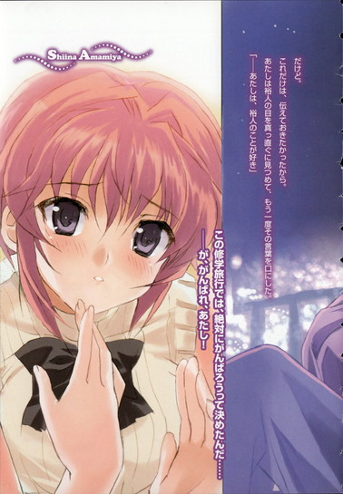
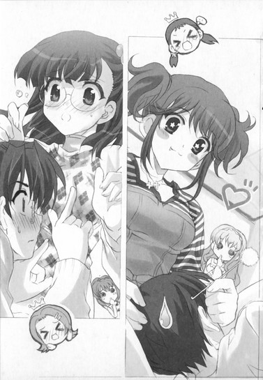

| [五十嵐雄策] 乃木坂春香の秘密11 | |
| 五十嵐雄策 | |
| (2015) | |
|
乃木坂春香の秘密 11
五十嵐雄策
|
底本データ
一頁17行 一行42文字 段組１段
乃木坂春香の秘密⑪
容姿端麗で才色兼備、『白銀の星屑』という二つ名まで持つ超お嬢様、乃木坂春香。乃木坂家を巻き込んだ波乱の京都救出劇を経て、また少し春香との距離が縮まった二月。春の訪れを告げるこの時期、白城学園二年生は学生イベントでも最大級の期待度が高まる修学旅行を迎えたのだった。最近ちょっと積極的になってきた感のある春香と一週間も一緒に過ごせるだけで、さすがに俺も色々な期待を隠せないのだが......。この修学旅行に懸けていたのは椎菜も同じで、彼女も密かに行動を開始して──!?
女子風呂＆女子部屋でのハプニングやお騒がせ牧場体験学習、椎菜の地元の小樽でのメモリアルなど楽しい想い出が増えるものの、事件は最後の夜に起きた──。
五十嵐雄策
五十嵐雄策の秘密⑪。10月３日生まれのＯ型。第４回電撃ｈｐ短編小説賞最優秀賞を受賞し、文庫デビュー。念願のＴＶアニメ化、しかも第２期もオンエアなんて、これもひとえに読者の皆様のおかげです。頭を垂れる稲穂の気持ちを常に忘れず椎菜との行方も頑張ります！
イラスト：しゃあ
しゃあの秘密⑪。「電撃Ｇ'ｓマガジン」で『ＣＬＡＮＮＡＤ』のコミック連載中。第２期アニメオンエアに伴い、狩りや野球をする時間も削られ中。おまけに椎菜が不憫で悲しんでます。

乃木坂春香の秘密 11
世の中には予想外のことが往々にしてある。
予想外にして不測の事態。
様々な場所とシチュエーションとで発生するそれは、本人も想定していなかった忘れ物だったり、意外なところに現れる闖入者だったり、思わぬ場所での再会だったりと、実に多彩にして多種多様である。
「......」
まあ俺たちが生きているのは銭湯の曇りガラスのように先行き不透明な現代社会である。
何かをするにつけその度に予想外のことが生じるのは、ある意味仕方ないっちゃあ仕方がないことなんだろう。ゲリラ豪雨が発生すればビニール傘が通常の三倍増しで売れるくらいに不可避なもんというか。
「......」
ただ予想外の事態には大抵予想外な結果が付いて回る。
それは元々の始まりが想定されていないものだけに、生じる結果というやつはさらに輪をかけて予測の範疇外に存在するものであり......
「............」
いや何を毎度毎度ワケの分からんことを言い出すんだって思われるかもしれんが、こんなことを言い出すのにはやはりいちおう理由があるんだよ。
今回の北の国への七泊八日の修学旅行。
その中で生じた予想外の事態ってやつが、あまりにも本当に予想外すぎたハプニングだったわけで──
第四十一話
０
それは椎菜のお泊まり問題やらラクロス部の廃部問題やら京都での那波さんの女将継承問題やらで色々とハプニング続きだった二月の終わりから二週間ほどが過ぎ、一時期の寒さも少しずつ和らいで春の訪れが意識され始める三月上旬のある日のことだった。
まだ朝も早い午前八時。
全体的に天気の良い日が多いこの時期にしてもメッタにないほどの完全な晴天で、眼前のガラス越しの頭上に広がる空はまるで何かをそこはかとなく期待させるかのようにどこまでも青く澄み渡っていて......
「スーパーマリモブラザーズです、裕人さん♪」
「え？」
と、隣の春香がやたらときらきらとした目をしながらそんな晴れやかな空に微妙にそぐわない台詞を言ってきた。
「マリモさんとソウージさんからなる二人組のご当地キャラクターさんなんです。愛嬌があってとってもかわいらしくて......。まりもっこりさんも捨てがたいんですけれど、やっぱり今の一番のお勧めはこちらだと思います♪」
「あー、それってあれか、前に言ってた最近の春香のお気に入りっていう......」
「はいです♪ きっと今年はぶれいくひっしです♪」
大きくうなずきながら両手をぎゅっとグーにしてくる。
その目の奥にはまさしく阿寒湖に沈む生鮮マリモのようなエメラルドグリーンの光が楽しそうに浮かんでいた。
「......」
いや一体こんな朝っぱらから何の会話をしてるんだっていう話だが、これは別に隣の天然ぽわぽわお嬢様が怪しげなマリモの精（兄弟）に憑依されたってわけではなく──
「でも本当に嬉しいです......♪ 修学旅行で北海道に行けるなんて......」
うきうきと声を弾ませながら春香が視線を窓の外に送る。
「以前から一度訪れてみたかった場所なのでとっても楽しみで、もう昨日の夜からわくわくしていて......あ、見てください！飛行機さんがたくさんです。色々な大きさや色のものがあって......私たちが乗るのはどれなのでしょうか......？」
「ん、たぶんあれじゃないか？ あの白くて長い感じの......」
「わあ、あそこでどっきんぐされているのですね？すごく大きいです......（どきどき）」
その先を通り過ぎていくのはＪＡＬやらＡＮＡやらのアルファベット三文字のマークをした飛行機の数々。
その中の一つがまさにこれから俺たちが乗り込む予定の７０３便であり......
「......」
──まあ、そういうわけなのである。
俺と春香が現在いるのは人で賑わう羽田空港。
東京の海岸沿いにある空の玄関口に、これから七泊八日の修学旅行で北海道へと向かうべく集合しているのだ。
修学旅行ということでもちろん俺たち二人だけではなく、周りではたくさんの白城学園生や見慣れたおなじみのメンバーが楽しそうにわいわいと声を上げていて......
「さー、今日からいよいよ待ちに待った北海道だよー！たっぷりスキーをやってシャケを釣り上げてクマを餌付けして、骨の髄まで道産子をエンジョイするんだからー。おー！」
「りょ、良子ちゃん、楽しみなのは分かるけど、空港でスキー板を履いちゃだめだよ......」
「むー、そうなのー？」
「う、うん......。ほ、ほら、周りの人たちも見てるし......。それに釣り竿を持ち込むのもまずいと思う......」
「えー、これくらいいいじゃーん。自然に優しい竹製のマイ釣り竿だしー。ね、椎菜もそう思うよねー？」
「え？ あ、え、ええと、麻衣の言う通りだと思うんだけど......」
「ぶー、椎菜までー」
少し離れたロビーでそんなやり取りをしているのは澤村さんに朝比奈さん、椎菜。
相変わらず澤村さんはテンションがツインテール娘仕様というか、いやそりゃあそんなもんを飛行機に持ち込んだら間違いなくアクを取ってないゴボウみたいに渋い顔されるだろ......
「ふむ、やはりスチェワーデス......客室乗務員さんの制服はたまらないな」
「そうですね。あのストッキングに包まれた脚のラインが何とも魅惑的で蠱惑的、僕らの理性を惑わせるといいますか......」
「もはや芸術の領域だ。ああ、あの太ももとスカートとで構成された禁断の三角形に挟まれたい......っ」
「......」
いつものごとく隅っこに固まって『客室乗務員さんのストッキングと美脚と日本経済の相関性』とやらについて語ってるのは永井、小川、竹浪の三馬鹿たち。
相変わらず何がやりたいんだかさっぱり分からんが、これはまあこっちから触れなければ特に害はないから絶賛放置しとくことにしておこう。
「わー、あれはドジっ娘アキちゃん仕様のジャンボだねー。んー、でもちょっと塗りが甘いかなー。こういったイベントモノにしてはよくできてるけど、僕に任せてくれれば完璧に仕上げてみせるのにー」
その横では、隣のクラスなのにも関わらずなぜだか当たり前のように俺たちのクラスに混じっている十年来の幼馴染み（♂）がそんなワケの分からんことを言っていて。
「......」
他にもクラスメイト同士で仲良く「ねえねえ、どこに一番行きたい？」「あたし？ん、そだな、小樽のオルゴール館かな」と楽しそうにガイドブックを広げていたり、輪になりながら北海道山手線ゲームをしていたり、アホな副担任の音楽教師が「うふふ～、北海道と言えばやっぱり海の幸よね～♪カニにウニにエビにイクラにホッキ貝......それにススキノのイケメンたちも諸手を挙げて待ってるわ～♪おねいさん昨日の夜から楽しみで楽しみで眠れなくて、日本酒を三瓶も空けちゃった～♪」などと騒いだりしている。
「......」
表れ方こそそれぞれだが、どの顔もこれから始まる修学旅行への期待で浮かれているって点だけは共通してるんだよな。
空気がどこかそわそわしているというか、いい意味で落ち着かない感じになっているというか（いやまあ最後の音楽教師の生徒たちのだれよりも浮つきまくってるはしゃぎっぷりはどうなんだって話だが）。
「......」
そしてそれは俺も同じだったりする。
高二の最後にして高校生活最大のイベント。
思いもよらないインパクトフルな何かが起こりそうな予感がしていて......
目の前の楽しげな光景を何となく眺めながらそんなことを思っていると、
「──思い出に残る修学旅行になるといいですね、裕人さん♪」
「え？」
と、春香がにっこりと微笑みながらそう言ってきた。
「何といっても一生に一度しかない経験です。みなさんと──裕人さんといっしょに行く北海道......。忘れられないようなかけがえのない思い出を、たくさん作れたら素敵だなあって......♪」
「春香......」
「え、えへへ......♪」
ふにゃんと相好を崩して、ちょっとだけ恥ずかしそうに身を寄せてくる。
その様子は甘えきった仔犬のようであり、これまで以上に心を許してくれている表情であり......
む、むう、胸にズギュンとくる反応だね。
腕のところに触れる柔らかな感触とふんわりと漂うフローラル系の落ち着く香りを感じながらそう思う。
あの京都での様々な出来事を経て、春香との関係にまた少しだけ変化があったような気がするんだよ。いや何がどうとは言えないんだが、これまでになく積極的に甘えてきてくれるようになったというか懐きの感情をストレートに出してきてくれるようになったというか......
ぽわぽわお嬢様のペルセウス流星群みたいなかわいさの雨を前にしてメテオストライクな心地になる俺に、
「んー、綾瀬っちと春香ちゃんは二人でなにらぶらぶしてるのかなー♪」
「え？」
と、ようやくスキー板と釣り竿を諦めたのか付属品なしの制服姿に戻った澤村さんが、楽しそうな顔でいきなりそんなことを言ってきた。
「さっきから見てたけど、なーんか二人だけの世界で二人だけの空気作っちゃってさー♪もー、ほんとに仲いーんだからー。でもらぶらぶいちゃいちゃするのはいいけどここは空港だよー。少しは自重しないとー♪」
「え、え？ そ、そそそそそんな、ら、ららららぶらぶだなんて、そ、そんな......」
「そ、そうだぞ、別に俺たちはだな......！」
声を揃えて反論しようとするものの、
「えー、何を今さらー。どっからどう見ても世界は二人だけのものっていうか、長年連れ添った夫婦みたいだったぞー。羨ましいなー、このこのー♪」
さらににやにやと笑いながらつんつんと春香と俺のデコを突ついてくる。
「ふ、ふうふ、ですか......!?」
「そうだよー。それも新婚ほやほやで、らぶぱわー真っ盛りな若夫婦って感じかなー」
「わ、若夫婦......ゆ、裕人さんと、私が......（真っ赤）」
ほとんど完熟し食べ頃になったマイクロトマトみたいになる春香。
完全に行動停止状態である。
「だ、だからだな......」
そんな春香に代わり何とか釈明しようとするが、
「あー、もう、ほんとにアツアツだねー。冬なのにこの辺りだけ常夏のトロピカルアイランドみたいな感じでさー。この幸せバカップルどもめー♪」
「......」
聞いちゃいない。
ぐ、ツインテール娘ってのはどうしてだれもかれもこう人の話を聞きやしないマイペースなんだ？なんかその二本の髪束には人の話を遮断する回路でも詰まってやがるのか......
双葉女学院の元祖ちんまいツインテール娘に引けを取らない唯我独尊なゴーイングマイウェイっぷりに心の中で深いため息を吐いていると、
「......」
「どうしたの、椎菜ちゃん？」
「え？」
「何か元気ない感じだよ......？ もしかして、お腹でも痛いの......？」
「あ、そ、そうじゃないんだよ！ 別に具合が悪いとかじゃなくて......」
「......？」
「あ、え、ええと、き、昨日は旅行のことが気になってあんまり眠れなかったから、ちょっとぼーっとしちゃったのかな。あ、あはは」
何やらその後ろで椎菜たちがそんなやり取りをしていた。
むう、どうしたんだろうね。なんか気になることでもあるのか？
少しだけ怪訝に思っていると、
「は～い、みんな～、それじゃあそろそろ飛行機に乗るわよ～ん♪あっちのゲートから入るから、お行儀よく並んで順番に進んでいってね～ん。......うふふ、あと少しよ～。あのゲートの向こうには数え切れないほどの海の幸とイケメンがおねいさんを待ってるわ～♪」
セクハラ音楽教師（いちおううちのクラスの副担任）のそんなダメな方向に弾んだ声が響き渡った。
「おおー、夢の北海道へミラクルダイブだー！」
その号令とともに興味が即座にそっちに移ったのか、澤村さんが搭乗ゲートへとダッシュで向かっていく。
「あ、りょ、良子ちゃん、走っちゃだめだよ......」
「えー、だいじょうぶだいじょうぶー！ ほらー、椎菜も麻衣も行こうよー！」
「あ......」
「ま、待ってよ、良子ちゃん」
椎菜と朝比奈さんの手を引いて三人でさらなるダッシュ。
同じようにゲートへと向かう他のクラスメイトたちにぶつかりそうになりながらもムダに軽やかなフットワークでそれらを避けつつ、一番手で突入していく。
本当にどこまでもマイペースだな......
「......あー、俺たちも行くか」
「あ、は、はいです」
まだ顔を火照らせたままの春香がうなずいて。
二人並んで、ゲートを通り抜けたのだった。
１
さて今さらながらの説明になるが、俺たちがこれから臨むのは七泊八日の修学旅行である。
行き先は北海道で、その目的は様々な土地の色々な文化や風俗に触れることにより新たな発見を学習して学を修めるためということになっている。
簡単な予定としては一日目に札幌周辺の自由観光。
二日目、三日目、四日目は牧場や漁港や市場での体験学習。
五日目が休養も含めた自由行動日。
六日目と七日目が小樽、ニセコ方面の自由観光ということになっている。
全体的に自由行動の時間が多いのは、まあ白城学園の校風ゆえだろう。どこまでもフリーダムなセクハラ音楽教師に代表されてるみたいに、意外にそういった規律（？）はゆるいんだよな、この学校。
まあそれはそれとして、修学旅行なのである。
およそ一週間かけて開催される長期旅行。
その日数の長さもさることながら、その日程に土日を挟んで行われるってところも割と珍しい。
これは何でも平日だけでは見られないその地方の休日の姿ってやつに触れることに意義があるとのことらしく、まあ理にかなった理由だとは思う。
ともあれそういうわけで。
今日から来週の金曜日までの八日間、北海道で過ごすこととなったのである。
北海道まではおよそ一時間半の空の旅だった。
隣の席の春香とスーパーマリモブラザーズとまりもっこりの話をしたり、澤村さんたちと世間話をしつつ軍人将棋（朝比奈さんがなぜか持ってきていた）をしたり、三馬鹿たちが相変わらずのアホ話をしているのを眺めたりしてのあっという間の九十分間。
そんなこんなで新千歳空港に降り立った俺たちはＪＲで三十分ほどかけて移動して。
今は札幌駅前のちょっとした広場のような部分に立っていた。
「──わあ、これが北海道なんですね......」
駅から外に出るなり春香が白い吐息とともにほうっと声をもらす。
「す、すごいです......この時期でもまだまだ寒くて雪も残っていて......。それにとっても空気が澄んでいる感じです......」
「ああ、そうだな」
春香の言葉にうなずきながらそう返す。
確かに東京とは空気の感じが全然違った。肌に触れてくる外気が完全に冬のそれというか。雪でほんのりと白くなったビルの壁際に設置されていたデジタルの気温計を見るとマイナス二度。ほとんど真冬とか冷凍庫の中とかそういうレベルである。
むう、これだけ寒いと防寒具としていつかのダグラスくん（シロクマ）が欲しくなってくるな......
いまだ冬真っ盛り（東京基準）な札幌の街並みを眺めながらそんなことを思っていると、
「は～い、それじゃあみんな聞いて～。ここからのスケジュールを確認するわね～」
ぱんぱんと手を叩きながら由香里さんがそう呼びかけてきた。
「え～と、これから先は基本的にグループ行動になるわね～。あらかじめ決めておいたグループに分かれて、提出した予定表に従って札幌の市内を観光してもらいます～。先生たちはいっしょに付いてはいかないけど、観光中は白城学園生としての自覚を持って周りに迷惑をかけないようにね～。で、観光を終えたら六時までにホテルのロビーに集合よ～。遅刻する時はちゃんと先生の携帯電話に連絡を入れるように～。連絡なしに時間通りに集まらないとみんなに迷惑をかけることになるからそれだけは気を付けてね～」
ぱちりとウインクをしながら周りを見回す。
おお、珍しく教師らしいことを言ってるな......と思いきや、
「──とまあ、お堅い連絡事項はここまでかしら～。せっかくの北海道なんだから、みんなそれぞれの桃色な思い出をメイクラブして旅行を堪能するのよ～。亀甲縛りみたいにがちがちに縛られたお役所進行なんて楽しくも何ともないものね～。せんせいも心の底からフリーダムに楽しむ予定だから～。──それじゃあ、かいさ～ん♪」
「......」
そんな一部余計なセクハラフレーズさえ入れなければそれなりにいいことを言っている由香里さんの声が響いて、
「ねえねえ、どこから行く？」「定番で時計台辺りからでいいんじゃない？」「私はもいわ山展望台がいいな～」「ラーメン食いに行こうぜ、ラーメン！」
周りのクラスメイトたちが皆それぞれのグループに分かれながら次々と札幌の街に散っていった。
「よーし、それじゃあ私たちも出発するぞー！」
それに負けじとばかりに、澤村さんが勢いよく空に向かってくグーを突き出しながらそう声を上げて。
「北海道方面札幌地区攻略軍澤村部隊の出陣だー！隊長は私がやるから、椎菜と麻衣と春香ちゃんは参謀をお願いー。で、綾瀬っちたちは斥候兼雑用の二等兵だー！はい、敬礼ー！」
「あ、は、はい。け、敬礼、ですっ」
律儀な春香が一人ぴょこんと右手を頭の横に当てる。
まあ参謀だの二等兵だのはともかく、今澤村さんが宣言した通り俺たちのグループは春香、椎菜、澤村さん、朝比奈さん、三馬鹿、俺の八人である。
女子四人に男子四人の八人グループ。
まあいつも通りといえばいつも通りなメンバー構成で、指揮はいちおう澤村さんが執ることになっていた。
「さー、じゃあまずどこから行こっかー？ 一番はやっぱりウトロ温泉あたりかなー？野外露天でクマといっしょに温泉に入ろうよー！」
ノリノリな澤村さんに、
「りょ、良子ちゃん、ウトロ温泉は知床半島の方だよ......」
「え、そうなのー？」
「う、うん。残念だけど......」
朝比奈さんが申し訳なさそうにそう言う。
「むー、上官に口答えするとは何事だー！ お仕置きしてやるー、このこのー！」
「あ、きゃっ、りょ、良子ちゃん、眼鏡を取らないで......」
ぱたぱたと手を動かして悲鳴を上げる朝比奈さん。
「ぬー、そっかー。ならウトロは諦めるしかないかー。あ、だったら有名な霧の摩周湖とかはー？みんなで霧に包まれてアンニュイな気分に浸ろうぜー！」
「あ、そ、それも道東の方で......」
「えー、そうだっけー？」
「う、うん......」
「むーん、そうきたかー。北海道、意外に手強いなー」
澤村さん、少しだけ考え込むような声になって、
「よーし、じゃあじゃあこれは鉄板だー。大間とかはー？大間で漁船に乗ってマグロを一本釣りするのー！」
「そ、それはすでに北海道ですらないよ......」
朝比奈さんが絶望的な表情でそう声をもらした。
「......」
いや澤村さん、ほとんどノリで言ってるだけだろ......
てか大間が青森なんてことは今日び小学生でも知ってるような気がするんだが。
だがしかし朝比奈さんの言葉に澤村さんは心の底からショックを受けたような顔になって、
「そ、そんなー、大間もだめなんてー......うー、もうチェックメイトだよー。麻衣、椎菜、あとは任せたー......」
「え、わ、私......？ え、ええと......北海道はあんまり詳しくないし、良子ちゃんが全部調べてくるから絶対に情報誌とか見るなーって言ってたから......」
「あ、あたしもこの辺は初めてだよ。地元に近い小樽とその周りなら分かるけど、札幌は割と守備範囲外で......」
いきなり振られた朝比奈さんと椎菜が弱りきった声で顔を見合わせる。
その隣で訊かれもしないのに三馬鹿たちが、
「ちなみに我々はスチュワーデスさんの脚線美と旅館の露天風呂の攻略法と夜中に男女混合でやるパーティーゲーム以外のことは何一つとして調べてきてはいない！」
「それが僕らの旅の全てですから！」
「俺たちの果てしない求道の前に観光などという浮ついたものは不要だ！」
自信満々な声でそんなことを言いやがる。
いやそこはこれっぽっちも胸を張るところじゃないと思うんだがな......
まあそんなアホ×三な主張はともかく。
問題は現状をどうするかである。
いきなり発生しただれも札幌についての詳しい情報を知らないという致命的なシチュエーション。
早くもスタート時点から混迷を極める澤村部隊に、
「──あ、あの、よろしければ、これはどうでしょうか......？」
「え......？」
救いの女神が現れた。
さっきまで敬礼のポーズをしたまま固まっていたぽわぽわお嬢様。
半歩だけ前に出た春香はおずおずと手を挙げて、
「え、えと、実は時間がありましたので『修学旅行のしおり』を作ってきたんです。手製のものなので恐縮なのですが、色々と調べてみましたので少しでも助けになればと......」
「え、しおり？ どれどれ......おー！ なんかワンダフルだよー！」
小冊子を受け取った澤村さんが歓声を上げる。
「あ、す、すごいです......。よく書き込まれているのに分かりやすくて詳しくて......」
「ホントだ......すっごくよくできてる。名前を書く欄まであるし......乃木坂さん、これ一人で作ったの？」
朝比奈さんと椎菜も驚いた顔でそう訊いてきて、
「あ、は、はいです。その、修学旅行が楽しみでしたので......」
胸の前で指を回しながら恥ずかしそうに答える。
ふむ、確かに春香、こういうしおり系のものを作るのは大好きだからな。
いつかの夏コミしかり冬コミしかり温泉旅行しかり。イラストがその、ゴホン、ちょっとばかり妖怪的だってことを除けば、内容的には全てこの上なくよくできてたって覚えがある。元々何でもできる才色兼備なお嬢様だ。旅行ガイドの作成くらいはお手の物ってとこなんだろう。
そんなことを考えながらパラパラと俺も中を眺めてみる。おお、ホントによくできてるな。札幌だけでなく北海道全般にわたって解説が載せられていて非常に分かりやすい。割と致命的な要素であると思われたイラストも、各所で写真が併用されていることでだいぶマイルドな印象になっていて......
「......ん？」
と、そこで気付いた。
でもこのしおり、なんか各所に妙なマーキングされてないか？顔が三つある阿修羅みたいな生き物が嗜虐的な笑顔で血まみれの剣を振りかざしてる......。パッと見たところ澤村さんたちのしおりにはないみたいなんだが......
たまたま発見した珍生物に首をひねっていると、
「あ、ゆ、裕人さん......」
「ん？」
と、春香がこそっと顔を寄せてきた。
「あ、あの、実は裕人さんのしおりは、特別製なんです......」
「特別製？」
「は、はい。その、ゆ、裕人さんのためだけに作った世界で一つだけのおんり～わんで......。北海道のドジっ娘アキちゃんポイントがマークされていますです......」
「ドジっ娘アキちゃんポイント......」
って、ひょっとしてこの阿修羅面をした鬼神がドジっ娘アキちゃん......なのか？
や、てっきり争いに飢えた荒ぶる魔神同士の血で血を洗うガチンコバトルの現場か何かだと思ってたんだが......
「え、えと......実は北海道は、ドジっ娘アキちゃん劇場版の『ドジっ娘アキちゃん北海道編～囮捜査で花咲ガニ密漁業者を一網打尽にしろ！～』の舞台になっている土地なんです。各所でアキちゃんたちが活躍するご当地スポットがあって......。それで、その、裕人さんといっしょにアキちゃんの縁の地に少しでも触れられたらいいなあって思って......」
恥ずかしそうに顔を赤くしながらさらに小さな声でそう言ってくる。
「......」
ナルホドね。そういうことか。
それは確かに他とは違う特製の一品だし、そういった春香の趣味に関わることだったら澤村さんたちのものには載せられないだろう。
俺は小さくうなずき返して、
「そっか。分かった。じゃあこのことは......俺たちだけの秘密だな」
「え......？」
「春香と俺のだけにマーキングされたポイントなんだろ？だから、秘密だ」
「あ......」
その言葉に春香は最初驚いたように目をぱちぱちとしていた。
だがすぐにものすごく嬉しそうに顔をほころばせて、
「は、はい、秘密、です♪」
ぱたぱたとシッポを振ってくる仔マメシバみたいな表情でぎゅっと胸の前で両手をグーに握った。
う、うーむ、やっぱりかわいいな......
仕草の一つ一つからかわいさと可憐さが濃縮されたスペシャルオーラが富士山麓の湧き水のように溢れ出てるというか。ほとんどかわいさのフィーバー状態だ。
そのあまりの愛くるしさにとろけたサツマイモアイスのようになっていると、
「春香ちゃーん！ ナイスだよー！」
「あ、あうっ」
とそこで、横から突撃するように澤村さんが抱きついてきた。
「すごいすごいー、ほんとにこのしおり、グンバツだよー！もー、ほんとに何から何までできた子なんだからー！」
「あ、い、いえ、そんな......」
「そんなことあるってー！ これで澤村部隊の未来は安泰だよー。よーし、それじゃあこの功績を讃えて、これより春香ちゃんを我が部隊の副隊長に任命するー！副隊長、隊長に最敬礼だー！」
「あ、は、はいっ！」
慌てたように再びしゅぱっ！と敬礼する春香。
うーむ、どこまでも素直だな......
というわけで色々と始まりから一悶着はあったが、そういう次第で何とか澤村部隊による札幌観光がスタートした。
澤村さんを隊長、春香を副隊長とした八人グループ。
ノリノリな澤村さん（札幌の知識まるでナシ）を先頭に据えながら、春香作の「修学旅行のしおり」を頼りにまだまだ雪の残る札幌の街を闊歩していく。
「春香ちゃん、ここは何なのー？」
「えと......ここはさっぽろ羊ヶ丘展望台、です」
「ひつじがおかー？」
「はいです。夏の天気の良い日には羊さんたちがのびのびと放牧されているそうで......。クラークさんの『ぼーいずびーあんびしゃす」の名言で有名ですね」
「おー、ほんとだー。偉そうに立ってるなー」
北海道らしく見晴らしのいい高台にクラーク博士の銅像が建つ公園のような場所でそんなやり取りをしたり、
「こちらは有名な札幌時計台です。えと、正式名称を旧札幌農学校演武場というらしく、館内では札幌の文化財建造物や札幌農学校の歴史を展示しているみたいで......」
「あ、そんな正式名称があったんですね。初めて知りました」
「そこまで調べてるんだ？ ほんと詳しいね。北海道の人でもあんまり知らないのに......」
「あ、そ、そんな......」
市街に建造されている時計付きの建物を見上げながら朝比奈さんと椎菜にもほめられて春香が恐縮したり、
「おー、ラーメンだー！ 辺り一面ラーメンだー！ふっふっふっ、これはこの『豊島区のラーメンマン』と呼ばれた良子ちゃんに対する挑戦だよねー？血湧き肉躍る残虐ファイトだよー！」
「りょ、良子ちゃん！ 永井くんにキャメルクラッチをしちゃだめだって......」
「あ、泡吹いてるよ！」
「............ゴ、ゴボボボボ............（死にそう）」
札幌ら～めん共和国とやらで馬乗りになって肉弾戦をしたり（というか澤村さんのその呼称は絶対に何か違う由来だろ......）。
他にも札幌ドームやら白い恋人パークやらを回ったりと。
なかなかに中身の濃い前半戦だった。
「うふふ、楽しいですね、裕人さん」
「ああ。でも春香、本当に詳しいな。ここまで調べるのは大変だったんじゃないか？」
素直にそう思ったので歩きながら訊いてみると春香は急に恥ずかしそうな顔になり、
「あ、い、いえ。好きでやったことですので......。それに全部を一人でやったわけではないんです。葉月さんが色々と教えてくださって......」
「葉月さんが？」
あの無口メイド長さん、北海道に詳しかったりするのか？
すると春香はこっくりとうなずいて、
「はいです。えと、葉月さんは北海道出身なんです。中学生になるまではこちらに住んでいらっしゃったとのことで、すごく詳しくて......。普通に調べただけでは分からない穴場的な情報もたくさん教えてもらいました」
「へえ......」
それは意外な事実だった。
あの無口メイド長さんと北海道のイメージがあまり結びつかないというか。
だけど思い返してみれば、いつだったか夏休みの帰省土産とやらで熊カレーを買ってきてくれたことがあったような気もする。北の方の出身の人らしく肌も白いし......。ふむ、そう考えてみればそれほど不思議なことじゃないのかもしれん。
しかし前回のにっこりメイドさんといい今回の無口メイド長さんといい、乃木坂家メイド隊はホントに謎だらけだね。
まあそんな感じのやり取りを挟みつつ、さらに札幌観光は進んでいく。
ビール工場見学やさっぽろテレビ塔登頂や大通公園散策など。
賑やかで笑い声の絶えない時間。
「わー、なんか生ビールってしゅわしゅわした麦色のジュースみたいでおいしそー♪生って響きもいい感じだしー。ね、ね、ちょっとくらいは飲んでもだいじょうぶかなー？」
「え？ だ、大丈夫じゃないよ、お酒は二十歳からだって......」
「そ、そもそもここにあるのは売り物じゃないと思うし......」
澤村さんはどこまでも変わらずにノリノリなテンションではしゃぎまくっていて、朝比奈さんや椎菜がそのフォローに終始していて。
その傍らでは三馬鹿たちが、
「ふむ......バ●ガール姿のお姉さんの胸元は素晴らしいな」
「ええ、もはやあれは文化財レベルですね」
「男の夢の詰まった大雪山だ。来てよかった......」
これまた相変わらずアホ会話をしていて、
「......」
それらは全体的に、この上ないくらいいつも通りな光景である。
だがそんな中。
一つだけ普段とは異なるものがあって。
それは観光スポット間の移動中に澤村さんたちとは少し離れた位置を歩いていた時──
「裕人さん、あれは札幌宮の森美術館です。マリモブラザーズのマリモさんお勧めのスポットなんだそうですよ」
「そうなのか？」
「はい。二十世紀後半以降の現代アートを主に扱っている美術館で......あっ──」
「お......」
ピタッ。
たまたま隣同士だった俺と春香の手が微かに触れ合ったりした。
ハプニングで偶然な接触。
いやそれは本当に何気ないというか無自覚なタッチで、普段の春香なら「あ、ご、ごめんなさいですっ......！」とあせあせと慌てた様子ですぐに手を離すはずなんだが。
「............」
だが春香はそのまま顔を赤くして、
きゅっ......
「！」
恥ずかしそうに「──っ」と声を上げつつも......小さく握り返してきてくれた。
「は、春香!?」
予想外の反応に思わず声を上げると、
「──え？ あ、す、すすすすみませんっ......！あ、あのっ、そのっ、何だか、こ、こうしたくなってしまって......ご、ごめんなさいです。す、すぐに離しますから......っ」
「あ、い、いや！」
「え......？」
「俺としては構わんというか何というか......」
春香さえよければこれっぽっちも拒否する理由なんてないわけで......
「あー、そのだな。イヤじゃないならもう少しこのままで......」
メガネの角度を直しながら少しだけ視線を逸らしてそう伝える。
すると春香はぱあっと嬉しそうな顔をして、
「は、はい......！ い、いやなんてことあるわけないです！む、むしろずっとこうしていたいくらいで......。え、えへへ......♪」
少しだけはにかみながらきゅ～っと小指と薬指を握ってきてくれる。
む、むう......何だか今日の春香はプチアクティブだな。
笑顔がまぶしくて少しだけ並んだ身体の距離が近くて、いつもよりも三倍増しでかわいく見えるというか......
い、いや、春香はいつだってかわいいんだよ。
熱帯魚で言えばエンゼルフィッシュレベルのかわいさ。
ただ今日はそれにさらに磨きがかけられてフルスロットルされているように思えて......
「な、何だか不思議な気分です......。裕人さんといっしょにいるだけで、触れているだけで、顔や身体が熱くなってきて、胸がどきどきして破裂してしまいそうで......。ほ、北海道なのに......」
「春香......」
「ど、どうしてでしょうか......？ こ、こんなのは初めて、です......」
恥ずかしそうにぎゅっと目をつむりながらも握った手に少しだけ力を込めてくる。
空港での甘えっぷりもそうなんだが、なんか普段と雰囲気が違うというか、修学旅行で多少なりとも気分が高揚してるってのもあるんだろうが前よりも色々と感情を素直に表現してくれるようになった感じで......
ちなみに遠慮がちに身を寄せてきてくれる春香の左手薬指には、『月の光』が光っていた。
クリスマスに俺が春香にプレゼントしたムーンストーンの小さな指輪。
何気ないことなんだが、それを自然に着けてくれているのが嬉しいというか何というか......
「ゆ、裕人さんの手、あったかいです......」
「そ、そうか？」
「は、はい。とってもほかほかで、まるで寒い日にベッドにごいっしょする湯たんぽさんみたいに、ほっこりと心地好いです......」
「む、むう......」
「......」
「......」
「......♪」
照れた様子ながらも嬉しそうに身を寄せてくる春香。
結局、澤村さんたちがこっちに戻ってくるまで、俺たちは手を繋いだまま札幌の街並みを並んで歩き続けたのだった。
２
「はー、たくさん回った回ったー」
両手を挙げた澤村さんが柔らかそうなソファーにどさっと腰を下ろしてそう声を上げる。
「さすが北海道だなー。札幌一つとってみても広くて見どころがもりだくさんで、文字通り北海道でっかいどーっていうかー。でも隊員のみんなを色んなところに案内できて隊長冥利につきるよー、うんうんー♪」
何かをやり切ったかのような満足げなことこの上ない表情。
いや案内やら解説やらをしてたのはほとんど春香で、この白城版ツインテール娘はキャメルクラッチ以外ほとんど何もしてないんじゃないかって突っ込みは......今さら野暮なんだろうな、きっと。
なのでそれはまあいいとして。
とりあえず今俺たちがいるのは今日泊まる予定の『ホテル・流氷』のロビーだった。
ホテルというよりはどちらかといえば旅館に近い感じのたたずまい。
あれからさらに北海道大学やら北海道庁旧本庁舎やらいくつかの札幌市内の観光スポットを回って（なかなかに強行軍だった......）、今は本日の最終集合地点であるこの場所で待機しているのだった。
「楽しかったね、椎菜ちゃん」
「うん、色んなスポットが目白押しで、回りごたえがあったよー」
「でもやっぱり北海道はダイナミックだなあ......。道とかすごく広いし......。あ、六日目には椎菜ちゃんのお家がある小樽にも行くんだよね？楽しみだなあ......」
「ん、んー、でもそんな期待するほどのものでもないよ？運河とオルゴール館以外は比較的地味な感じだし......」
朝比奈さんや椎菜たちもそんなことを話していて。
その周りでは戻ってきた他のクラスメイトたちも楽しげに談笑している。
ちなみに集合時間である午後六時からはすでに二十分が経過していた。
ロビーに人影はまばらで、もう他のクラスは点呼と今後のスケジュールの確認とを済ませて部屋へと行ってしまっている。
そんな中何だって俺たちだけいまだに取り残されているのかというと、それはうちのクラスのアホな副担任がまだ戻ってきていないせいであって──
「あ～ん、みんなごめんねこまんま～。せんせい、遅くなっちゃった～♪」
と、そこで空気を読まないどこまでも楽しげな声が響いた。
見ればなんかやけに頬をつやつやとさせたセクハラ音楽教師がロビーの入り口で「てへっ♪」と自分の頭に手を当てていて、
「ちょ～っと時間に間に合わなそうなのはよく分かってたんだけど、最後に入ったお店でウエンツくん似のイケメン板長が出してきた『北海の幸尽くしまりもっこり風』がおいしくておいしくて～♪しかもまたこれが地酒によく合うのよね～。もうやめられない止まらないっていうか、おねいさん色々と絶頂に達しちゃいそうよ～♪」
「............」
今この人、ワンフレーズの中に教師として根本的に問題な単語を何個混ぜてただろうね......
「ま、それはそれでおねいさんのせくし～さに免じて許してもらうとして～。──さ、それじゃあさっさと予定確認をやっちゃいましょうか～。あ、点呼はめんどくさいから各自でやっておいてね～。この後にもススキノの素敵な夜がおねいさんを待ってることだし～」
まったく悪びれない顔でそんなことを言いくさって、
「え～と、まずこれからお部屋に戻って荷物を置いたら、そのまま七時から食堂でご飯の時間ね～。で、そのあとにはお風呂よ～ん。一階にある露天風呂で、うちのクラスのお風呂タイムは男子が八時から九時までで女子が九時から十時までだから時間通りに身体の隅から隅まできちんと洗うように～。あ、ちなみに覗いたりしたらせんせいがお仕置きしちゃうからね～♪それで十一時には消灯だから、それまでにランデヴ～とかは終えて大人しく寝ること～。以上よ～」
それだけ口早に言い終えると、
「──うふふ、おねいさんにはこれから大人の時間が待ってるの～。スイートで胸ドキ☆な、めくるめくアバンチュールタイム......ああ、乙女のロマンだわ～♪」
間違って地上に出て来ちゃった半魚人がふらふらと深きところに這い戻るかのようにしてホテルを出て行ってしまった。
「......」
どこに来ても相変わらずだな、あの人は......
ダメでいいかげんな大人の見本というか。他の教師たちもこのダメ人間についてだけはもう色々な意味で諦めてるのか、ほぼ放置状態みたいだし。
十年以上の付き合いのセクハラ音楽教師（二十四歳彼氏ナシ）のアレな行動に心の底からため息を吐きつつ、
「とりあえず部屋に行くか......」
他のクラスメイトたちと同じように移動しようと荷物を持ち上げかけたその時だった。
くいくい。
「......ん？」
後ろから制服の裾を引かれた。
見てみれば、遠慮がちに見上げた春香がその場にしゃがみ込んでちょこんと握ってきていた。
「？ 春香、どうしたんだ？」
妖怪袖引きの物真似がマイブーム......ってわけじゃあるまい。
すると春香は少しだけ声を密やかにして、
「あの裕人さん、今ってお時間あったりしますか......？」
「お時間？」
「は、はいです。だいじょうぶ、でしょうか......？」
控え目な声でこっちを見上げながらそう訊いてきた。ふむ、夕食まではまだ三十分以上あるから平気だとは思うが。
なのでそう返すと、
「ほんとですか？ あ、で、でしたら少しよろしいでしょうか......？お話ししたいことがあって......」
「お話？」
「は、はい。よろしければ、なのですが......」
うかがうようにしてそう言ってくる。
「ああ、大丈夫だぞ。何か困ったことでもあったのか？」
「あ、その......」
「？」
「え、えと......」
ちょっとだけもじもじとする春香。
だがすぐに何かを思い切ったかのように顔を上げると、
「──その、ここでではなくて、裕人さんと二人だけでお話がしたいんです......」
ぎゅっと目をつむりながらそう言ってきた。
「え......？」
二人、だけで？
思わず訊き返した俺に春香は小さくこくんとうなずいて、
「は、はいです。み、みなさんがいるところでは恥ずかしくて......。なのでその、よろしければ荷物を置いた後でけっこうですので、二人だけで会っていただけると......」
「......」
それは予想外の申し出だった。
い、いや言ってる内容自体はそこまで特別なことじゃないんだよ。単なる談話への誘い。だが今日のここに至るまでの春香の甘え度＋プチアクティブな行動を加味するとまた別の意味を帯びてくるというか。なんかムダに胸が有酸素運動しちまう......
一瞬言葉をロストする俺に、
「え、えと、お忙しいでしょうか......？で、でしたら......」
「あ、いや、大丈夫だ！」
「え......？」
「忙しいなんてことはこれっぽっちもない！ 三馬鹿たちとイス取りゲームでもしようと思ってたくらいヒマだ！」
実際問題として夕飯までは基本的に自由時間だし、それに春香からの誘いだったら何があったって最優先するってもんである。
その言葉に春香はほっとしたように手を胸の前で重ねて、
「あ──ありがとうございます。そう言っていただけると......」
ぺこりと頭を下げると、
「で、では、お待ちしていますね」
恥ずかしがりやのフェレットみたいにたたたっとその場を立ち去っていった。
「............」
その背中を、俺はボーっとカカシのように見送ったのだった。
春香に呼ばれた先はホテルの離れにあたる部分にある一室だった。
二十畳ほどの広さの小宴会室。
照明は消えていて薄暗くて、人の気配はなくて......
「......」
む、むう、こんなところで話って何なんだろうね。
今さらながら、ここまで来てよもやただの世間話ってことはないだろう。ていうか映画とかドラマとかでこういうシーンは何回か見たことがあるような気がするんだが。人気のない場所に男子を呼び出した女子がすること。それから類推すると......
「............」
──い、いやいや。
──ちょっと待て。
自分の考えに自分で突っ込んで頭を出来立てのゼリーのようにブルンブルンと振る。
基本的にはただ話がしたいって呼ばれただけだってのに、それは考えすぎだろ！たまたま場所として選んだ部屋に人がいなかっただけかもしれんし......
しかしそこに何か特別な意味がないかってのもまた否定できずであり......
うーむ......
わ、分からん......
春香の意図が察せずに困惑していると、
ポロン......♪
「......ん？」
ふいにそんな音が耳に入ってきた。
耳通りのいい柔らかな旋律。これは、ピアノか......？
辺りを見回して音の源の方に目をやってみる。
するとそこには──
「お......」
部屋の隅に置かれたピアノと──それを弾く春香の姿があった。
おそらくはホテルに備え付けのピアノなんだろうね。
静かに目を閉じて、音の波に乗るように鍵盤の上で手を踊らせている。
「............」
その光景に思わず言葉を失う。
窓の外から少しだけ月の光が差し込んで薄明るくなった部屋の中と、それを受けて真剣な表情でピアノを弾く春香。
それはまるで映画か何かのワンシーンのようで......
「あ──裕人さん」
「お......」
と、そこで演奏が止まった。
こっちに気付いたのか春香は小さく声を上げると、ピアノから降りてとてとてと歩いてきた。
「来てくださったんですね、裕人さん」
「ん、ああ」
「ありがとうございます。嬉しいです♪あ、ちなみに今弾いていた曲は『ヴォカリーズ op.34-14』といいます。ラフマニノフさん作曲のピアノ編曲バージョンで、アキちゃんが北海道での発表会の時に弾いていたもので......」
「そ、そうか」
微妙に声を詰まらせつつ答える。
む、むう、なんかどう対応するべきか迷うというかムダに緊張するな。いや俺が勝手に余計なことを考えて勝手にテンパってるだけってのは分かるんだが......
どことなく落ち着かない胸の内を隠しつつ一度咳払いをして、
「あ、あー、春香」
「はい？」
「そのだな。それで話ってのは......」
そう促すと春香は「あ、は、はいです......」とちょっとだけ戸惑うような素振りを見せ、
「あの......実は、裕人さんにもらっていただきたいものが、あるんです」
「もらってほしいもの？」
「は、はい......」
胸の前でもじもじと指を絡ませながらそうこっちを見上げてきた。「とても大事なもの、です......」
そして緊張したように前に出ると、
──すっ......
そのまま目をつむって、静かにそっと顔を上げてきた。
全てをこっちに委ねるような、任せきったかのような表情。
「............」
こ、これはどういうことなんだ......？
一瞬頭の中が混乱状態になる。
目の前で生じた状況。
もらってほしいものがあると言って目をつむる春香。
それが何を意味しているのか......さっぱり分からない。
「......」
「......」
う、うーむ。
今さらかもしれんが、こういう時は基本に立ち返って一度状況分析してみるのが吉だろう。
一度深呼吸をして現在目の前にあるシチュエーションを改めて振り返ってみる。
【ここに至るまでの過程】
・まず俺は春香から話があると言われて呼び出されてきた。
・呼び出された先は離れの部屋。
・話というのは、何やらもらってほしいものがあるとのことだった。
【現時点の状況】
・目の前で目をつむっている春香。
・恥ずかしげでもじもじとした様子。二人きりの部屋。
・そしてもらってほしいものは......春香にとってとても大事なもの、らしい。
これらの要素から導き出される答えといえば──
「......！」
こ、これはまさか......っ!?
思わず春香の唇が頭に浮かぶ。
桜色をした艶やかで柔らかそうな唇。
過去にその柔らかインパクトが頬に接触したことはあったわけだが、まさかとは思うがそれが今回はダイレクトに......
「............っ」
や、春香に限ってそんなことがあるわけがないだろ！
無邪気でイノセントな天然ぽわぽわお嬢様。よもやあげたいものがくちび──ゴ、ゴホンゴホン、なんてオチなんてのはあり得るわけがない。
いやしかし絶対なんてことが言い切れないのが世の中ってやつでもあるわけだし......
「......」
......わ、分からん。
寄せては返す冬のオホーツク海の波のように考えが頭の中を行ったり来たりして、もうほとんどパニック状態である。
と、とにかくもうこうなったら流れに身を任せてなるようになるしかない......っ！
ここまで来てジタバタしてもしょうがない。アンコウ職人の前に吊り下げられたチョウチンアンコウってやつである。
「............」
──よ、よし
来るなら来い（？）だ！
そうワケの分からん覚悟を決めてガッチリと目をつむりながらイースター島のモアイのごとくアゴを突き出していると、
ふわり......
ふいに、何かが頭に載せられるような感触がやって来た。
「......？」
こ、これは何だ......？
柔らかな感触ではあるが......少なくとも、その、あれだ、俺が想像していたものでないことだけは確かである。
状況が分からずに戸惑う俺に、
「あ、あの、目を開けてくださってもだいじょうぶです......」
春香の声が小さく響いた。
それに従って目を開けてみるとそこにあったのは──
「......帽子......？」
毛糸でできた被り物だった。それも普通の帽子ではなく、銀行強盗とかハイジャック犯とかが被るいわゆる目出し帽ってやつである。いや何だってこんなものを......
「実はこの目出し帽は、特別なものなんです......」
と、春香がそう言ってきた。
「『ドジっ娘アキちゃん劇場版』で、アキちゃんが大好きなケンくんに渡した手編みの『誓いの目出し帽』で......」
「え？」
大好き、な？
思わずその単語に反応しちまう。
「囮として密漁グループの蟹工船に乗り込むケンくんの身を心配して、アキちゃんが渡すんです。『き、気を付けてね、ケンくんっ。で、でもこれがあれば大丈夫だから！たとえケンくんがスパイだってことがバレても、面が割れなければどうとでもなるもんっ！』と言って......」
「......」
「とっても感動的なシーンなんです......」
「............」
......そ、そうか？
なんか俺にはすげえシュールな一幕にしか思えんのだが......
しかし春香は、
「私、そのシーンがすごく大好きで......。見ているとまるで自分がアキちゃんに勇気づけられているような気持ちになれるんです。だから......裕人さんに、これをお渡ししたくて......。とってもお気に入りで、何度も何度も見たシーン......その一番のクライマックスで、アキちゃんが一生懸命に伝えようとした気持ちを、そ、その......だ、大好きな、裕人さんに......」
「春香......」
「う、受け取って......いただけますでしょうか......？」
真っ直ぐにこっちを見上げながら一生懸命な顔で帽子を差し出してくる。
モノだけ見るとそこはかとなく微妙なんだが、春香にとってはこれは精一杯の好意の気持ちの表現なんだな。
だったら──
「サンキュな、春香」
俺は春香の手から目出し帽を受け取るとそれを被って、
「『誓いの目出し帽』。大事にする」
「あ......」
ポンポンと春香の頭に手をやりながらそう笑い返した。
その言葉に春香は目をぱちぱちとさせて、
「あ、ありがとうございます！ よ、よかったです......」
心から嬉しそうにそう笑顔を向けてきてくれた。
本来ならもらった俺の方が感謝するところのはずなのに、ホントに純真で素直ないい子だな......
どこまでも真っ直ぐな春香のイノセントスマイルに軽く感じ入っていると、
「あ、本当はもう一つお渡ししたいものもあったんですけれど......」
「え？」
ふいに小さくそんな声が聞こえたような気がした。
「だけどそれは......い、いえ、何でもないです。気にしないでください」
ふるふると頭を振りながら何もなかったかのように笑う。
むう、少し気になるといえば気になるが、まあもともとよく聞こえなかったことなので、春香が気にするなってなら気にしないことにしておこう。
「そっか。それじゃあそろそろ戻るか。もうすぐ夕飯の時間だしな」
「あ、はいです。お食事、ですね」
そううなずき合うと、
お互いどちらからともなく手を繋いで、二人で本館へと戻ったのだった。
とまあ、修学旅行の一日目はこんな風に過ぎていった。
いくつかは慌ただしくて少しばかり胸がドクリとさせられる場面もあったりはしたが、概ねは平穏な時間。
初日としてはなかなかにうまく流れた一日だったんじゃないかと思うんだよ。
なのでこのまま平穏を保った状態で終われば......と思ったりもしたんだが。
だが世の中ってやつはイレギュラーな要素が満載であって。
そう思う通りにいかないのが人生であり──特に俺の人生ってやつなんだよな。
３
「ふう......」
頭の後ろでマッサージ機がウインウインと何かの勝利の雄叫びのように鳴っていた。
肩や腰、手足に直接染み入るように響き渡ってくる振動。
「生き返る......」
思わず口からそんな声が漏れる。
背面で鈍く稼働する六つの揉み玉が疲れ切った身体を包んでくれるかのようだった。
現在の時刻は午後九時。
ホテルのロビー隅にあるマッサージスペースで、俺は百メートル走を全力で走りきったエリマキトカゲのようにダラリと身体を横たえていた。
つい先ほど男子の入浴時間も終わり今は消灯までの二時間の自由時間。同室である三馬鹿たちも何やら相変わらずのワケの分からんディベート（？）をしながらどこかに行ってしまい、特にやることもない。今日一日の疲れを癒すべくノンビリと過ごすにはうってつけの時間だった。
「極楽だ......」
マッサージチェア備え付けの手もみ機能に操られた揉み玉が、疲れた筋肉を優しく揉みほぐしていく。
心身ともにリラックスするひと時。
全身を駆け巡る心地よいバイブレーションに昼間のナマケモノのごとき半まどろみ状態になっていると、
「も～、相変わらずおに～さんはじじくさいな～」
ふいに耳元でそんな声が聞こえた気がした。
聞き慣れた耳通りが良く舌っ足らずなキャンディーボイス。
「......」
......ああ、なんか元祖ツインテール娘の声が聞こえるような気がするな。ここのところ何だかんだでだいたい三日にいっぺんは聞いている声。だけど夢の中でまでそれが聞こえてくるなんて、いよいよ俺もツインテール娘症候群発症か......などと思っていると、
「そんなんじゃだめだめだよ～。せっかくの修学旅行の初夜なのに人生枯れ果てて曾孫までいるおじいちゃんみたいにマッサージチェアの常連さんなんてさ～。前の温泉旅行の時もそうだったけど、ちっともやる気が感じられないんだから～」
「そうですね～。穏やかなのはいいですが、草食系すぎる男の子はあんまりいい評価を受けませんですよ～」
「......適度な獣性は雄として必要不可欠です」
「──（こくこく）」
続いて耳に飛び込んできたのはそんな言いたい放題な声（とうなずき）の四連発。
むう、すげぇ余計なお世話だというか、夢にしてはやけにリアルだな......と何となく目を開けてみるとそこに立っていたのは──
「あ、やっと起きた。おねぼうさんだよ、おに～さん♪」
「おはようございます～、裕人様～」
「......納屋で眠るトナカイのような寝顔でした」
「──（こっくり）」
「......」
にこにこと笑うツインテール娘といつもの無口メイド長さんとにっこりメイドさん、それとちびっこ戦闘メイドの三人だった。
「......。......えーと......」
思わず言葉を失う。
いや、色んな意味で何とコメントしていいやら。何でこのお騒がせカルテットがここにいやがるんだ......？
その疑問に美夏は、
「えへ、おに～さんたちが気がかりだから、来ちゃった♪」
ぱちりとウインクをしながらさらりとそう答えた。
いや「来ちゃった♪」じゃないだろ！
そんな隣家に住んでいる幼馴染みとかがヒマだからご飯食べに来ちゃいました、みたいなノリで。だいたい今日は普通に平日だってのに中学とかは......
「それなら問題はありませんよ～。ちゃんと六時間目まで授業をお受けになられた後に、菖蒲ちゃん操縦の『始皇帝』で超音速でやって来ましたから～」
「......乃木坂邸から北海道まで、所要時間はおよそ三十分です」
「──（こくこく）」
「......」
それってウチから学園までかかる時間とほとんど変わらんよな？というかむしろ早いくらいというか。恐るべし『始皇帝』......
乃木坂家所属戦闘機のハイスペックっぷりに改めて半ば呆れた気分になるも、いやまあそれはともかくとして、
「それで四人とも、何をしに......？」
こんな北海道くんだりまで来たんだ？
まさか本当に「来ちゃった♪」だけが理由ってわけじゃあるまい。
するとツインテール娘はぽんと胸の前で手を叩いて、
「あ、それぞれ。──えっとね、実は忘れ物を届けに来たんだよ」
「忘れ物？」
「うん、そ。お姉ちゃんの大事な忘れ物」
「春香の......」
ってまたいつかの温泉旅行の時みたいに何かやらかしたんだろうか。春香、ああ見えて果てしなくうっかりな上に生粋のドジっ娘だからなあ......
そんな俺の反応に美夏はふいに真剣な顔になって、
「......これはね、とってもデリケートな問題なんだよ」
「え？」
「デリケートで繊細でリリカルな案件。これがないとお姉ちゃんが大変なことになっちゃうの」
「大変な、こと？」
「うん、そ。乙女の一大事ってゆうかプチクライシスってゆうか......」
難しい顔をしながら腕を組む。
詳しいことはよく分からんが、このツインテール娘がそこまで言うとはよほどのことなのか？春香、一体何を忘れてきたっていうんだ？
首を捻る俺に、
「それは秘密。お姉ちゃんのプライバシーに関わることだから、ちょっと言えないかも。でも女の子にとってものすごく大事なものだってことだけは断言してもいいよ！」
ぐっと身を乗り出してそう迫ってくる。
その表情は真摯でこのツインテール娘にしては珍しく真面目そのもので......ぬ、どうやら本当にエマージェンシーな事態らしいな。
「それでおに～さん。そうゆうわけでおに～さんには今からそれを届けにいってもらいたいんだよ。たぶん今すぐにでも手元にないと困るものだと思うから」
「むう......」
そういうわけなら協力するのはやぶさかじゃない。
だがそんなに大事なもんなら......
「俺なんかが行くよりも、美夏たちが直接届けに行った方がいいんじゃないのか？」
その方が確実だし手っ取り早いと思うんだが。
しかしその疑問にツインテール娘たちは首を振って、
「ん～、それはちょっとむりかな～」
「？ 何でだ？」
「だってわたしたち、部外者だもん。本来ここにいないはずの存在だよ」
「お嫁さんの二世帯住宅に同居する入り婿のように肩身が狭かったりしますね～」
「......イレギュラーです」
「──（こくこく）」
「......」
いやそんなこと言ってる場合じゃないと思うんだがな。特にこの不法侵入やら隠密行動やらが得意技なお嬢様（次女）と愉快な仲間たちは。
だがともかく春香の一大事なら黙って見てるわけにもいかん。
「──分かった。俺でいいならやらせてくれ」
エリマキトカゲどころかコモドオオトカゲのモノマネだってやってみせる。
その俺の返答に、
美夏たちはにんまりと笑って、
「じゃあ今すぐお願いね～。お姉ちゃん、今お風呂に入ってると思うから。ハリウッド映画にもなった秋田犬的な忠犬みたいに手早くそこまで届けてあげてね♪」
「......は？」
今このツインテール娘、何て言った？
思わず自分の耳を疑った俺に、
笑顔の美夏はちっちっちっと指を振ると、再度こう言ったのだった。
「だから、お風呂場だよ、お・ふ・ろ・ば。お姉ちゃんたちが今入浴中なのは調査済みだから、そこまで直接行って忘れ物を届けてってゆってるの～♪」
白い曇りガラスの向こうから聞こえてくるのはきゃっきゃっ♪という黄色い声だった。
禁断の花園たる女湯からたった板一枚で隔てられた脱衣所。
まるで桃源郷からの呼び声のように俺のなけなしの野性を誘ってくる。
「ほらほらおに～さん、足踏みしてないでちゃちゃっと任務遂行だよ♪」
「目的地は目の前ですよ～」
「......春香様がお待ちになっています」
「──（こっくり）」
後ろからはツインテール娘たちがそう言って背中をぐいぐいと押してくる。
「い、いやちょっと待て......」
両脚で踏ん張りながら何とかそう返す。
これは普通に犯罪だろ。じょ、女子の脱衣所に潜入ってな......
だが美夏は、
「だいじょぶだよ～。別に覗いたりするのが目的じゃなくてちゃんと忘れ物を届けるってゆう大義名分──ごほん、目的があるんだから～。ちょっと脱衣所を徘徊して女の子たちの私物を漁って、お姉ちゃんのカゴの中に忘れ物を投函すればミッションコンプリートなんだよ？簡単じゃん♪」
「いやそれ全然ダメだろ！」
余裕で犯罪のボーダーラインを一つ二つクリアしてる気がするんだが。
「だ、だいたい何でこんなところにまで届けに来なきゃならないんだよ。少し待って春香がフロから出てきた後にでも渡せば......」
「ん～、それじゃ遅いんだよ。さっきも言ったけどこれはプチスクランブルなの。割と一刻を争う緊急事態なんだよ！」
ぴっと人差し指を立てながらめっと顔を近づけてくる。
ぬう、だからその忘れ物ってのは何なんだ？そこまでリスク（俺の前科とか）を賭けてまで届けなけりゃあならんものってのは......
思わず怪訝な目になる俺に、
「だからそれは秘密。女の子にとってとっても大事なもので、同時に男の子には隠しておきたいものなんだってことだけは言っておくよ。あ、それともな～に、おに～さんは女の子が恥ずかしくて隠したいと思ってるモノを間近でじ～っと凝視したい変態さんなの？」
「ぐ......」
そう言われるとそれ以上は突っ込めない。
「ほら、前口上はも～いいからさ～。とにかくはい、お姉ちゃんのために行く～。ご～だよ、おに～さん♪」
「おわっ!?」
どん、と背中を押されて。
そのまま脱衣所の中へと押し出される。
「それじゃがんばってね～。だいじょぶだいじょぶ、簡単だよ。ただお姉ちゃんのカゴを忠犬みたいに匂いで探し当ててやることをやればいいだけだから～♪」
「あ、ちょっと待──」
「あでぃお～す♪」
そんな明るいスペイン式挨拶とともに、バタリと入り口の引き戸が閉じられた。た、退路を断ちやがったな......
「く......」
なんかツインテール娘の思惑に踊らされてる気がするが、こうなったら仕方がない。
ここで忘れ物を届けることが春香のためになることは確かなわけだし、できる限り手早くミッションを済ませちまおう。短期決戦ってやつだ。
そう腹を決めて、忘れ物が入った紙袋を片手に脱衣スペースに突入していく。
ちなみにその際、先ほど春香にもらった目出し帽を顔面に被っていたりもした。
これなら万が一だれかに見つかった時も顔だけは割れずに済むからな。まったく、蟹工船に囮捜査（？）をしたケンくんさまさまってやつである。
「にしてもこの中から春香のカゴを探し当てろって言っても......」
どうすりゃあいいんだか。
何せ脱衣カゴだけでも無数にある上に一つ一つ確認している時間も心の余裕もあるわけがない。いや匂いで選り分けるとかあり得んし。おまけにそのところどころにはチラリと見てはいけない白いものやピンクのものが見え隠れしていたりして──
「ぐ、ぐう......」
さながら魅惑の桃色地獄である。
その場にいるだけで本能がムダに刺激されて理性がダメな感じに煮詰まっていくというか......
だが混迷状態の俺にさらに追い撃ちをかける事態が発生した。
目出し帽を被ったまま方策が見つからずにマゴマゴとしている俺。
その後ろで、
ガラリ。
そんな音がして、ふいに脱衣所入り口のドアが開かれた。
「？」
む、美夏たちか？ さすがに見かねて救援に来てくれたとか......
振り返って確認しようとする。
だがその向こうから入ってきたのは──
「!?」
制服姿の、椎菜だった。
「ぬ、ぬおっ!!」
反射的に身を伏せて天敵に狙われたウーパールーパーのごとき早さでカゴ棚の下の僅かな隙間に身体を滑り込ませる。ぐ......普段はしないムリな動きに腰椎の辺りがゴギョ！とヘンな音を立てたが、今はそんなことを気にしてる場合じゃない。
な、何で椎菜が？ 今は春香たちといっしょにフロに入ってるんじゃないのか？いやそれ以前に美夏たちは何をやって......っ!?
混迷状態から混乱状態になる俺に、
「おー、もしかして椎菜ー？ 遅かったねー」
曇りガラスの向こうからそんな声が響いてきた。
「なんか用事でもあったのー？ 早く来ないとお湯がなくなっちゃうぞー♪」
「とってもいいお湯だよ、椎菜ちゃん」
こ、これは澤村さんと朝比奈さん、か？
「あ、うん。ちょっと探し物してて。でもそうなんだ？今行くから待っててー」
軽やかにそう答えると、椎菜は俺の目の前でおもむろに着ていた制服を脱ぎ始めた。
「!!」
しゅるりしゅるり......という衣擦れの音とともに制服のスカートがふわりと床に落とされる。
それだけでもメガネのレンズが割れそうになるほど動揺する俺をヨソに、椎菜はさらに色々と脱ぎ進めていきそれに従い白いモノがちらっと......い、いや、見てないぞ？あくまで音と気配とでそう判断しただけだからな？
「......」
「はー、一日目ももう終わりか......。早いっていうか、今日はいまいち話しかけられない感じだったけど......うん、気分をすっきりさせて明日からはがんばろっ！」
そう言いながら大きくうなずくと、椎菜は女湯の方へと消えていった。
幸いなことに見つかることはなかったものの、
「............」
や、やっぱりムリだ！
こんな太さ三センチくらいのタイトロープな状況で春香のカゴを見つけ出して、さらにはその中に忘れ物を忍び込ませるなんて俺にはインポッシブルな話である。
息も絶え絶えになって脱衣所の入り口まで戻ってくると、物陰から出てきた美夏は腰に両手を当てながらため息を吐いて、
「は～、やっぱりだめか～。せっかくおに～さんに見せ場と役得を作ってあげようって思ったのにな～」
「少しばかりハードルが高かったですかね～」
「......残念です」
「──（こくこく）」
「......」
そ、そういう問題じゃないだろ。
だいたい椎菜が来るのに気付いたなら教えるなり足止めするなりしてくれてもだな......
「え～、だって急に天宮おね～さんが歩いてくるからさ～。わたしたちがいるのが見つかると色々説明に困るし、どうしようもなかったんだも～ん」
「......」
いや俺が脱衣所にいることが見つかる方が遥かに説明に困ると思うんだがな......
「それよりおに～さん、おに～さんにはがっかりだよ。おに～さんなら何だかんだゆっても勢いあまったハンマーフィッシュみたいにやってくれると思ったのに～」
「う、それは......」
「こうなったらもう次点でいくしかないか～。お風呂場でのコンタクトは諦めるから、お姉ちゃんたちのお部屋まで行って、バッグの中にでもこっそり入れてくるんだよ」
「は......？ それで大丈夫なのか......？」
「うん。微妙なとこだけど、お風呂から出てすぐならぎりぎりせ～ふだと思う」
「そ、それならそうと......」
早く言えって話である。
脱衣所に潜入してカゴを探し当てて投函してくるのとだれもいない部屋にお邪魔してそっと置いてくるのとじゃ、難易度が成層圏とマントル層ほどに違いすぎるだろ。
その反論に美夏は、
「ん～、せ～ふだけど、完璧に安心ってわけじゃないんだよ。お風呂から出てきた時にあった方がいいことには変わりないもん。ベターではあるけどベストではないってやつ？」
「むう......」
よく分からんがそうなのか？
「そなの。さ、分かったら突貫してくる～。ただし今度はわたしたちはいっしょには行けないから。おに～さん一人で行ってくるんだよ？」
「は？」
何でだ？
「だってわたしたちはそろそろ帰らないとまずいんだも～ん。今日は夜にエリちゃんに電話する約束してるからさ～。遅れたらエリちゃんに怒られちゃう」
「最終帰投時刻というやつですね～」
「......タイムリミットです」
「──（こくり）」
「......」
いや「も～ん」じゃないだろ。
「とゆうわけで、あとはおに～さんの肩に全てがかかってるんだよ。がんばってね～♪」
「ファイトですよ～」
「......ご健闘を祈ります」
「──（こくこく）」
「あ、おい......！」
それだけを言い残して、美夏たちは立ち去って行ってしまった。
「............」
右手に収まった紙袋とともにポツリと取り残される俺。
どうしろってんだ......
とはいえこのまま全てなかったことにしてマッサージチェアに戻るってわけにもいかん。
ないと乙女の一大事になる春香の忘れ物。
何とかそれを届ける任務だけは遂行せんと。
「......やるしか、ないか」
脱衣所に忍び入るよりは幾分かはマシといえばマシではある。
そう自分に言い聞かせて春香たちの部屋へと向かう。
春香たちの部屋には当たり前のことながらだれもいなかった。
人気のまったくない真っ暗な和室。
電気は全て消されていて、いつか侵入した夜中の学園のごとくシーンとしている。
「......あー、お、お邪魔します......」
何となくそんな風に呼びかけてみるも、当然のごとく返事はない。
ただ静寂と冷蔵庫の稼働するヴィーンという無機質な音が返ってくるだけである。
「......」
うう、よく考えてみればこれもこれで立派な不法侵入だよな？脱衣所よりは敷居が低い＆いくら理由があるといっても無断で部屋に入ってることには変わりないわけだし。見つかったらタダではすまないことはロケット花火を見るよりも明らかだ。
「......。......と、とっとと済ませよう」
だれに言うわけでもなくそうつぶやいて部屋の中へと進んでいく。
「ええと、春香のカバンは......」
確か白くて持ち手のところにラクロスのクロスのアクセサリーが付いてたやつだったはずだ。
朝の空港で嬉しそうな顔で「このバッグ、春琉奈さまが合宿で使っていたのと同じものなんですよ♪」と言っていたのでよく覚えている。あれなら割と見つけやすいはずなんだが......
特徴的なその外見を思い出しながら探していて、
と、そこで、
「──おわっ!?」
何かにつまずいてバランスを崩した。
勢いで盛大にコケそうになり思わず持っていた紙袋を床に落とす。原因は澤村さんが持ってきたマイスキー板か？く、けっこう暗いからな。気を付けんと......
体勢を立て直しながら紙袋を拾い上げようとして、
「......」
そこで動きが止まった。
てか、止めざるを得なかった。
だって落とした拍子に少しだけ開いた紙袋の口。
そこからチラリと見えていたのは......なんかレースのフリルのようなものが付いた薄いひらひらとした布地だった。
高価そうなスベスベとしたシルク地で、ちんまりと小さく畳まれている。
「............」
......待て。
......これは何だ？
頭の中で思考がグルグルと回転する。
美夏の言っていた『女の子のとっても大事なもの』『ないと乙女の一大事になるもの』。
春香がフロから出て来るのを待たずに届けなければならんほどに緊急性を要していて。
そしてこのヒラヒラとした薄手の布地。
そこから導き出される答えは......
「な、何てもんを渡しやがるんだ！」
ツインテール娘のにんまり顔が頭に浮かぶと同時に思わず声が出た。
だって......明らかに分かってやってるとしか思えんだろ！
いやこんなもんを持ってることが他の女子たちにバレでもしたら、その場で人間のクズの変質者扱いは確定である。考えただけでもゾッとしない......
「............」
と、とにかく落ち着くんだ。
いかにメガトンダイナマイト級の危険物といえども見られなければ問題はない。だれにもバレないようにしてうまくミッションコンプリートしてしまえば何一つ問題になることもなく全ては平和に終わって──
と、その時だった。
「それでさー、やっぱりモーモーミルクだよねー」
「!?」
ふいにそんな声が耳に飛び込んできた。
部屋の外から聞こえてきたのは紛れもなく澤村さんや春香たちの話し声。
ま、まさかもう戻ってきたのか!?
いや早すぎるだろ！ さっきまでまだお湯に浸かっていたはずなのに......
何にせよこんなところ（目出し帽姿で女子部屋に侵入＆徘徊。しかも持っているのは春香の──）を発見された日には、俺の人生は素敵に転落一直線なことは間違いない！
「......っ!?」
や、やばい、やばすぎる！
と、とにかくどこでもいいから隠れるんだ！
辺りを追い詰められたインパラのごとく見回す。
十五畳ほどのさして広くない室内。
この部屋の中で隠れられそうなところと言ったら──
「............」
く──も、もうここしかない！
俺はとっさにそう判断して、
ガラリ。
「......っ！」
そんな音とともにフスマが開けられたのと、目の前にあった押し入れに俺がとっさに飛び込んだのとはほとんど同時だった。
４
「ふー、すんごい気持ちよかったー♪」
最初に飛び込んできたのは澤村さんの声だった。
「さすがに北海道だけあってお風呂もでっかかったなー。それに温泉だったみたいだしー」
「ふふ、良子ちゃん、ずっと湯船に浸かりっぱなしだったよね」
「ふやけちゃうんじゃないかって心配したよ」
それに続いて朝比奈さんと椎菜の楽しげな声も聞こえてきて、
「だってだってせっかくの美肌効果で有名な温泉だったしさー。全身でヒアルロン酸とコラーゲンを感じないと損っていうかー。ね、春香ちゃんもそう思うよねー？」
「あ、はい。ナトリウム炭酸水素泉のおかげで、お肌がすべすべになったような感じがします♪」
最後に聞こえてきたのは春香の声だった。
うう、やっぱ春香もいるんだよな......
この状況においてはある意味一番いてほしくないランキングＮｏ．１というか......。いやまあここは春香の部屋なんだから春香が戻ってくるのは当然なんだがさ。
チラリと少しだけ押し入れを開けて室内の様子を窺う。
僅か五センチほどの隙間から微かに見える春香たちの姿。
湯上がりの浴衣姿で、だれもかれも皆ほこほことした湯気をまとっている。
「んー、おいしー。湯上がりに飲むこの一杯がたまらないっていうかー」
「良子ちゃん、本当にお風呂上がりの牛乳が好きなんだね」
「でも良子の気持ちも分かるかな。お風呂上がりの牛乳って格別だもん」
「うふふ、そうですね♪」
そんな中で無邪気に笑う春香。
和気あいあいとしていて楽しげな様子である。
「......」
むう、こっちの状況（押し入れの隅で息を殺してヒザを抱えている）とは対照的だな......
まあ旅行初日の夜ってこともあり多少浮かれているというかうきうきなんだろう。乙女の一大事な忘れ物などないかのように楽しそうであって......
（......ん？）
......ってちょっと待て。
目の前で浴衣姿で笑い合う春香。
その姿は一見すると何てことない普通の笑顔のように見える。
だが肝心の忘れ物はいまだに俺の手の中にあるわけであって、ということは......そ、その、あれだ、今の春香はまさかとは思うが穿いてな──
（!!）
ブルンブルンと頭を前後左右に振り回して妄想を振り払う。
いやこんな色んな意味でデッドゾーンギリギリな時に考えることじゃないだろ！時と場合をわきまえろって話だ！
だが押し入れの隙間から見える春香の顔は、よく見てみれば湯上がりのせいなのかはたまたその、俺の手の中にあるモノの不在が原因なのか、どこか赤く恥ずかしげに染まっているように見えて......
（............ハッ）
だ、だからそんなことを考えてる場合じゃないってのに！
再度顔面をフルシェイクしてワケの分からんダメイマジネーションを蒸発させんとする。く、だけどどうしても気になる......っ......
そんな俺の湧き上がる煩悩をヨソに、押し入れの外では澤村さんたちが変わらずに楽しげに笑い合っていて、
「あー、でもほんとにいいお湯だったなー。一般のお客さんたちは午前三時まで入浴自由みたいだし、あとでまたこっそり入ってきちゃおっかなー」
「うふふ、ほんとに気に入ったんだね......あ、良子ちゃん、浴衣であぐらなんてかいちゃだめだよ......み、見えちゃう」
「えー、別にいーじゃん。女の子だけなんだしー」
「そ、それはそうだけど......」
「ほらほらー、固いことはいいっこなしだよー。別に綾瀬っちがそこの押し入れに隠れて覗いてるってわけでもないんだしさー」
（!?）
い、いきなり何言い出すんだ、澤村さん!?
思わず押し入れの中でビクリと身体を震わせる。
ピンポイントで的確な突っ込み。
ま、まさかとは思うが、分かって言ってるんじゃないだろうな......？普通に考えればあり得ないんだが、この色んな意味で常識の範疇外な白城版ツインテール娘に関しては絶対とは言い切れないから困る。
突然のトンデモ発言に生きた心地がしない気分になる俺をヨソに、
「あ、でも綾瀬っちならそれもそれでいいかなー。見られても普通にアリっていうかー」
「え？」
「りょ、良子？」
と、その言葉に春香と椎菜が同時にぴくんと反応した。
「あ、あの澤村さん、それって......」
「ゆ、裕人ならいいって、ど、どういう意味......？」
身を乗り出しながら声を揃えてそう訊き返す二人。
どこか真に迫ったその反応に、
「えー、だって私、綾瀬っちのこと好きだもーん♪」
澤村さんはツインテールを振りながらそんなことを口にした。
「!!」
「!?」
春香と椎菜が電気ショックを受けたみたいな顔になる。
「あ、あの、あの、さ、澤村さんっ！ そ、それって、それって......！」
「りょ、良子！ ほ、本気なの!?」
なんかうろたえた感じのリアクション。
焦ったような様子で詰め寄る春香と椎菜の二人に、
「んー、本気とか何とかはよく分かんないけどうそじゃないよー？だって綾瀬っちはなんか動きが甲斐甲斐しいし見てると退屈しなくて面白いじゃーん。それにＫＯＳＭで色々便利でー、私はけっこう好きだよー♪」
（......）
それは動物園で水浴びをするカバとか性能のいいマッサージチェアとかを好きなのと同じレベルなんじゃ......
褒められてるんだかそうじゃないんだか微妙に複雑な気分になる俺に、
「......」
「......」
「お、二人ともどしたのー？ そんなフンボルトペンギンがキビナゴ鉄砲でもくらったみたいな顔になってー」
「あ、い、いえ！」
「う、ううん、何でもないよ！」
春香と椎菜が二人揃ってぶんぶんと手を振る。
「ふーん？」
その様子を澤村さんが不思議そうな顔で見ながら首を傾けていた。
「あ、え、えと......お、お布団、敷いちゃいますね」
どことなく微妙になった空気を元に戻すかのように、ちょっと焦ったように春香がそう提案する。
「あ、私も手伝います、春香ちゃん」
「あ、あたしも──」
朝比奈さんと椎菜がそう言いかけて、
「あ、だ、だいじょうぶです。お布団の敷き方はちゃんと覚えてきましたから」
にっこりと笑いながらそそくさと立ち上がると、
そのまま押し入れの方へと近づいてくる。
そして次の瞬間。
ガラ......
目の前の押し入れの戸がゆっくりと開かれかけて、
「......」
「......」
そこでばっちり目が合った。
これ以上ないってくらいの見事な交錯。
春香が江ノ島の砂浜でナポレオンフィッシュでも見たみたいな顔で目をぱちぱちとさせる。
「......」
「......」
「......あ、あー、コンバンハ......」
そして次の瞬間、
バタン！ と。
すさまじい勢いでフスマが閉められた。
「んー、どしたの春香ちゃん？」
「あ、な、何でもありません！」
「そなのー？ なーんか押し入れの中で寂しそうにヒザを抱えてる綾瀬っちでも発見したみたいな顔だけどー？」
「!! そ、そんなことは......っ」
「？ ふーん？ まあいいけどー。一人で大変そうなら手伝うよー？」
「あ、だ、だいじょうぶですからっ」
ぶんぶんと手を振りながらそう答えて、
じりじりと後退しつつ押し入れを背に回すようにしてフスマに寄りかかってくると、
（ゆ、裕人さん？ 裕人さんですよね......？）
小声で背中のフスマ越しにそう呼びかけてきた。
（あ、ああ......）
（ど、どうしてそんなところに......？）
（あ、あー、こ、これには色々と事情があって......）
（じ、事情ですか......？）
（あ、ああ......）
まあ言ってしまえば春香の忘れ物なんだが。
しかしそのことはこの場では言わん方がいいだろう。モノがモノだし、余計な責任を感じるかもしれんし。
（と、とにかく悪い。詳しくは言えないんだ。今は何も聞かんでくれると......）
（あ、は、はい。分かりました。裕人さんがそう仰るのなら、私は裕人さんを信じます。きっと何か止むに止まれぬ理由があるんですよね......？）
（ス、スマン......）
事情を説明できないのは心苦しいがここは仕方がない。
（そ、それで裕人さん。これから、その、どうなさるおつもりなんですか......？えと、ずっとここにいるわけには、いきませんよね......？）
（あ、ああ。何とか澤村さんたちに見つからずに脱出したいんだが......）
問題はその方法がまったくもって思い付かんってことである。
唯一の出入り口を塞がれた完全密封状態だし。
すると春香は何かを決意したかのように「う、うんっ」とうなずいて、
（わ、分かりました。で、でしたら私に任せてくださいです）
（え？）
（え、えと、これから押し入れの近くにお布団を敷きますので、何とか押し入れの中からその中へ移動してください。押し入れのすぐ近くに入り口のフスマがあります。なのでそこからお布団の中を通って入り口まで移動すれば、見つからずに部屋から出られると思いますので......）
（おお）
なるほど。
幸いなことに、確かに押し入れの位置は春香の言う通り出入り口のすぐ近くだ。この付近に布団を敷いてもらって押し入れから直接布団の中へ移動、そのまま布団の中を伝うようにして出入り口まで到達することができれば、何とかバレずに脱出できるだろう。
（さすが春香だな。助かる......）
（あ、い、いえ）
少しだけ照れたように声を小さくして、
（──あ、あの、裕人さん。だいじょうぶ、ですからっ）
（え？）
（し、心配しないでください。ど、どんとうぉ～り～、です。ゆ、裕人さんは、何があっても私が守りますから......っ）
（春香......）
押し入れの隙間から俺の手をぎゅっと握ってくれながらそう言ってきてくれる。
その声音は本当にこっちを心配してきてくれてるもので......いやまあこれが現在の女子部屋侵入なんていういまいち間男的な状況下じゃなければもっと素直に喜ばしいことなんだが、それは言うまい。
押し入れで息を殺す俺の前で、春香はいそいそと澤村さんたちも含めた四人分の布団を敷いて、自分もその中へと入った。
（さ、さあ、入ってください、裕人さん）
（あ、ああ）
毛布を介して作られた活路。
澤村さんたちに見つからないように身を伏せて、押し入れから布団の中に潜り込む。
柔らかな布団の中は春香の温もりでほんのりと暖められていて、同時にフローラルな春香のいい香りがそこはかとなく鼻腔をくすぐって......や、そんなこと考えてる場合じゃないってのは分かるんだが、どうしたって気になるんだよ。
おまけによくよくメガネの奥の目を凝らしてみれば、眼前にあるのは、その、何だ、少しだけ裾がはだけかけた浴衣に包まれた春香の太ももと腰であり......
（......）
......い、いや。
......今の春香は普段通りじゃないんだよ、な......？
何度も言うが乙女の一大事な忘れ物を忘れたままの状態。
とすると目の前にあるのはその、穿いてない──ってことになり......
（............）
だ、だから何を考えてるんだ！
春香は俺を助けるために一生懸命になってくれてるってのに、不謹慎もいいとこだろ！
甘やかな香りと煩悩とに溢れた布団の中で頭を抱えながら、世界の真理に悩む哲学者のように煩悶していると、
（あ、あの裕人さん......あ、あまり動かないでいただけると......）
（え？）
（せ、狭いので仕方はないと思うのですけれど、そ、その、吐息が、くすぐったい、です......）
（あ、ああ、悪い！）
慌ててハアハアしてた呼吸を落ち着かせようとする。
とはいえ俺がエラ呼吸主体の魚類ではなく肺呼吸が必要なほ乳類である以上、完全停止させるわけにはいかず......
（え、えと、裕人さん、そ、そちらは、こ、腰になりまして......）
（ス、スマン！ じゃ、じゃあこっちを向けば......）
（あ、そ、そこは......う、内ももで......あ、やっ......）
（ぬ、ぬう......）
何とか身体の位置を変えようと善処するものの、その度に春香が切なそうに身を悶えさせる。い、いやわざとじゃない、わざとじゃないんだが......
何だか色んなものがないまぜになった複雑な気分になる俺に、
「あれー、春香ちゃん、そんな真っ赤な顔してどしたのー？」
「あ、え......？」
と、布団の上でマクラを抱えてごろごろしていた澤村さんがそんなことを言ってきた。
「なんかおいしそうなさくらんぼみたいだよー。湯あたりでもしたー？それに何だか布団がやけにこんもりしてるみたいだけどー？」
「あ、え、えと、こ、これは......」
言葉に詰まる春香。
もじもじと困ったように太ももが閉じられ、さらに俺の顔面に密着させられる。
だがすぐにすごくいいことを思い付いちゃったって顔でぱふんと手を叩いて、
「あ、あの、実は夕ご飯のあとにデザートを食べ過ぎてしまって......っ」
い、いやそれはないだろ......
そんな赤ずきんちゃんに出て来るお祖母ちゃんに化けたオオカミみたいな......
だがその返答に澤村さんは、
「あ、そうなんだー。うんうん、分かる、分かるよー！食べ過ぎじゃしょうがないよねー。美味しい食事の後のさらに美味しそうなスイーツバイキングは女の敵だー！」
納得したように大きくうなずいて拳を天井に向かって突き出した。
（......）
いいのかそれで......
いまいち納得のいかない気分になる俺に、
「ん、春香ちゃん、浴衣の帯が出てるよー？」
「え？」
「ほら、そこの布団の端のところ。どうせ寝るんなら帯はない方がラクだし、取ってあげるよー」
と、今度はそんなことを突っ込んできた。
身を乗り出しながらぐいぐいと引っ張ってくる。
ぬ、ちょっと待て、それ春香のじゃなくて俺の浴衣の帯なんだが！
「あ、え、えとですね......っ」
春香もそれに気付いたのか澤村さんを止めようとするが時すでに遅し。
「それー！ 春香ちゃんの帯の一本釣りだー！」
「あ......っ」
楽しげな澤村さんがどこぞのカブを抜こうとする爺さんのごとく力強く引っ張る。
帯ごと俺の身体が引っ張り出されないように春香がその両手と両脚とで俺の身体を押さえてくれるも（て、ていうかこれもこれで顔面が太ももに挟まれるカタチになってアレなんだが......！）、それも及ばず。
その勢いで帯（俺の）だけでなく上にかけられた毛布がめくれ上がり、
目出し帽を被って春香の太ももの間でハアハアしている俺の犯罪者風味な姿が露わになりかけて──
（......っ!?）
もうダメだ──と思ったその瞬間。
ジリリリリリリリ！
突然そんな音が天井から鳴り響いた。
「え、どうしたのー？」
「わ、分かんないけど、非常ベルが鳴ってる......？」
「りょ、良子ちゃん、また何かやっちゃったの......？」
「わ、私じゃないよー」
まあその言葉にあんまり説得力がないのはともかくとして。
ふいのハプニングに、室内がちょっとしたパニック状態になる。
『ただいま館内に設置された火災報知器の非常ベルが作動しました。現在のところ出火は確認されておりませんが、用心のためお客様には一階ロビーまで避難してくださいますようお願いいたします。繰り返します、ただいま館内に設置された──』
続いて聞こえてきたのはそんなアナウンス。
どうやらホテル内の火災報知器が鳴っているみたいだった。
「か、火事だってー、逃げなきゃー！」
「お、落ち着いて良子ちゃん。出火は確認されてないって言ってるから......」
「煙とかも出てないみたいだし、慌てたら逆に危ないよ」
「う、うんー。落ち着いて慌てずに急いで緊急脱出だー！ほら、春香ちゃんもー！」
「あ、は、はい」
澤村さんに腕を引っ張られた春香は布団の中の俺の方に視線を向けて、
（あ、ゆ、裕人さん......）
（大丈夫だ、皆が出たら俺もすぐに後を追うから！）
（は、はい）
少し心配そうな顔をしながらも澤村さんたちに付いて春香は部屋を出ていった。
「──よ、よし」
それを見計らって、俺も急いで布団から出て部屋から離脱する。
ちなみにその際に、春香のカバンに忘れ物の入った紙袋を置いていくのも忘れなかった。や、これを遂行せんことには何をしにこんなデンジャラスな綱渡りをしてまでこの部屋に忍び込んだのか分からんからな。
で、この騒ぎの原因だが。
何でも酔っぱらっていい気分で帰ってきたセクハラ音楽教師が室内でウォッカの火炎放射（五連射）をやらかして、その炎を感知して火災報知器が作動したとか。
ホテルの人に厳重に注意されて、学年主任の教師にこっぴどくしぼられて、さらには修学旅行中の禁酒を厳命されて、寂しそうにしょんぼりとホテルの廊下で一晩中正座をしていた。
......ホントにとことんどうしょうもないな、あの人。や、今回に限ってはそのダメダメさに助けられたんだけどさ。
５
翌朝。
「あ、おはようございます、裕人さん」
「春香......」
出発前のホテルのロビーで、春香が話しかけてきた。
「え、えと、昨日はだいじょうぶでしたか？ 最後まで確認はできませんでしたけれど......」
「ああ、おかげで助かった」
あの後は結局だれにも見つかることなく一階ロビーまで避難することに成功して、事なきを得ることができていた。
「そうですか。それならよかったです......」
ほっと胸を撫で下ろしてくれる春香。
その表情は心の底から安堵してくれているように見えて......うーむ、本当に心配してくれてたんだな。嬉しいというかありがたいというか......
ともあれ無事に忘れ物も届けることもできた。
これで以降の日程も余計な気がかりなく旅行を続行していけるだろう。とりあえずは一安心だ......などと考えていると、
「あ、そ、そうです」
「ん？」
「あ、あの、裕人さん......実は昨日、お渡しできなかったものがあるんです......」
「え？」
春香がこっちを真っ直ぐに見上げながらそんなことを言ってきた。
「本当は『誓いの目出し帽』といっしょにお渡ししたかったもの......。その時は忘れてきてしまったのかと思い諦めていましたが、今朝探してみたらバッグの奥に入っていました」
「......」
バッグの、奥......？
それってまさか、昨日の忘れ物のことを言ってるのか？いや、でもアレはその......アレだろ？それを俺に渡したいって......え？え？い、いや何だってそんな結論になるのかさっぱり分からんがとりあえずそれはまずいだろ!?
「そ、それは今この場で渡さないとマズイものなのか!?」
思わずそう訊き返した俺の言葉に、
「え？ ......あ、は、はい。で、できれば受け取っていただきたいです。その、恥ずかしくはあるのですが......」
「や、だ、だけどだな......！」
それはマズくないか？
だって忘れ物って......アレ、だろ？
公の場で開帳するのは大問題というか、い、いや公の場でなくとも十八分に問題はあるような気もするんだがとにかくマズイことには変わりなくて......
どう対応していいか分からずに一瞬思考停止状態になるも春香はそれに構わず、
「裕人さん......う、受け取って、ください......っ」
恥じらうような顔をしながらスカートの裾にゆっくりと手をかけていく。
ま、まさか......まさか......こ、この場で、脱ぐ──
「だ、ダメだ！ そ、それはマズイ！ マズイって、春香──」
慌てて止めようとするもののその制止の手は間に合わず。
焦りまくる俺の目の前で、春香は自らのスカートを上へと上げていき......
............
............
......上げていき......
............
......
......はしなかった。
「......へ？」
真っ赤な顔の春香はスカートのポケットにおもむろに手を入れると、そこから一枚の布地を取り出した。
出てきたのは......少し大きめの、ハンカチだった。
「え、えと、これはアキちゃんが囮捜査が失敗して蟹工船から血まみれになって帰ってきたケンくんに渡すハンカチなんです。物語の大事なキーアイテムで、昨日お渡しした目出し帽と対になって存在するもので......」
「............」
「『誓いの目出し帽』と『約束のハンカチ』なんです。この二つが揃うことでアキちゃんとケンくんの気持ちが真に通じ合って......裕人、さん？」
「え、あ......」
春香の不思議そうな声で我に返る。
目の前にあるのはハンカチ。
レースのフリルのようなものが付いた、薄いひらひらとしたシルク地の高価そうな一枚の布地。
それじゃあ春香の忘れ物ってのは......
「............」
......やられた。
......あのツインテール娘、絶対に俺が勘違いするのを分かっててあんな意味深な渡し方をしやがったな......
思わず憮然とした表情になる俺に、
「あ、あの......お気に召さなかったでしょうか......？」
「え？」
「『約束のハンカチ』......あまり裕人さんのご趣味に合わなくて......」
「あ、いや。そうじゃなくて......」
玉手箱を開けたら白い煙じゃなくて普通に宝石が出てきた気分というか。
......まあ、いいか。
結論としては俺が犯罪者として通報されることもなかったわけだし、春香もこうして喜んでくれている。
現状だけを見ればやったことの結果としてはこの上ないもんだ。
俺は小さくうなずくと春香から『約束のハンカチ』を受け取って、
「？ え、えと、裕人さん......？」
「ハンカチ──ありがとな」
「え？」
「春香の気持ち、嬉しかった。帽子といっしょに大事にさせてもらうから」
「あ......」
その言葉に春香は表情を輝かせて。
ぴたりと少しだけ身体を寄せてくると、
ぎゅっと俺の両手を握って、満面の笑みでこう言ったのだった。
「楽しい修学旅行にしましょうね──裕人さん♪」
こうして、初っぱなから色々と波乱含みだった修学旅行一日目は終わった。
第四十二話
０
周りにあるのは真っ白な大地だった。
光を反射してキラキラと輝く雪に覆われた地面。
どこまで見てもとにかく白一色で、視界の先の先までホワイトで塗りつぶされた光景が続いている。
「すごいです......端から端まで目もくらむような白で......」
隣の春香が感激したようにほうっと声をもらす。
「こんな素敵な景色、初めて見ました......。地面がまるで雪でできた絨毯みたいです......」
「そうだな......」
その言葉にうなずき返す。
春香の言う通り、眼前に広がる景色は壮観だった。東京では見られない幻想的で神秘的な光景で、それはまさに北海道そのものといった感じで......
「んー、まるでシロクマ（九州産のかき氷銘菓）みたいだねー♪」
と、今度は逆側からそんな声が聞こえてきた。
春香とは対照的に風情も何もないストレートな台詞。
発しているのはもちろんどこまでもノリノリな白城版ツインテール娘であって......
「ふわふわでさくさくでほんとにおいしそうだなー♪イチゴシロップでもかけてそのまんま食べちゃいたいっていうかー......あ、何だか見てたらお腹がすいてきちゃったー」
「良子ちゃん、朝のバイキングであんなに食べてたのに......」
「良子のお腹ってけっこう底なしだよね......」
隣では朝比奈さんと椎菜がちょっとだけ呆れたように苦笑いしている。
「おお、そこの池が凍り付いて鏡のようになってるな」
「きっとあの上をミニスカートの女性が歩いたら素敵でしょうね」
「憧れのシチュエーションだ。池の中を泳ぐタガメになりたい......」
さらにワケの分からんことをブツブツとつぶやいているのは三馬鹿たち。
まあこの三人の言動が意味不明なのはこの上なくいつも通りなことなので放っておくとして。
俺たちが今いるのは厚岸にあるとある小さな駅を出たところである。
辺りを一面の雪原に囲まれた人気のまったくない無人駅。
何だってそんなところでシロクマやらタガメやら言っているのかというと、これから修学旅行二日目三日目のメインテーマ（？）である体験学習が行われる牧場へと向かうべく、牧場からの迎えを待っているのであり──
「あー、でも牧場かー。やっぱ牛とかキタキツネとかクマとかが雨後のたけのこみたいにわんさかいるのかなー？楽しみー」
「さ、さすがにクマはいないと思うよ、良子ちゃん......」
「キタキツネもどうかと思う......」
ちなみにこの場にいるのは澤村部隊の八人である。
基本的に体験学習の牧場訪問──ファームステイは昨日の札幌観光時のグループごとに分かれて、厚岸近隣にあるいくつかの牧場で一泊二日のスケジュールで行われることになっていた。
「んー、早くホッキョクグマたちと戯れたいよー。動物王国が私を待ってるっていうかさー。迎えはまだかなー？」
「えと、確か駅を出たところで待っていればいいんですね？牧場の人が来てくださると......。でも少し遅いかもです......」
春香の言葉に皆が顔を見合わせる。
確かに少し遅かった。現在の時刻は午前十一時十五分。十一時には駅前まで迎えに来てくれることになっているはずなんだが......
何かあったんだろうか......と携帯のディスプレイ（ちなみに電波はギリギリ一本）を見ながら辺りを見回していると、
「お待たせしたましたー」
そんなゆったりとした声が飛び込んできた。
「白城学園の生徒さんたちですね？遅れてごめんなさいー。途中でウチの子たちが凍った轍に引っかかってしまって......」
謝りの声とともにギシギシという音が周囲に響く。
そして目の前に現れたのは......
「......」
「......」
「......」
ンモォオオオオ～......
ノンビリとした鳴き声を上げる牛たち。
それらに引かれた、木製の牛車だった。
「わあ、かわいらしい牛さんです......♪」
春香が嬉しそうに声を上げながらぱたぱたと駆け寄っていく。
「お元気ですか？ よろしくお願いしますね。べえべえ、べえべえ♪」
「......」
妙な擬音を発しながら牛たちの頭を撫でる春香の姿（後から聞いた話だと何でもこれは牛を呼び寄せる合図らしい）。
まあそんな春香の天然ぽわぽわリアクションはともかくとして。
「......」
──何だって牛車がやって来るんだ......？
真っ先に引っかかったのはそこだった。
現代日本ではまず見かけないレアな乗り物。
形状としてはでかくてホルスタインな牛たちに、屋根付きの人力車のようなものを引かせている格好である。
ちなみに牛車を運転していたのは小柄な女の人だった。
にっこりと微笑みながら運転席（？）を降りると、こっちに向かって楽しげに手を振って、
「私は豊平牧場の豊平美郷といいます。みなさんをお迎えにあがりましたー。今日から二日間、よろしくお願いしますねー！」
「え？ あ、はい」
ハキハキと元気な声で挨拶をしてくる。
とりあえず牛車についての説明はまったくもってナシらしい。
何というか、そこが一番気になるところなんだが......
「あー、やっぱり北海道とかだと交通手段としてこういう牛を使ったりとかが一般的なんですか？」
なのでガマンできずにそう訊いてみたところ、
「いえ、これはうちだけですよー」
「......はい？」
「うちの牧場のオリジナルです。牛の散歩も兼ねたアトラクションの一種っていうか、私の趣味みたいなものですねー」
「......」
そういうことらしかった。
いやまあ冷静に考えてみればそれもそうか。いくら道内でも僻地の方だからって、牛車が交通のスタンダードだと思ったなんて北海道の人に聞かれたら怒られるかもしれんし。
しかしなんかこれを趣味の一言で言い切るこの人の感性もどうかと思うんだが......
俺の一抹の不安をヨソに。
「さ、それでは乗ってくださいな。立ち話も何ですので、ひとまず牧場まで案内しますー。あ、お連れの方はもう先に到着していますから、心配しないでくださいね」
「え？」
お連れの方？
って何を言ってるんだ？ とりあえずここにいる全員でフルメンバーだと思うんだが。
しかしそのことを突っ込む前に、
「あ、はいです。よろしくお願いしますね、牛さん♪」
「おー、すごいすごい、モーモートレインだー！」
「だ、大丈夫ですよね？ 赤いものを見て襲いかかったりとかは......」
「あ、平気だと思うよ。乳牛は大人しいからめったに暴れたりしないから」
各々の感想とともに牛車に乗り込む春香たち。
ともあれまあそういうわけで牧場へと向かうことになったわけだが。
この時は鮮やかにスルーされた〝お連れの方〟が何であったのかを、すぐに知ることになる。
１
案内されてやって来た牧場はかなりの広さだった。
パッと見た感じでも西武ドームが二十個くらいは入りそうなほどの広大な敷地。
あまりにだだっ広すぎるため端から端が霞んで見えて、俺のメガネに覆われたしょんぼり視力ではよく見えない。
「スゴイな......」
思わずそんな言葉が口から出る。
北海道は色んな意味でスケールがでかいってのは分かってたつもりだったが、ここはまた別格だった。北海道オブザ北海道というか......
「ええと、こちらのゲストハウスがみなさんのお泊まりするスペースになりますね。お客さんの専用なので自由に使っちゃって大丈夫ですからー。荷物を置いてひと休みしましたら、表にある牛舎まで来てくださいー。これからのだいたいの予定を説明しますのでー」
美郷さんがそう言ってきてくれる。
「あ、はい。分かりました」
「何か分からないことがありましたら何でも訊いてくださいねー」
「スミマセン、お世話になります」
その言葉にうなずき返して本日泊まるゲストハウスへと向かう。
敷地の端の方にある平屋建ての建物。
中に入ってみると外から見たよりも奥行きがあるようで、澤村部隊の八人が泊まるには十分な広さだった。
「わー、広い広いー。これならキックベースとかできるかなー」
「そ、それはさすがにムリなんじゃないかな......」
「良子、サッカーボールなんてどこに持ってきてたの......？」
「きっくべ～す......ええと、日本発祥の拳足によるだげきかくとうぎ、ですか？」
それはキックボクシングだ、春香。
ちなみに当たり前だが、男子と女子とは別部屋だった。
フスマで間を区切られ畳敷きの二部屋。男子が仏壇の置いてある少しばかり薄暗い仏間で、女子が日当たりのいい南向きの客間なのは、まあ世の中男女平等と言いつつも概ねは女尊男卑が主流を占めてるってとこだろう。
「さ、それじゃ荷物を置いたら牛舎へれっつごーだー！動物まみれな北の大地が私たちを待ってるぜー！」
そんな澤村さん（やたらとやる気）のかけ声とともに、八人揃って牛舎へと向かう。
ゲストハウスから牛舎までは歩いて五分ほどの距離（さすが北海道......）。
だがその先で待っていたのは動物まみれなム●ゴロウ王国ではなく──
「やっほ～、おに～さん、お姉ちゃん。遅かったね～♪」
「............」
美郷さんの横で、楽しそうに手を振るツインテール娘だった。
その後ろには相変わらず当たり前のようににっこりメイドさんと無口メイド長さん、ちびっこメイドの三人が並んで控えている。
「......」
一瞬何も見なかったことにしてそのまま回れ右したくなった。
......いや何でいるんだ......？
昨日は人に忘れ物を押しつけた直後に帰ったはずなのに。
だがすぐにあることに思い当たる。ついさっきの美郷さんの言葉。お連れの方ってのは、まさかとは思うがこれのことか......
「ふっふっふっ、びっくりした？ 驚いた？全国七万九千人のファンが待ち望んだぷりてぃ～美夏ちゃんの登場だよ～♪へへ～、それでどうしてわたしたちがここにいるのかってゆうのはねえ──」
「わー、美夏ちゃん、ひっさしぶりー！」
「え？ にゃ、 にゃっ!?」
何かを言いかけたところで白城学園の方のツインテール娘の強烈なサイドタックルを受けた。
「何でここにいるのー？ わー、やっぱり髪の毛さらっさらだなー。あ、私に会いに来てくれたとかー？もー、相変わらずかわいーなー♪包装紙にくるんで持って帰って抱きまくらにしちゃいたいくらいだよー♪」
「ちょ、ちょっとおね～さん！ と、突然なに？て、てゆうか、へんなとこさわらないで～！」
「えー、よいではないかよいではないかー！ お主も好きなんだろー♪」
「にゃ、にゃああああ～！」
涙目になってじたばたと悶える美夏。
うーむ、このツインテール娘、やっぱり澤村さん（攻め上手）には弱いんだな......
「あらあら～、美夏様が違った意味でみっかみかですね～」
「......記念撮影です（ぱしゃぱしゃ）」
「──（こくこく）」
と言いつつ見てる（写真を撮ってる）だけの那波さんたち。いやなんかすごい楽しそうなんですが......
「ほらほらー、遠慮しないー。お、ちょっと成長したー？さすが成長期ー♪」
「だ、だからおね～さん、そ、そうゆうとこをさわらないで──」
「えー、なにー？ 聞こえなーい♪」
「い、いやああああああ～!!」
とまあ、そんな感じにしばらくの間澤村さんによる一方的コミュニケーション（？）が続き、
「......は、はあはあ......そ、それでね、おに～さん」
ようやくそれがひと段落したところで、乱れた服を直しつつ息も絶え絶えに美夏はそう言ってきた（どうやら何もなかったことにして話を続けるつもりらしい。さすがだ......）。
「え、えっとね、今日わたしたちがここに来た理由は一つなんだよ。おんり～わん。──ずばり、わたしたちもおに～さんたちに混ぜてほしいな～って」
「え？」
「だから仲間に入れてってゆってるんだよ～。おに～さんたちだけで楽しくやるなんてずるいじゃん。だからいっしょに体験学習したいな～ってゆってるの～。お～るらいと？」
ちょこんと人差し指を立てながら首をかたむけてくる。
いや言ってる意味は分かるんだが、相変わらず何を言い出すんだ、このツインテール娘は。混ぜてほしいってそんな簡単に通る話じゃないだろ。放課後に教室でこっそりやってるコックリさんに参加させてくれっていうわけじゃあるまいし......
だけど美夏は両手を腰に当てて、
「え～、いいじゃ～ん。せっかくここまで来たんだし～。それにも～も～みるく発祥の地だって聞いたら、この美夏ちゃんが黙ってられるわけないんだもん」
「は？」
モーモーミルク？
「そだよ。おに～さん知らないの？ ここはね、特殊製法による成長促進効果の高いお乳が主成分なも～も～みるくを生産してることで名高い名門牧場で、牛乳ファン＆ないすばでぃ志望者──こ、こほん、カルシウム取得マニアの間では一度は訪れてみたい聖地として有名なんだよ！」
「ああ......」
ってあれか、なんかカルシウム含有率が普通の牛乳の二倍とかで、このちんまいツインテール娘とどこぞのブリザードお嬢様が大のお気に入りの。ここで作られてたのか......
「ね、ね、だからい～でしょ？ わたしたちもいっしょさせてよ～。土日だから学校だってお休みだし、ちゃんとお泊まりすることはお母さんに断って来たからだいじょぶだよ～」
「だけどな......」
気持ちは分からんでもないがいちおう修学旅行の一環ではあるわけだし、簡単に認めるわけにもいかんだろう。昨日の忘れ物の一件とはワケが違うというか。
何と答えていいものやら戸惑っていると、
「うふふ、一生懸命になっている理由はそれだけではないのですよね～、美夏様～」
「え？」
那波さんが楽しそうにそんなことを言ってきた。
「裕人様たちとごいっしょしたい理由ですよ～。もちろんモ～モ～ミルクも動機の一つでしょうけど、それよりもむしろ──」
「な、那波さん!?」
ツインテールをぴょこんと跳ねさせて反応する美夏。
「な、何を急に言い出すの～！ そ、それは確かにそうだけど、で、でもそれは今はいいの～！あ、あとでゆうから......」
「あらあら～」
微笑ましいものを見たような顔でにこにこと目を細める。
むう、なんかまたよく分からん作戦でも企ててるのか......？
「も、もう那波さんはおしゃべりなんだから～......と、とにかくいいでしょ、ね？迷惑とかはかけないからさ、お願い、おに～さん、お姉ちゃん！」
「うーむ......」
「それはできるものならそうさせてあげたいですけれど......」
顔の前で両手を合わせられて困った気分になる俺たちに、
「えー、別にいーんじゃないー？」
「え？」
と、澤村さんがそんなことを言ってきた。
「別に美夏ちゃんたちがいっしょに牧場体験したってさー。先生たちもいないんだし、美夏ちゃんの一人や二人くらい増えたって分かんないじゃーん」
「そ、そうですね。せっかくここまで来たんですし、こんなに一生懸命なんですから......」
「うん、あたしも大丈夫だと思う」
朝比奈さんと椎菜も賛同する。
さらには美郷さんも、
「ええと、私は最初からこちらのちっちゃいお方たちもお連れ様だと思ってたんですが......。というかお手伝いしてくださる方が増える分には私たちは大歓迎ですよー」
にっこりと笑いながらそう言ってきた。
「え、ほ、ほんと？」
「ええー」
それを聞いた美夏はぴょこんとその場で飛び跳ねて、
「ほらほら、今の聞いた、おに～さん？ みんないいって言ってるよ～♪だったらおに～さんだってもちろん賛成してくれるよね？」
「むう......」
いや別に俺だって美夏たちが合流することに反対なわけじゃないんだよ。ただ色々状況的にマズイんじゃないかと思っただけで。
ゆえにそういった問題がクリアされたなら特に反対する理由なんてない。
「......分かった。そういうことなら」
「わ～い♪ おに～さん、大好き～（はあと）」
「お、おい......」
「えへへ～（はあと）」
頬をすりすりとすり寄せながら抱きついてくる。
さらさらなツインテールが顔面をかすめて、同時に春香と似た、だけどもっと甘いような気がする香りが鼻先を刺激して......
「み、美夏、裕人さんが困ってますから......」
「は～い♪」
春香に「めっ」とたしなめられて美夏がちょこんと俺から離れて、
「それじゃ改めてよろしくお願いしま～す。乃木坂美夏、十四歳、みなさんといっしょに牧場体験に参加させてもらいますね～♪」
ぴっとピースのカタチをした左手を頭の横に添える。
というわけで、ツインテール娘たちも加わっての牧場研修は始まったのだった。
２
「それではお話もまとまったところで、これからみなさんには色々と牧場での作業を体験してもらいますねー。お手数ですが、まずは二人一組でペアを作ってもらえますか？」
俺たちの顔を見回して、美郷さんがそう言った。
「二人一組ですか？」
「はい。牧場内での作業は基本的に力仕事が多いので、初めての方はだれかといっしょにやらないと危ないこともあるんですー」
まあ確かに推定体重百キロ以上な牛たちを相手にする仕事だからな。特に女子は一人だと色々大変かもしれん。
どっしりと肉付きのいい乳牛たち（ホルスタイン）を見ながら納得した気分になっていると、
「はいは～い♪ だったらわたし、おに～さんと組む～」
「お」
と、元気よく手を挙げながらツインテール娘がぴょこんと飛びついてきた。
「相手はだれを選んでもい～んだよね？ だったらわたしはおに～さんがいい♪おに～さんもこ～んなにかわいい美夏ちゃんと共同作業ができるならエリマキトカゲさんが喜びで地面をのたうち回るくらいに嬉しいだろうし、おっけでしょ～？」
「まあ、構わんが......」
色々と台詞には突っ込みどころがあるんだが、提案自体は断る理由もない。
なのでそう返事をすると、
「じゃあ決まり～♪ えへへ～、おに～さんといっしょ～♪」
嬉しそうに声を上げながらべた～っとくっついてくる。
むう、相変わらずムダにボディタッチをするのが好きだな。
「え......」
「あ......」
それを見た春香と椎菜がなんか微妙に複雑そうな表情をしていたような気がしたが、一瞬のことでよく分からなかった。
「ええと、それではこちらがみなさんにお世話してもらう牛たちになりますねー」
牛舎の奥にズラリと並んだ牛たちを指さしながら美郷さんがそう言ってきた。
「まだ生後二年ほどの若い牛です。ちょっとワンパクですがいいお乳を出す子たちで、次世代のうちの牧場のホープたちなんですよー」
「へえ......」
そうなのか。
見た目には普通の牛（ホルスタイン）にしか見えないんだが、将来有望なんだな。
目の前に並んだ牛たちのモーモーエリートなプロフィールに感心していると、
「この子たち、見かけによらず甘えん坊で寂しがりなのでかわいがってあげくださいねー。あ、ちなみに名前はこちらから『綾瀬七号』『裕人三号』『ロドリゲス二号』といいますー」
「......は？」
なんか今、すげえ馴染みのある単語が耳に飛び込んできたような気がしてならないんだが。
「『綾瀬七号』『裕人三号』『ロドリゲス二号』、です。雌牛なんですが、色々と事情があってこのような名前に決まりました。うちでは『ゲスちゃん』とか『綾瀬っち』とか『裕くん』とかって呼んでますねー」
「............」
呼び名までかすめてやがる......
「あー、あの......」
「はいー？」
こめかみを押さえつつその事実を告げると、
「え？ あ、あなたも『綾瀬裕人』なんですかー？」
「ええ、まあ......」
「『綾瀬』さんで『裕人』さん、なんです、かー......？そ、それは何というか、その......」
「......」
ついでに言うとロドリゲスもなんだが。
それを聞いた美郷さんはがばっと頭を下げて、
「え、ええと、すみませんー！ こちらの牛はうちの牧場に出資をしてくださっている方の意向でこうなっているんです。その方直々のお達しでして......」
「出資って、だれなんですか、それ......」
人の名前を牛に使いやがった元凶はどこのどいつだ。
すると、
「あ、はいっ。天王寺冬華お嬢様です」
「......」
出てきたのは聞き覚えのある名前だった。
「あの有名な天王寺グループの第三位後継者で、お世辞にも経営が順調とは言えなかったこの牧場を援助してくださった方です。何でもお気に入りの仔牛なので、以前にお世話になった方の名前を使ったと言われていましたが......」
「............」
いや仮にもお世話になったと思ってるんなら牛の名前なんかに使うなよ......
普通に考えれば嫌がらせ以外の何でもないが、あのブリザードお嬢様の場合それが本気で礼だと思ってるってことも十分にあり得るからタチが悪いんだよな......
「え、ええと、どうしましょう？ なんでしたらうちの方は綾瀬（牛）、裕人（牛）、ロドリゲス（牛）で、こちらの綾瀬裕人さんの方は綾瀬裕人（人）と呼ぶことで区別するとか......？」
美郷さんがそう提案してくるものの、
「はあ......いえ、どっちもそのままでいいです......」
すげぇ疲れた気分で、そう返事をする。
もう今さら焼け石に水だろう。
「そ、そうですか。す、すみません......」
「あー、いえ......」
申し訳なさそうに頭を下げてくる美郷さんにそう返す。
悪いのは全部あの天上天下唯我独尊なブリザードお嬢様だからな。
「で、ではそろそろ始めましょうか？ すみませんがよろしくお願いしますー」
場を取り繕うように皆の顔を見渡して美郷さんがそう言ってくる。
そんなこんなでスタートした牛たち（『綾瀬七号』『裕人三号』『ロドリゲス二号』）の世話だが──
「うわ、裕人が粗相したぞ！」
「あ、綾瀬くんが肥料の入ったバケツをひっくり返して......」
「ねー、綾瀬っちが寝転んで道をふさいだまま動かないんだけどー」
「......」
「わあ、裕人さんが草をもむもむしてます。かわいい......♪」
「ほら裕人、牧草だけじゃなくてトウモロコシも食べなきゃだめだよ」
「裕人......お前、意外にいい乳してるんだな......」
「............」
「わ、綾瀬っちが椎菜と春香ちゃんを襲ってるよー！二人がかわいいのは分かるけど、突っつこうとするのはＮＧだってばー♪」
「ゆ、裕人、だめだって、そんなに乱暴にしちゃ......！」
「あ、そ、そこはだめです、裕人さん......そ、そんなに強く舐めては......」
「............」
周りから聞こえてくるのはそんな声。
傍から聞くとまるで俺がその辺で脱糞したり酔っぱらいのようにところかまわず寝そべったり竹浪（三馬鹿）と怪しい関係になったり、乱心して血迷って暴走した挙げ句に飢えた獣のように春香と椎菜に襲いかかっているみたいである。
「も～、おに～さんってば牛さんになってもえろすなんだから～」
と、隣の美夏がにやにやとそんなことを言いながらヒジで脇腹をつついてきた。
「いけいけでえろえろだな～。美夏ちゃんも襲われちゃうかも、や～ん♪」
「だ、だからだな......」
これは牛の綾瀬裕人であって俺じゃないってのに......
しかし美夏はいたずらっぽく笑って、
「え～、だっておに～さんだって似たようなもんじゃ～ん。天然女の子ホイホイだしスケコマシだし～。いいんだよ？おに～さんとならうしさんごっこしても♪」
「......」
頭の両脇に人差し指を立てた手を添えながら楽しげにツインテールをふりふりと振ってくる。
相変わらずだな、この耳年増ツインテールは......
思わずこめかみを押さえてため息を吐く。
だが周りでも、
「おー、さすがは綾瀬っちだぜー。ＫＯＳＭの名は伊達じゃないっていうかー」
「綾瀬くん、けっこうアクティブだよね......」
「裕人様、大胆ですね～」
「......変態です」
「──（こくこく）」
澤村さんや朝比奈さん、メイドさんがそんなことを言っていて、
「裕人さんに大事なところを舐め回されてしまいました......（真っ赤）」
「ゆ、裕人......そこまで激しくしなくったっていいのに......」
「............」
春香と椎菜まで赤い顔でじ～っとこっちを見てくる。
うう、別に俺は何も悪くないはずなのに、なんかいたたまれない気分だ......
同姓同名の別人が露出狂容疑で逮捕されたのをテレビで見ている心地というか......
そんなやり取りをしつつ作業を進めていく。
牛のエサやりやら牛舎の掃除やら用具の手入れやら。
ちなみに今さらながらだが、ペアの組み合わせとしては春香と椎菜、澤村さんと朝比奈さん、永井と小川、竹浪と美郷さん、そして美夏と俺となっている。
「──それではみなさん、次は乳搾りをお願いできますかー？」
「乳搾り？」
牛たちの寝床となっている枯れ草の交換がひと段落したところで美郷さんがそう言ってきた。
「はいー、『裕くん』たちの乳搾りです。本来だったらミルカー、搾乳機を使ってやるんですけど、今回はせっかくなのでみなさんに手でやっていただければと思いますー」
「おー、乳搾りー？ うんうん、やるやるー！搾って搾ってバケツいっぱい乳を取りまくってやるぜー♪」
その言葉にまず澤村さんがノリノリで手を挙げて、
「わ、も～も～みるくがこの手で搾れるってことならわたしは大歓迎だよ～♪」
「牛さんのお乳ですか、初体験です♪」
「わあ、面白そうだね、椎菜ちゃん」
「うん、ちょっとワクワクするかも」
美夏や春香たちも興味シンシンなようである。
「ではこちらへどうぞー。準備はできてますのでー」
ということで、乳搾りをやることとなった。
少し広いスペースに出された牛たち（『綾瀬七号』『裕人三号』『ロドリゲス二号』）の前に並んで、その乳に手をかける。
「ええと、まずは先っぽの方を押さえて......」
何でも美郷さんの話によると、上手に搾るためにはムリヤリに伸ばしたりせずに、上から押さえて下に搾るようにやるのがコツらしい。
言われたように試してみるものの、
「む......」
意外に難しいな。
話だけ聞くと簡単そうに思えるがいざやってみるとなかなかうまくいかない。微妙な力加減が難しいというか。案ずるよりも産むが易しの逆バージョンみたいな感じである。
周りでも苦戦しているみたいで、
「え、えと、こうでしょうか......」
少しだけおっかなびっくりな春香が、
「きゃ、きゃっ。びっくりしました......」
顔のすぐ横でぱたぱたと動く牛のシッポに驚きながらもがんばって手を動かしていて。
その隣では澤村さんが、
「おおー、さすが牛、乳でかいなー。ぼいんぼいんだー」
「りょ、良子ちゃん、そんなに揉みしだかなくても......」
「なんか手付きがやらしい......」
「んー、だってこの手触りというかフィット感は絶妙でさ──って、お？」
と、そこでちらりと春香の方を見た。
「？ 何でしょうか？」
「んー、いやー。春香ちゃんのとどっちがおっきいのかなーって思って」
「え、え？」
「難しいところだけど引き分けかなー？ あ、でもでもー、揉み心地は春香ちゃんの方が遥かにいいからそこは胸を張っていいよー♪」
「あ、え、えと......」
何て答えていいのか分からずに真っ赤になる春香。
それはセクハラだろ、この白城版ツインテール娘......
さらにその横で並んで搾っているのはメイドさんたちであり。
「あら～、アリスちゃん、お上手ですね～」
「──（こくこく）」
黙々と手を動かしながらうなずき返すちびっこメイド。
意外に器用な手付きで『ロドリゲス二号』の乳を搾っている。
「......なかなか難関です......」
それに反して、意外に無口メイド長さんが不器用だったりするんだよな。
どこか手付きがぎこちないというか。おまけに醸し出す雰囲気（特に得物のチェーンソー）に恐れをなしてか、近づくだけで乳牛が逃げていくんだよ。
「......あ......」
蜘蛛の子を散らすように離れていく牛たちを見てものすごく切なそうな顔をする無口メイド長さん。この人、見た目に似合わずこういう牛とか動物との触れ合いが地味に好きだからなあ......
そして俺の隣でちょこんとしゃがみ込んでいるのはツインテール娘で、
「う、う～ん、ここをこうして......」
「......」
「む、む～......上から下に押さえるようにして、力を入れすぎず......」
こっちもこっちで苦戦しているようだった。
ツインテール娘なりに一生懸命にやっているようだが、なかなかうまく乳を搾り出すことができない。というか力加減がどうとかいう以前に、基本的な身体のちんまさゆえに若干腕力不足なところが否めないみたいである。
「うまくつかんだらゆっくり引っ張ってて......って、む、難しいよ～！」
「あー、まあだれでも苦手分野はあるもんだから......」
横からやんわりとフォローしようとするものの、
「そ、そうゆうわけにはいかないよ～！ せっかくも～も～みるくをこの手で搾り出せるチャンスなのに、このまま引き下がったんじゃ美夏ちゃんの名折れだよ！も～も～みるくに対して顔向けができないんだもんっ！」
「......」
そんなもんに顔向けしなくてもいいと思うんだが......
だが美夏としてはなんか譲れないものがあるらしく。
「ん～......ん～......も、もうちょっと......」
一生懸命に乳を搾り出そうとして、
次の瞬間だった。
ドピュッ！
「うにゃっ!?」
力加減を失敗したのか、乳があらぬ方向に飛び散って美夏の顔を直撃した。
当然のごとくツインテール娘の顔が白い乳まみれになる。
「あー、大丈夫か？」
「お、おに～さんに、かけられちゃった......」
「......」
白い生乳をふきふきと拭いながらそんなことを言いやがる美夏。
だから俺じゃなくて同姓同名の牛だってのに......
３
そんなこんなで乳搾りが終わる頃には、時間は午後三時過ぎになっていた。
とりあえず乳搾りを完了すれば作業的にはほとんど終わりらしく、残りは牛たちを自由に放牧させた後に牛舎に戻せば、本日の作業は終了とのことであるらしい。
美郷さんたちと協力して牛たちを外の放牧スペースに出して、
「みなさん、お疲れさまでした。おかげさまで本日の作業はほぼ終了ですので、あとは私たちにお任せくださいなー。七時くらいに夕食の準備をしますから、それまではゆっくりと牧場ライフを満喫していてくださいー」
美郷さんがにっこりと微笑みながらそう言ってきた。
「んー、終わったー。たっくさん揉んだから疲れたなー」
「良子ちゃん、乳搾り上手だったもんね」
「きっと普段のセクハラの成果だよ......。乃木坂さんはどうだった？」
「あ、はい。ちょっと難しかったですけど、初めての経験でとっても楽しかったです♪」
春香たちは笑顔でそんなことを話し合いながらゲストハウスへと戻っていっている。
和気あいあいとした光景。
その和やかな様子を少し離れたところから何となく眺めていると、
「へへ～、おっに～さん♪ おつかれさま～」
「ん？」
と、美夏がにっこりと笑いながら背中にぴょこんと飛び乗ってきた。
「元気してる～？ 葉緑素の少なくなっちゃったマリモさんみたいにぐったりしてない～？」
「ん、大丈夫だ」
まあ精神的にはだいぶＨＰを削られて消耗気味だが。
その言葉に美夏は満足そうにうなずくと、
「そっかそっか～。ならよかった～♪」
ツインテールをふりふりしながらそう言ってきてくる。
そのねぎらいの言葉はありがたかったが、とりあえずこのツインテール娘（オリジナル）にはそれよりも先に真っ先に突っ込んでおきたいことがあるんだよな。
「そういえば美夏、昨日の春香の忘れ物だが......」
「ん～？」
「あれ、絶対分かっててやっただろ......」
ジト目で美夏の顔を見ながら詰問する。それ以外にあり得んというか。
だが美夏は明後日の方向を見つつ口笛を吹いて、
「え～、なんのこと～？ 美夏ちゃんわかんな～い♪」
「おい......」
「だってそうじゃ～ん♪ おに～さんが何を想像したのかは知らないけど、わたしは中身については一言も言ってないよ？お姉ちゃんのプライベートに関わるもので女の子の大事なもの。それだけだもん。間違ってないでしょ？それに最終的にはお姉ちゃんの大事な忘れ物が届けられたんだから、結果お～らいじゃん♪」
「く......」
そりゃあそう言われると何も言えんのだが......
とはいえ何だかものすごく負けた気分になる俺に、
「まあまあ、過ぎたことはいいっていいって。それよりせっかくの牧場なんだからもっと楽しも～よ♪」
「あ、おい......」
「ごろにゃ～ん♪」
そんな楽しげな声とともにきゅっと腕に力を込めながら、おもむろに頬をすりすりしてきた。
「えへへ～、おに～さんのせっなか～。おっきくていいにおいだにゃ～♪」
「み、美夏」
「え～、ちょっとくらいいいじゃ～ん。修学旅行なんだし～♪」
むう、なんか今日はやたらと甘えモードだな。さっきの思わせぶりな那波さんの台詞といい、ホントにまた何か企んでるんじゃなかろうな。こんなところにまでわざわざ付いてくるくらいだし......
うにゃうにゃとさらに密着してくっ付いてくる美夏に少しばかり戸惑っていると、
「お、こんなとこにいたんだ、綾瀬っちー、美夏ちゃんー」
「ん？」
「綾瀬くんたち、レストハウスの方に戻ってないから探しちゃいました」
澤村さんたちが手を振りながら駆け寄ってきた。
「あのさー、今麻衣たちと話してたんだけど、これから何人かで近所のスーパーまで買い出しに行かないかってー」
「買い出し？」
「うんー。なんか手伝いっていうかさー。いくらお客さんだからって夕食まで何もしないのも悪いじゃーん。だから美郷さんに訊いてみたんだよー。そしたら明日の朝ご飯に使うジャガイモその他の食材を買ってきてほしいって言うからさー」
「ふむ......」
確かにそれはそうだな。
いくらゆっくり休んでいていいと言われたからって、本当にその通りってのはアレだろう。
「ああ、いいんじゃないか。それでだれが行くのかはもう決まったのか？」
「ん、それを今から決めようと思ってさー。他にもご飯の手伝いをする人とかもいると思うから全員で行くわけにもいかないしー」
「そうだな......」
てことはだいたい二人か三人ってところだろう。
と、
「あ、だったらわたしが行く～♪」
「お？」
とそこで、ふりふりとツインテールを揺らしながらツインテール娘がそう名乗り出てきた。
「お買い物に行くって話でしょ～？ それなら簡単そうだし、わたしが行ってくるよ～」
「え、美夏ちゃんが......？ でもジャガイモってけっこう重いし、美夏ちゃんだけじゃちょっと大変じゃないかな......？」
そんな朝比奈さんの言葉に、
「それはだいじょぶだよ。だっておに～さんがいっしょに行ってくれるもん♪」
「え？」
俺？
「うん、そ。もちろんおっけ～だよね～？」
「いやまあそれは......」
別に構わんのだが。どうせ夕食まで特にやることはないわけだし、朝比奈さんの言う通りジャガイモは意外と重量があることから男手が必要とは思っていたので、名乗り出るつもりではあった。ただいつもの通りとはいえ俺に選択権がないのが何とも......
「じゃ決まり～♪ わたしとおに～さんとで買ってくるね～」
美夏が嬉しそうに声を上げる。
とりあえず俺が同伴するのは決定事項みたいだった。
まあそういうわけで美夏と一緒にスーパーまで買い出しに行くことが決まったのだったが。
「............」
「んー、椎菜、どうしたのー？」
「え？」
「何だか喉元にキングサーモンの小骨でも刺さったみたいな顔だよー？さっきからやけに静かだし、調子でも悪いー？」
「あ、な、何でもないよ！」
「そうー？ それになんか右手がお手をしかけた犬みたいになってるんだけどー」
「き、気のせいだよ！ こ、これは......そう、太極拳！最近趣味で習い始めた太極拳にこういう型があって！」
「ふーん？」
椎菜たちがそんなやり取りをしていた。
むう、なんか気になることでもあったのかね？
スーパーは牧場からそれほど遠くない場所にあった。
時間にしておよそ三十分ほどの距離。
ただその移動手段が問題であって......
「......。何で犬ぞりなんだ......？」
それだった。
買い出しに行くと美郷さんに伝えたところ貸し出してくれたのはまさかの犬ぞり。
出迎えの時の牛車といい、まともな乗り物はないのか、この牧場......
「まあい～じゃん。歩いてだと雪道は大変だし、わんこがわふわふで楽しかったし～」
「それはそうだが......」
なんか釈然としないというか......
ちなみにかなり余談だが、出発時にたまたま犬ぞりを見た無口メイド長さんが生き別れの我が子を見つけた母親みたいな目をしていた。きっと乗りたかったんだろうな......
「ほらほら、おに～さん、難しいこと考えないで行くよ～♪」
「あ、おい......」
ノリノリな美夏に腕を引かれてスーパーの中へと入る。
スーパーの中は空いていてあまり人の姿はなかった。
ごく普通のどこにでもあるような雑貨屋風味で、だいたい東京にあるそれと変わらない感じである。
ただあえて異なるところを挙げるとすれば、体長一メートル超の巨大な新巻鮭がお歳暮やら贈答用でなく家庭での食用として普通に鮮魚コーナーに陳列されているといったところくらいか。
「こういうところはさすが北海道だな......」
少しだけ感心しつつ色々と眺めていると、
「えへへ～、でもこうやっておに～さんと二人でお買い物に行くのって、ひさしぶりだよね～」
と、ふいに美夏がにこにこと嬉しそうに言ってきた。
「てゆうかお出かけ自体がレアなのかな？ あんまりした覚えないし～」
「そういえばそうか......」
春香の誕生日プレゼントを買いに秋葉原に行った時ぶりな気もする。
このツインテール娘、何だかんだでメイドさんたちがいっしょにいることが多いため、そもそも純粋に二人だけで何かをする場面とかがあんまりないんだよな。
「そう考えるとなんか感慨深いよね～。でもさでもさ、こうしてると、何だかちょっとだけどっきどきだね～♪」
「......は？」
「他の人たちに秘密でデ～トとか逢い引きとかしてる気分ってゆうかさ～。ほらほら～、周りからもどう見られてるかな？カップル？恋人？し、新婚さんとかだったりして～？」
「......。......兄妹がいいところだろ、きっと」
もしくは親戚の叔父さんと姪辺りか。
それ以外にあり得ん。
だがその返答が気に入らなかったのか、
「ぶ～、なにそれ～。おに～さんってば夢がな～い」
「んなこと言われてもな......」
「夢がない男の子は工業用排水なんだよ？河川とか海とかに垂れ流されたあげくに地元住民たちから抗議活動とかを受けちゃうんだよ？そんなんでい～の？」
「......」
言いたい放題だな......
しかもその物言いがどことなくにっこりメイドさんに似てきているというか。や、このツインテール娘、将来はあんな風になるんじゃあるまいな......
若干の不安を抱きつつジャガイモその他の頼まれ物を探していく。
昆布やらクマ肉やら鮮魚コーナーに陣取っていた新巻鮭やら。
いかにも北海道らしいラインナップ。
それらをカートいっぱいに色々と詰め込んでいって、
その途中で、
「あ、ちょっといいかな、おに～さん」
「ん？」
「そこでちょっと買いたいものがあるんだけど、少し待っててくれる？」
「ああ、大丈夫だが」
そう言ってその場に俺を留めると、美夏はちょこちょこと歩いてお菓子作り用品のコーナーに向かっていって、
そのまま何か紙袋のようなものを抱えて戻ってきた。
「ありがと。お待たせ、おに～さん」
「？ 何を買ったんだ？」
「え、ん～、ちょっとね～」
にっこりと笑いながらちょこんと首をかたむける。
むう......なんか意味ありげだな。
何となく気になったのでついつい紙袋に目をやると、
「だから秘密だってば～。なんてゆうか、乙女のとっぷしーくれっとだよ～♪」
「......」
むう、そう言われると逆に気になるんだが......
「いいのいいの～。気にしない気にしない。それともな～に、おに～さんはそんなにねぶるような目で見てまで美夏ちゃんのことが知りたいの？いやがるかわいらしくてあどけなくていたいけな女の子の、スリーサイズからスカートの中まで何もかもをむりやりに知ろうとするストーカーさんなの？」
両手で胸元とスカートを押さえながらわざとらしくそんなことを言ってくる。
いやそういうわけじゃないんだが......
「じゃ、い～じゃん。お～るおっけ～。知らぬが阿弥陀仏だよ♪」
「ぬう......」
なんか釈然としない気分だ......
そんなやり取りを最後にしつつ買い物を終えて牧場へと戻ると、
「えっとー、ここにとりあえず塩と砂糖を好きなだけぶちこめばいいのかなー？」
「ち、違う違う、良子ちゃん！ぶ、ぶちこんじゃだめだよ......」
「え、そなのー？ 適量って好きなだけってことなんじゃないのー？」
「そ、そういう意味じゃなくて......」
「そ、それは料理で一番やっちゃだめな発想だよ、良子......」
台所は夕食の準備で大わらわだった。
暴走料理人な澤村さんを朝比奈さんと椎菜が必死にフォローしているカタチである。
いやまああらゆる意味でアバウト過ぎるところは澤村さんらしいっちゃあらしいんだが......
白城版ツインテール娘のキャラまんまの地獄クッキングっぷりに軽い戦慄を覚えていると、
「あ、おかえりなさい、裕人さん♪」
それを吹き飛ばす春風みたいな声。
こっちに気付いたのか、春香がエプロンを揺らしてぱたぱたと駆け寄ってきてくれた。
「どうでしたか？ 無事に買い出しはできましたでしょうか？」
「ああ、バッチリだ」
「そうですか。よかったです♪」
にっこりと春のお日様みたいな顔で微笑む。
「ただいま～、お姉ちゃん」
「美夏もお帰りなさい。──どう、グラニュー糖とバニラビーンズとイチゴは買えました？」
「うん、ぱ～ふぇくとだよ～♪ だから今からい～かな？できたら早めにやっちゃいたいんだ～。......もしかしたら失敗するかもだし」
「あ、はい。でしたらあちらでやりましょうか？コンロをお借りすることになってますので」
「は～い♪」
春香の声に美夏が元気よく手を挙げる。
「？」
む、二人でなんかやるのか？
ちょっとだけ気になって覗き込もうとした俺に、
「あ、おに～さんはちょ～っとあっち行っててくれるかな～？」
「え......？」
「ご、ごめんなさいです。これから美夏と二人でやることがありまして......」
春香もすまなそうにそう言ってくる。
なんかそれ以上は入れなそうな雰囲気。
や、まあ何か知られたくないようなことなら別にあえて突っ込みはせんのだが......
「じゃあまたあとでね、おに～さん」
「すみません。えと、失礼します」
姉妹二人連れ立って台所の奥の方へと行ってしまった。
「......」
休耕地に立つカカシのようにポツンと取り残される俺。
いや寂しくない。寂しくない、ぞ......？
「ほら綾瀬っちー。ぼーっとしてるんならジャガイモの皮剥くの手伝ってよー」
「......ああ」
まあそんな感じに食事の準備は進められていき、
「──みなさーん、お手伝いありがとうございましたー。おかげさまでずいぶん早く用意ができましたので、これから夕食にしますねー」
美郷さんが皆にそう呼びかけて、
「せっかくいらしてくれたんですから、厚岸の海の幸と牧場の恵みとを十分に堪能していってくださいー」
その号令とともに、夕食が始まった。
食事のラインナップは豪華だった。
テーブルの上にはカキやカニ、貝などの魚介類、チーズフォンデュやヨーグルト、ソーセージにクマ肉などの牧場限定生乳由来食品がてんこ盛り。中でもテーブルの中央にドン！と置かれたカキは肉厚で見事な巨大ガキだった。何でも厚岸ではカキが名産らしく、「かきえもん」とかいうブランドで有名だそうな。
「わあ、このカキさん、とってもご立派です。身がぷりぷりもちもちしていて......」
「こっちのチーズフォンデュもすっごくおいし～よ。ほら、おに～さんも食べてみる？」
「ああ。──お、意外に熱くないんだな」
「麻衣、そっちの焼きガキ取ってー！あ、椎菜、そこのクマカレーもー！」
「あ、相変わらずよく食べるね......」
「むしろ良子の目が飢えたツキノワグマみたいだよ......」
そういうやり取りを経て和やかに（？）食事も終わり。
「それではお風呂にどうぞー。温泉がありますので、のんびりしてくださいねー」
夕食が終わった後にはフロに入った。
ゲストハウスの真裏に設置された露天風呂。
何でも牧場の拡張工事をしていた時にたまたま発見された天然温泉らしい。さすが北海道、色んなところに温泉があるんだな。
まあその風呂場では迷い牛（『ロドリゲス二号』）が侵入してきたり三馬鹿たちが『牛と巨乳と牛乳の黄金トライアングル』について延々とディベートしていたりと色々あったものの基本的にはノンビリと湯船に浸かって、
「ふう、気持ちよかった......」
身体の芯まで温まってフロから出た。
ちなみに三馬鹿たちはまだ温泉に残ってディベートを続けるらしい。物好きだ......
で、歩いてゲストハウスまで戻ってきつつ男子部屋（仏間）のフスマを開けたところで、
～～～♪
「お」
携帯が鳴った。
この着信音は......メールか。
ポケットから取り出して見てみる。
するとそこにあったのは、
『おに～さんへ。ちょっとお話があるからお風呂から上がったら牛舎まで来るよ～に♪待たせたりしたら牛さんといっしょにお仕置きだからね～。☆すぅい～とみかちゃん☆』
「......」
そんな実に妹お嬢様らしい文面と、何やらモーモーガウン姿でピースをする当のツインテール娘の画像（当然のごとく保存した覚えなし）だった。
またあのツインテール娘は勝手に......
軽い頭痛を覚えるものの、ともあれ放っておくわけにもいくまい。
見なかったことにしたら後で何を言われるか分からんし。
俺はため息を吐きつつ風呂セット（手ぬぐいとか石鹸とか）を部屋に置いて、牛舎へと向かったのだった。
４
この時間の牛舎には当たり前だが人の姿はなかった。
塞本的には真っ暗で静かで、牛たち（『綾瀬七号』『裕人三号』『ロドリゲス二号』その他何匹か）のもっさりとした「んもぉおおお......」だとか「ぶもぉおおおお......」だとかいう鳴き声だけが時折辺りに鳴り響いている。
「......」
それで肝心の美夏はどこにいるんだろうね？
メガネの位置を調整しながら辺りを見回す。
漠然と牛舎で待ってると言われてもかなり広いんだが。
首をキリンのごとく回しつつちんまいお嬢様（妹）の姿を探していると、
「あ、おに～さん、やっと来た～」
「お？」
「おっそ～い。三分くらい待ったよ～」
頭上から飛んできた聞き慣れた声。
見上げてみるとそこにはハシゴの上から手を振るツインテール娘の姿があった。
「こっちだよこっち～。そこのハシゴから上ってこられるから～」
「ん、ああ」
ていうかこの牛舎、二階もあったんだな。
昼間に乳搾りとかをやってた時には気付かなかった。
どうやらハシゴを上った先の二階部分も牛たちの居住（？）スペースになっているようで、何匹かの牛たちがゴロゴロと休日午前のお父さんのようにだらしなく寝そべっていた。
「こっちだよ、おに～さん。ここここ～」
「あー、今行くって」
呼びかけてくる美夏の声に答えて奥へと向かう。
美夏がいたのは二階部分の中でも牛がいない空きスペースだった。
ちょっとした物置のようになっているらしく枯れ草やらワラやらが大量に置かれていて、寝転んだりひと休みしたりするのに最適なようになっている。
「へへ～、いらっしゃい、おに～さん♪」
春香のマネなのかスカートの裾をちょこんと摘みながらそんなことを言う美夏。
ちなみに風呂上がりなのかほこほこと温かい湯気をまとっていて、どこか大人っぽいよそおいだった。さらにいつものツインテールとは違って髪を左側で一つに束ねていて......こういうのを何ていうんだっけか、サイドポニー......だったか？
まあその辺（髪型）については詳しくはないのでさておき、
「で、何だってこんなところにわざわざ呼び出したりしたんだ？」
「ん～？」
本題に入る。
とりあえず呼ばれたから来てはみたものの、話をするくらいなら別に他の場所でもよかったろうに。
「何か特別な用事でもあったのか？ また何か忘れ物とか......」
「............」
すると美夏は背中に手を回してくるりと後ろを向いて、
「──どうしてだと、思う......？」
「え？」
「......おに～さんの言う通りだよ。ただお話しするだけならこんなところを指定しなくても、みんながいる前でもよかった。なのにここを、おに～さんと二人っきりになれる場所を選んだ理由......」
なんか神妙な顔つきでそんなことを言ってきた。
「む......」
何かいつもと違う雰囲気なんだが。
「分からないの......？ わたし、おに～さんと二人きりになりたかったんだよ？わたしたち以外にだれもいないところで、他の人がいるところではできないようなことをしたかったから......」
「え......」
「おに～さん......わたしね、おに～さんなら......いいよ......」
胸に手を当ててうるうると潤んだ目で見上げてくる。
「......」
「......おに～さん......（はあと）」
「......」
は？ え？ な、何だ、これはどういうことなんだ......？
一瞬思考が乱れまくる。
いいよって、何が......？ い、いやそれ以前にこの妙な空気は何なんだ......？
これっぽっちも思いもよらなかった事態に半分くらいパニックになる俺に、
「──な～んちゃって」
「へ......？」
そんなからかうような声が飛んできた。
「ひっかかったひっかかった～。冗談だよ～♪ふふ～、でもどう、少しはどきどきした？むらむらっときちゃった？も～、おに～さんったら、どぎまぎしちゃってかわい～んだから～♪」
すげぇ楽しそうな顔でそんなことを言ってきやがった。
「......」
く、やられた......
こういった引っかけはこのツインテール娘の十八番だってのは身に染みて分かってたはずなのに、見事にはまっちまった......
毎度のパターンにも関わらず回避できない自分の学習能力のなさに思わず大きなため息を吐く俺に、
「へへ～、ごめんごめん。おに～さんがあんまりにも素直だからつい面白くて～♪」
「ぐ......」
「でもどう？ 興奮しちゃった？ほんとに何か期待しちゃったんじゃないの～？」
いたずらっぽく下から見上げてくる。
「なんてったって二人きりだもんね～？ それもお風呂上がりのおしとやかで健気な美少女と♪ほんとはむっらむらでどっきどきでいてもたってもいられない気分なんじゃない～♪」
さらにそんなことを言ってくるものの、
「や、それはない」
「へ？」
「興奮とかは全然だ。まったくもって普段通りというか......」
ただ予想外な流れで対応に困ったってだけのことで。そもそもおしとやかで健気な美少女ってのはどこのだれだって話である。
それを聞いた美夏は急にむす～っとした表情になって、
「え～、何それ？ なんかおかし～んじゃないの？」
「いや、普通だと思うが......」
「......てゆ～かおに～さん。前も思ったんだけど、あまりにも反応が鈍いよね。なんかかわいいものを素直にかわいいって感じる神経とかが、二、三十本くらい断裂してるんだよ、絶対」
「そう言われてもな......」
特に何も感じないもんは仕方がないというか。
だがその返答もお気に召さなかったのか、
「む～、なんか納得いかない。こうなったら総力戦だよ！おんなの意地にかけて、今度こそおに～さんを美夏ちゃんの魅力でめろめろのとろとろにしてあげるんだから。ほら、どう～♪」
前屈みになりながら両腕を胸の横に寄せてきたり、ワラの上で片膝だけ抱えて座り込みながらぱちりとウインクをしてきたり、脚を組んだ状態でニーソックスを脱いだり履いたりを繰り返したりしてくる。
「これなんか雌猫のポ～ズなんだよ？せくし～でしょ、にゃう～ん♪」
「......」
いやセクシーというか、なんか周りで伸びをしてる牛と同じポーズにしか見えんのだが。
おまけにそもそもメスネコの意味を根本的に勘違いしてるだろ。女豹の延長とかそういったもんだと思ってるみたいだが......
そのことを突っ込むと、
「え、雌猫って褒め言葉なんじゃないの？セクシ～でグラマ～な大人のおんなの代名詞みたいな？」
「そうじゃなくてだな......」
やっぱりか。
一見こういった知識に精通しているように見えるが、基本的に耳年増なだけなんだよな、このちびっこお嬢様......
心の中でため息を吐きつつメスネコが主にメス犬だとかメスブタだとかと同系統に属するビッチ的な意味合いなものだと教えてやると、
「え、え？ そ、そなの？ ほ、ほんとに......？」
「ああ」
それを聞いた美夏はか～っと茹でた桜エビみたいに真っ赤になって、
「お、おに～さん、そ、そうゆうことは早く言ってよ～！は、恥かいちゃったじゃ～ん！」
「いや早くも何も......」
口を挟む間もなく勝手に言い出したんだと思うんだが。
だが美夏はツインテール（今はサイドポニーか）をふるふると震わせて、
「う、うう～、恥ずかしいよ～......な、何でこんな......と、とにかく、わ、忘れて！き、記憶から飛んじゃえ～！」
「え？ お、おわっ!?」
どんっ！
目をつむって両手をぐるぐると振り回しながら、真っ正面から身体をぶつけるようにして特攻してきた。
「ぐ、ぐおっ!?」
ちんまいとはいえ不意の一撃を受けて、バランスを崩す。
そしてそのまま、
ドサリ！ と。
美夏に押し倒されるカタチで、枯れ草の上に二人してダイブした。
「......」
「......」
「お......」
「あ......」
俺の顔面から上斜め四十五度の位置から美夏が小さく息を漏らす。
二人もつれ合うようにして枯れ草の上に倒れ込んだ俺たちは......互いが覆い重なるような状態にあった。
美夏が上で俺が下。
いつかの双葉女学院現代舞台芸術文化研究部室で閉じ込められた時と同じ、接着で密着な、いわゆる逆エロマウントポジションである。
美夏は顔をイチゴみたいにしながらぷるぷるとサイドポニーを震わせて、
「う、う～......こ、これもおに～さんが悪いんだからね......。ヘンなこと言って辱めるから......」
「そ、それは違うだろ......」
完全に言いがかりってやつである。
とはいえ顔を赤くしつつ恥ずかしさに耐える美夏の姿を前にしてはあんま強くは突っ込めん。何だかんだいってもまだ十四歳の中学生だしな......
馬乗りになられた状態のままとりあえず現状をどうすべきか思案していると、
「と、とにかく、今のはなかったことにして！てゆうか、も、もう忘れた！お、おに～さんも、い、いいよね？」
「あ、ああ」
上から必死な顔で言ってくる美夏にうなずき返す。
「ん、ん、そ、それならい～よ。ならこの件はこれでおしまい。じゃ、じゃあ──」
「？」
「え、えっとね......」
美夏は何やらごそごそと後ろに手を回すと、
「──は、はい」
「え......？」
「これ......あげる」
唐突に何やら紙包みのようなものを差し出してきた。
リボンと包装紙とでキレイにまとめられた紙包み。
「？ これは......？」
「......ん、お祝いと、感謝の気持ち......だよ」
「お祝い......？ 感謝......？」
どちらも思い当たるフシはないんだが。
「い、いいから開けてみて」
「ん、ああ」
とりあえずうなずき返しながら紙包みを開く。
すると中から出てきたのは──
「これは......」
ほんのりとピンク色をしたかわいらしい形のお菓子。
これは......生キャラメル、か？
「う、うん」
俺の言葉に美夏がこくんとうなずく。
「お姉ちゃんと那波さんに教わって、作ってみたの。い、いちおうイチゴ味なんだよ？こ、こうゆうのは初めてだから、あんまうまくできてないかもしれないけど......美郷さんにもお願いしても～も～みるくの生乳も使わせてもらったから、できたてほやほやの新鮮なのだけは保証できるってゆうか......」
「......」
むう、あのスーパーでのよく分からん買い物やさっきの春香とのやり取りはそういうことか......
だけど何だって急にこんなことを？ そこが分からないんだが。
すると、
「だ、だから、お祝いと感謝の気持ちだよ。Ｘデーは修学旅行最終日で平日だもん。わたしは直接お祝いできないから今日しかなかったってゆうか......。それにおに～さんには、ほら、その、こないだの京都ですっごくお世話になっちゃったから......」
「京都......」
って、あの那波さんの一件のことを言ってるのか？
確かにあれは色々と大変だったが、那波さんのことが心配だったのは俺も同じだし、別に気にするようなことじゃないと思うんだがな。
だけど美夏はふるふると首を振って、
「そ、そんなことないよ！ おに～さんがいなかったら、きっとあんな風にうまくいかなかったと思う。それに......男の子の前であんな風に泣いちゃったの、初めてだし......。だからわたしにとって、おに～さんが初めての人なんだよ？（ぽっ）」
またそういう紛らわしい発言を......
耳年増娘のアレなリアクションに思わずメガネの頭を押さえる俺に、
「あ、あとさ、その、那波さんの件が解決した後の宴会で、わたしが言ったこと......」
「？」
「あ、な、何でもない！ 覚えてないならい～の。わ、忘れて～！」
「??」
何が言いたいのかいまいちハッキリせんのだが、まあ忘れろというならそれ以上突っ込みはせんが......
「と、とにかくそうゆうこと！ だ、だからおに～さんは難しいこと考えないで大人しく感謝とお祝いをされてくれればい～んだよ！──ほ、ほら、口開けて、おに～さん！」
「え？」
「く、口だよ、お口。た、食べさせてあげるから......」
生キャラメルを指でつまみながらずいっと突き出してくる。
いや食べさせてあげるってな......
「い、い～の。細かいことは考えないで。こ、これも修学旅行の一環なんだもん。ほ、ほら、全部美夏ちゃんに任せてくれればい～から」
「......」
顔を真っ赤にしながらの一生懸命な台詞。
む、むう......別に拒否しようと思えば簡単に拒否できるというか、しょせん身体の動きを封じているのはツインテール娘のちんまい体重なわけだから、その気になればはねのけるのは容易なんだが......
「............」
......何でだろうね。
何でかそれができないんだよ。この状況もアリだと本能が言ってるんだろうか......
「は、はい、あ、あ～ん......」
「......」
「あ、あ～ん......」
「......。......あ、あーん......」
突き出されたちんまい手に思わず口を開く。
そこに美夏がちょこんとキャラメルを押し込んできた。
「ど、どう？ おいしい？」
「あ、ああ、美味い......」
出来立てでまだ少しだけ温かいキャラメルは、イチゴのさわやかな甘みとともにとろけるようにして口の中で溶けていった。
「そ、そう？ そ、そっか、そうゆうことならしかたないな～。え、えへへ～。じゃあもっと食べさせてあげる。ほら、あ～んだよ♪」
満足そうに笑って、身動きが取れない俺にさらにキャラメルを与えてくる美夏。
その様子は何やら色っぽくて......
「な、なんかこうゆうの、ぞくぞくするかも。く、くせになっちゃいそうってゆうか......」
「み、美夏？」
「ほ、ほらおに～さん、もっと食べたい？ 食べさせてほしい？だ、だったら、み、美夏ちゃんの足下にひざまずいて、お願いしますってゆってみなよ～」
指に付いたキャラメルをぺろりと舐めながら少しだけ上気した顔でそんなことを言ってくる。いやなんか目がとろんとしてるんだが......
おまけに今の状態は仰向けになった俺の上に美夏がぺたんとまたがるように覆い被さっている逆エロマウントポジション。つまりは俺の腹の上にはツインテール娘の太ももやら腰やらが密着しているのであり、しかも強引に乗っかってきた勢いでスカートの一部がめくれて何やらちらちらと目の前で見えたり隠れたりしていたりして......
「......」
う、色々とヤバくないか、これ......？
乗っかられた状態のまま今さらながらに戸惑う俺に、
「あ、おに～さん、ほっぺたにキャラメルがついてる......」
「え？」
「ほら、そこだよ。お行儀悪いな～」
いや食べさせてるのは美夏なんだから行儀も何もないと思うんだが。
しかし美夏はたしなめるようにぴっと指を立てて、
「も、も～、おに～さんは～。しょ、しょうがないから、美夏ちゃんが取ってあげるよ」
「は？」
「美夏ちゃんが取ってあげるってゆってるの。ほ、ほら、動かないで」
「え、あ、おい......」
言葉を返そうとする俺に、
美夏はがっと両手で俺の顔面を挟むようにして固定すると、なぜかそのまま顔を近づけてきた。
「!?」
待て、何をするつもりなんだ、このツインテール娘!?
「だ、だって、こうゆうのはぺろってなめて取ってあげるって相場は決まってるじゃん。キャラメルは柔らかいからその方が取りやすいし、お母さんも『殿方の頬についたお弁当は女性が率先して丁寧に舐め取ってあげるのよ。うふふ♪』ってゆってたし......」
「......」
あ、秋穂さん、またそういうノリに任せた適当なことを......
「だ、だからやってあげるの。よく考えてみれば一石二鳥だし......。み、美夏ちゃんの、その、すっごいぜつぎを味わわせて、今度こそおに～さんをわたしの魅力で、み、みっかみかにしてあげるから」
「お、おい、だから......」
「う、動かないで......」
どこか潤んだ声。
そして......迫ってくる美夏の、黙っていれば春香似の可愛らしい顔。
「......」
「......」
「......」
こ、これは、どうするべきなんだ!?
ここはなけなしの背筋力を駆使してブリッジをしてでもやめさせるべきか？い、いやしかしやっていること自体はただ頬に付いたキャラメルを取ってくれるだけであって、舌で舐め取るというアレな方法論を除いてそれだけを見てみれば別にそこまで大騒ぎするようなことでもないわけであり......
「............」
うう、どうすればいいんだ......!?
ほとんど脳内がフルショート状態。
だが迷っている内にも美夏との距離はどんどんと近づいてきていて。
「お、おに～さん......」
「み、美夏......」
「......ん......っ......」
そして美夏の桜色で仔猫のようなちんまりとした舌がまさに俺の頬に触れかけたその瞬間。
「............」
隣のスペースから柵に足をかけて身を乗り出している三頭の牛と目が合った。
「........................え？」
柵に足をかけて身を乗り出している？
もう一度メガネの下の目をバチバチバチ！ と瞬きして見直してみる。
するとそこにいたのは──
「あ、あらあら～」
「......こ、こんばんは」
「──（こ、こく？）」
「............」
よく見慣れた三人のメイドさんだった。
揃って牛の着ぐるみを被り、興味津々といった目でこっちを覗き込んでいる（しかもビデオカメラ片手に）。
「え、な、那波さん!?」
事態に気付いた美夏が飛び跳ねるようにして俺の身体から離れる。「な、何してるの、な、那波さん、葉月さん、アリスちゃん!?」
「え、ええと、これはですね～」
「......ちょ、ちょうど牛さんたちの観察をしたいと思いまして。え、ええ、決して美夏様と裕人様のことを覗いていたわけではありません」
「──（こ、こくこく）」
ものすごくわざとらしい様子の三人。
慌てたようにしてにっこりと誤魔化し笑いを浮かべると、
「そ、そういうわけですので、え、ええと～、私たちのことはお気になさらず、存分に裕人様のことをみっかみかにして差し上げてくださってだいじょうぶですから～」
「......お構いなく」
「──（こくこくこくっ）」
「な、な......」
完全停止したまま言葉を失う美夏。
その顔が圧力式急速湯沸かし器のようにか～っと超高速で真っ赤になっていき......
「美夏様～？」
「......??」
「──（こく？）」
「に......に......」
「に？ 煮卵......ですか～？」
「......あるいはにゃんこ鍋」
「──（こくこく？）」
「に......に......に......」
そして、
「にゃあ～～～!! !!」
ほとんど半泣きのような絶叫が、牛舎内を飛び越えて牧場全体に響き渡ったのだった。
５
「も、も～、那波さんたちなんてしらないんだから～！」
美夏が腰に両手を当てながらぷく～っと頬をふくらませる。
「か、隠れて見てるなんて約束違反だよ～。わたしだけでやるから付いて来ないでってゆったのに......」
「あ、あらあら～。その、悪気はなかったのですが～」
「......美夏様たちのことが気にかかり、つい」
「──（こく......）」
モーモー姿のメイドさん三人が並んですまなそうに頭を下げる。
「で、ですがほら～、当初の目的はちゃんと達成できたのではないですか～？裕人様に感謝の気持ち＆お祝い言葉を伝えることができたのですよね～？」
「そ、それはそうだけどさ～。で、でもどうせならもうちょっとだけうまく隠れてくれてればよかったんだよ～。あと少しで、その、こ、今度こそおに～さんをみっかみかにできたのに～」
「うふふ、どちらかと言えば今回は美夏様が色々とみっかみかにされた感じですものね～♪」
「う～......」
その言葉に不満そうに声を上げる美夏。
だがすぐにふるふるとサイドポニーを振りながら顔を上げて、
「ま、まあ、もうそれはい～よ！ 過ぎたことってゆうか。──それより、おに～さん」
「ん？」
「あ、あのさ、よければ今からいっしょに写真撮ってくれない？わたしとおに～さんの二人で。めもりあるってことで～」
唐突にそんなことを言い出した。
「メモリアル......？」
「うん、そ。い～よね？」
「それは構わんが......」
メモリアルって何のだ？ 初めて乳搾りをした記念とか......？
と、
「何って、おに～さんといっしょに修学旅行を体験できた記念だよ～」
「え、修学旅行？」
「うん。だってわたし、女子校だし、おに～さんとは歳も違うし、普通にしてちゃ絶対におに～さんとおんなじ修学旅行の時間を過ごすことなんてできないじゃん。それがせっかく叶ったんだから、めもりあるに何か残しときたいな～って」
「......」
ああ、そういうことか。
確かにそれはその通りではある。学年も違えば学校も違う美夏とはこういう特殊なカタチでもなければ修学旅行という枠組みの中でいっしょに何かをするということはなかっただろう。それならまあ記念だ何だというのも分からんでもない。
なので、
「ん、分かった。んじゃいっしょに撮るか」
「わ～い、だからおに～さんって好き～♪」
そうぴょこんと跳ねると美夏はちょこんと俺の腕につかまりつつ隣に並んで、
「それじゃ那波さん、お願いね～」
「はい～、承りました～。お二人とも、準備はいいですか～？」
那波さんの呼びかけに、
「おっけ～だよ～♪」
「大丈夫です」
「──ではでは、√４は～？」
牛舎の前で二人並んで「２ー」と答えようとしたところで、
「あ、おに～さん！ あっちに大量のスカイフィッシュが！」
「え？」
「スカイフィッシュが空中でランバダ踊りながらコサックダンスしてるよ！」
その言葉に思わず首を横に向ける。
すると、
──ちゅっ。
「!?」
ふわりと漂ういい香りとともに、頬に何か柔らかくて温かなモノが触れたような気がした。
過去に大晦日やら何やらで何度か経験したのと同じ、他の何とも違う感触。
「？ み、美夏？」
い、今のは......？
思わずツインテール娘の顔をガン見すると、美夏は少し恥ずかしそうに目をつむりながらひとさし指を立てて、
「も、もう一つのお祝い、だよ」
「え？」
「キャラメルだけじゃちょ～っと物足りないだろうから、お、おまけの追加要素って感じかな。本番ではお姉ちゃんに譲るけど、今日はおに～さんはわたしのものだもん。す、少しくらいはおに～さんを調教して、美夏ちゃんのことを忘れられないように、骨の髄から、み、みっかみかにしとかないとね♪」
そう言ってくるりと一回転すると、
ぱちりとウインクをしながら、ばきゅん♪ と手で鉄砲を撃つジェスチャーをして恥ずかしそうに笑ったのだった。
これが、修学旅行二日目──ファームステイでの最もインパクトフルなメモリアルだった。
インターミッション
～旭山動物園日記～
AM10:00
修学旅行五日目の完全自由行動日。
俺は......春香と二人で、とある場所を並んで歩いていた。
「わあ、見てください裕人さん、レッサーパンダさんが吊り橋を移動しています......♪」
「おお、ホントだ。すごいな......」
「はい、とってもキュートで......あ、あちらではおさるさんがバナナを食べていて......か、かわいいです......♪」
きょろきょろと辺りを見回しながらものすごく幸せそうな顔をする天然ぽわぽわお嬢様。
その顔はどこまでも無邪気で本当に楽しそうで......
「......」
俺たちが今いるのは旭川にある旭山動物園である。
テレビとかでよく紹介される日本最北の動物園。
動物たちの自然な生態を見ることができる行動展示とやらで有名な北海道最大の動物園の一つであり、道央を代表する観光地としても知られているそこで、俺たちは並んで歩いていた。
「裕人さん、知っていました？ フラミンゴさんって寝る時も片足で立ったままなんですよ」
「お、そうなのか？」
「はい、とっても健脚ですよね♪」
そんな会話を交わしながらの和やかな散策。
ちなみにこの場にいるのは俺と春香の二人だけである。
俺たちの他にクラスメイトたちはいないし、澤村部隊のメンバーも今はいない。
正真正銘の二人きり。
おそらくは修学旅行内で初めての純粋な意味での二人だけでの外出であり、そして──〝デート〟でもある。
や、どうしてこんな幸せ満載な事態になっているのかというと話は簡単で──
「──でも、今日は本当にありがとうございました。えと、私のお願いを聞いていただいて......」
と、春香がこっちを見上げながらそう言ってきた。
「裕人さんといっしょに憧れの旭山動物園に来ることができて、とっても嬉しいです。え、えと、その、こ、こういうのも〝で～と〟っていうんですよね......」
「や、そんな改まることないって」
俺はその言葉に笑顔で返して、
「旭山動物園は前から来てみたかったところでもあるしな。......それに俺も、その、何だ、できれば春香といっしょに出かけたいと思ってた」
「裕人さん......」
「だから俺も春香と同じ気持ちというか、〝デート〟できて、嬉しい。誘ってくれてありがとな」
「あ......は、はいっ♪」
こくこくとうなずいて微笑みを返してくる。
その笑顔は『ペンギンウォーク』とやらで近くをよちよちと歩いていたペンギンの群れの三十倍上をいくかわいさで......う、うーむ、この旅行内でもはや何回言ってるか自分でも分からんが、それを見てるだけで岩盤浴に三時間ほど浸かった後のようなヒーリング気分になれるんだよ。幸せだ......
「............」
......ハッ。
あまりの癒し作用に思わず意識が五秒ほど蒼穹の彼方に飛んでいたんだが、それはともかくとして。
──とまあ、だいたいそんな感じである。
そういう経緯があって、春香と二人でインザ動物園することになったのだ。
ちなみに春香からの誘いの他にも椎菜たちから旭川ラーメンとソーセージカレーを食べに行かないかと誘われたりもしたんだが、用事があるからと言って今回は遠慮させてもらうことにした。
いや椎菜たちには悪いと思うが、何といっても、その、ゴホン、〝デート〟だからな。二人だけで行動することに意義があるというか、本質と言っても過言じゃないんだよ。
文字にするとたったの三文字だがそこに込められた深い意味を改めて噛みしめていると、
「？ 裕人さん、どうされたんですか？」
「え、あ、いや......」
「?? ──あ、裕人さん。よろしければこれを使ってくださいです♪」
「お」
にっこりと微笑みながら春香が差し出してきた小冊子。
その表紙には......『旭山動物園☆す～ぱ～がいどぶっく』と書かれていた。
「これは......」
「えと、旭山動物園用のがいどぶっく、です。今日がとっても楽しみだったので作ってみたもので......。その、イラストがいつもよりもよくできたのではないかなあと、自分では思っているのですが......」
はにかみながらそうちらちらとこっちを見上げてくる。
「イラスト......」
『修学旅行のしおり』に続く春香お手製のガイドブック。
まあその中身は人を軽く三桁くらい食い殺してそうな狂気のシロクマ（？）やら死んだ魚みたいに濁った目をして首が三本ある怪鳥（？）やらどこぞのキングなコングのように間違って育ちすぎてワンパクどころかたくましくなりすぎた感のある巨大なモンキーやらのクリーチャーが満載で、ほとんど魔界の動物園になっていたことについては......いつものことなのでオホーツク海を流れる流氷のごとくそっとしておくことにしよう。初日の『修学旅行のしおり』と同じくそこ以外は極めて秀逸なデキだし。
俺はどの角度から見てもこっちに目を合わせてくる怪鳥（目が合ったら喰われそうだ......）から視線を逸らしつつ、春香の手からしおりを受け取って、
「サンキュな、春香。ありがたく使わせてもらう」
「あ──はいっ♪」
そんなわけで春香お手製のしおりを片手に。
順に園内を回ってみることとなった。
──今日は一日、何事もなく楽しく過ぎてくれるといいな。
AM11:15 アザラシ館
旭山動物園は、さすがに北海道最大の動物園だけありかなり広かった。
敷地面積およそ15万平方メートル。
東京ドーム三個と少し分ほどの広さで、その中に様々な種類の動物たちがテーマや種類ごとに分けられて各々暮らしている。
それらの区分化されたスペースは全部で十種類以上あるようだった。
「えと......こちらはアザラシさんたちがお住まいのアザラシ館になるみたいです」
「そうなのか？」
「はい、何でも屋内と屋外の二つのエリアがあるとか......」
その中で俺たちが現在いるのはアザラシ館だった。
入り口から比較的近いところにある屋外プール付きの建物で、文字通り何種類ものアザラシが来場者を迎えてくれる。
「すごいです、とっても大きな水槽で......」
「ん、ちょっとした池くらいあるよな」
「はい。あ、そちらにあるのは......」
春香が目をやった先。
そこにあったのは、アザラシ館で目玉となっている屋内にあるマリンウェイと呼ばれる水糟だった。
通路を縦に貫くように設置された円柱状の水槽の中をアザラシが自由に行き来できるようになっていて、観覧者は間近で様々な角度からアザラシたちが泳ぐ姿を見ることができるとのことである。
「わ、裕人さん、い、今、そのアザラシさんと目が合いました！」
「お、ホントか？」
「は、はい！ そちらのまだら模様が男前な......。ぷ、ぷりてぃ～です......♪」
ぴょこぴょことはしゃいだヒヨコのように飛び跳ねて無邪気に喜ぶ春香。
アザラシもかわいいがそんな春香の方がよっぽどプリティだぞ......と個人的には思ったものの、なんか照れくさかったのでそれは口には出さずに胸にしまっておく。
「......」
──にしてもけっこう人が多いな。
周りにいるのはそれなりの数の人の姿。
平日の昼間ということからそれなりに空いてるんじゃないかと思ってたんだが、そうでもないみたいだ。親子連れやら大学生っぽいカップルやら遠足なのか小学生らしきグループやらで案外と混み合っている。むう、さすがに全国でも有名な動物園だけはあるな。
しかしこのままだと何かの拍子にはぐれて迷子になる可能性もあるかもしれん。
はしゃぐと割と周りが目に入らなくなる上に意外にうっかりものなお嬢様（姉）だし。
とすれば──
「......」
思わず目がいったのはすぐ横にあった白くて細い春香の手。
──う、うーむ、やはりここは手を繋ぐべきか？
春香は携帯を持っていないし、一度はぐれた場合にはこの混雑では合流することが困難だろう。だとすればこれはきっと必要事項で必須項目（？）だ、うむ。
「......」
............よ、よし
そう自分を納得させて空いていた右手を春香の左手に恐る恐る伸ばそうとして、
「あ、裕人さん、あちらでアザラシさんがご飯を食べていますよ」
「え？」
「えと、屋外プールでのもぐもぐタイムみたいです。行ってみましょうです♪」
「お......」
そう言って走り出した春香。
その手はごく自然に俺の腕をきゅっと抱えるように回されて、とてとてともぐもぐタイムとやらが行われている屋外プールへと向かおうとして......
「どうしたんですか、裕人さ......あ──」
と、そこで春香も自分のアクションに気付いたみたいだった。
ぴったりと連結された腕を見つめて、顔をマイクロトマト（ミニトマトのさらに小さいやつ）のように赤くする。
「あ、あの、え、えと、これは......」
「あ、ああ......」
「そ、その、つ、つい、勢いで......」
「あ、あー......」
お互いに顔をうつむかせて黙り込んでしまう。
何とも気恥ずかしい沈黙。
しばしそのままのサイレント状態が続く。
だけどやがて春香が目をきゅっとつむったまま絞り出すように声を出して、
「......あ、あの......このままでも、い、いいでしょうか......？」
「え......？」
「こ、このまま、ゆ、裕人さんの腕をお借りしていて......っ！」
小さく訴えかけるようにそう言ってきた。
最後の方はほとんど消え入りそうになるほどのウィスパーボイスだった。
「は、春香......」
「......っ」
何とか君ってはみたものの自分の言葉に恥ずかしくなってきてしまったのか、春香は顔をよく熟れたトウガラシのように真っ赤にして下を向いてしまっている。
だけどその手は俺の腕をぎゅっとつかんだままで......
そんなかわいらしいお願いを前にして......俺の返事なんて一つしかなかった。
「あ、ああ、よ、よろしく頼む......」
「え......」
「俺もだな、その、このままがいいというか......」
「あ......」
その俺の言葉に春香はぱあっと表情を輝かせた。
嬉しそうにぺこぺこと頭を下げると、
「あ、ありがとうございます......」
そう言って、恥ずかしそうにおずおずと再び俺の腕を取ってきた。
腕と身体とに伝わる温かくて柔らかな感触。
む、むう、なんか照れるな......
AM12:00 アザラシ館休憩所
そんなこんなをしている内に、昼食の時間になった。
一日三回の人間版もぐもぐタイム。
とはいえ皆考えることはいっしょのようで、園内にあるレストランやら売店はしこたま混み合っていて──
「あ、裕人さん、よろしければこっちに行きましょうです。休憩所があるみたいですので」
「お、そうなのか？」
「はい、案内しますね」
というわけで、アザラシ館併設の休憩所で昼食をとることになった。
たっぷり百人は入るゆったりとした二階建てのレストスペース。
ちなみにメインディッシュは、春香お手製のお弁当である。
かわいらしいピンク色の弁当箱を開きつつ春香は遠慮がちに笑って、
「えと、今朝ホテルの方にお願いして台所をお借りして下ごしらえをしたんです。北海道の食材を使うのは初めてでしたので、うまくできているか心配なのですが......」
そうは言うものの、目の前にある料理は見事の一言だった。
色とりどりで見た目も鮮やかなラインナップ。
ほとんどどこぞの有名料亭で売られている折り詰め弁当のようである（いや実物は見たことないが）。
「ウマそうだ......」
それが正直な感想である。
そして実際にこの上なく美味いだろうことは、いつかの学園での昼食イベントで胃腸の底から分かっている。
思わずグーと無粋な音を立てる俺の腹を聞いて、
「ふふ、よろしければ遠慮せずに食べてください。いっぱいありますから♪」
「悪い、それじゃあもらうな」
「はい♪」
にこにこと微笑む春香の前で「いただきます......」と短く挨拶をして、俺は箸を動かし始めた。
「──お、ウマい」
「あ、ほ、ほんとですか？」
「ああ、このカキフライとか、もう絶品だ」
それは本当の気持ちだった。
どの料理もあますことなく逸品で天下一品で......もうそれこそ頬が北海道産ラベンダー味のソフトクリームになって溶け落ちそうなくらいなんだよ。
その言葉に春香はふにゃんと顔をほころばせて、
「う、嬉しいです......♪ だってこのお料理は裕人さんのことを想って作ったものですから......。さ、どんどん食べてください。どうぞです♪」
「え？ あ......」
「あ、あ～ん......です」
左手を横に添えながら、ごくごく自然に箸で毛ガニの脚を摘んで『あ～ん』をしてきてくれた。
少し恥ずかしそうな、でも迷いのない手の動き。
「は、春香......？」
「あ、あ～ん......」
「あ、ああ......」
なんか「あ～ん」はここ最近姉妹の間でブームなんだろうかなどという突っ込みを考える間もなく。
流れで、俺もそれに応じて、
「あ、あーん......」
「え、えへへ......♪ あ、飲み物もどうぞ。ホットミルクを水筒に入れてきたんです」
「あ、悪い」
「いえ。入り用でしたらお手ふきも使ってくださいね」
にこにこと微笑みながら色々と世話を焼いてきてくれる。
そのコンビネーション（？）は本当に絶妙なタイミングで、俺が望む時に望むことをしてくれる見事な手際であって......
「......」
う、うーむ、なんか新妻みたいだな......
や、そういう言い方をすると何か誤解を生みそうだが、このツーと言えばカーという空気というか阿吽な呼吸がそう感じさせるというか......。や、もちろん春香が合わせてくれてるんだろうけどさ。
その気配りの見事さに感じ入っていると、
「な、何だか昔のお父様とお母様みたいです......」
「え？」
と、春香がぽつりとそう言った。
「え、えと、今のやり取り......です。自分で言うのも恥ずかしいのですけど、そ、その、昔のビデオで、お母様もお父様に同じようにしていたなあって、思い出してしまって......」
「秋穂さんが......」
「は、はい......」
いやまあ秋穂さんならこの上なくノリノリなにこにこ笑顔でやりそうなんだが。
しかしあのほとんど極道みたいな外見の玄冬さんが「あ～ん」とかされてたのか。ギャップが激しすぎる......
「でも......何だか、嬉しいです。裕人さんと、そういったやり取りができるなんて......」
「え？」
「私たちも......お父様とお母様のようになれるのでしょうか......。なれたら......いいな......」
そう少しうつむきつつつぶやいて照れたように微笑む春香。
ぬ、ぬう、ホントかわいいな......
PM 1:30 ほっきょくぐま館
そんな感じに色々とドキドキだった昼食タイムを終えて、俺たちは再び園内の散策を始めていた。
休憩所を出て最初に向かったのは、アザラシ館を出てすぐ隣にあるほっきょくぐま館だった。
中に入るとすぐに巨大なプールが目に入ってきて、その向こうでどでかいホッキョクグマが何匹かゴロリと寝そべっている。
「わあ、くまさんです......」
「ああ、クマだな」
二人揃ってそんな台詞を口にする。
「ほっきょくぐまさん、さすがに地上最大の肉食動物だけあって、とっても大きくてたくましい感じです......。あ、それに何だかダグラスくんを着込んだ裕人さんに少し似ているような気がします♪」
「あー、アレか......」
懐かしい名前が出てきたな。
温泉旅行で信州に行った時に葉月さんから受け継いだ着ぐるみ。確かにアレは完膚無きまでにシロクマ仕様だよな......
「あ、そういえば知っていますか？ ホッキョクグマさんの毛って、白いわけではなくて、実は透明なんだそうですよ？透明な毛に、光が通って白く見えているそうなんです」
「へえ......」
「ダグラスくんの毛皮も同じようになっているのでしょうか......？」
まああの全気候対応型防寒具（メイドby無口メイド長さん）ならそれくらいは再現してそうだ。
そんなホッキョクグマ（ダグラスくん）知識を聞きながら巨大プールを何となく眺めていると、
「......ん？」
ドタドタドタ......！
ふいにどこかからそんな音が聞こえてきた。
何かでかいモノが迫ってくるような重い音。
？ 何だ？
辺りを見回す。
だがそれが何かを確認するよりも早く、視界の全面をふいに白い影が覆ったかと思うと、
バチャン!!
「きゃっ!?」
「うおっ」
そんな轟音とともに目の前でガラス越しに大きな水しぶきが上がった。
勢いでガラスが僅かに揺れるほどの衝撃。
見てみると......ガラス向こうの巨大プールの中で、ジタバタと動き回るホッキョクグマの姿があった。
どうやらホッキョクグマがこっちに向かって真っ直ぐにプールに飛び込んできたみたいだった。
「ビックリした......」
うーむ、手元の『旭山動物園☆す～ぱ～がいどぶっく』を見るに、どうもこの巨大プールはホッキョクグマのポジションから見ると観覧者がアザラシ（←エサ）に見えるように作られているみたいである。それでエサを獲ろうとしたホッキョクグマが勢いよくプールに飛び込むとか。よくできてるな......
動物の生態がよく考慮された造りに感心していて、
と、そこで、
「お......」
「あ......」
そういえば今の拍子に抱きついてきた春香が、腕の中にすっぽりと収まってることに気付いた。
カタチとしてはほとんど正面から引き寄せて抱きとめているような感じ。
ぬ、ぬお、今さらになって柔らかすぎる感触とシャンプーとリンスのフローラルないい匂いが......
「あ、ご、ごめんなさい......っ！」
「あ、あー、いや」
慌てたように謝ってくる春香にそう返す。
「そ、その、いきなりだったのでびっくりしてしまって、お、思わず......。......で、でも、裕人さんの胸の中って、すごく落ち着きます......」
「え、そ、そうか？」
「は、はい。とっても大きくてたくましくて......男の人っぽい、です」
「む、むう......」
そこまで言われるとこっ恥ずかしいんだが......
顔が石焼き芋を作る石みたいに熱くなるのを感じる中、胸の中の春香が遠慮がちにちょっとだけきゅっと手に力を込めてきた。
どこか甘えてくるような仕草。
「お......」
それがスイッチとなって周囲から他の色と音が消える。
五感に伝わってくるのは、春香の整った顔と、春香の小さな息づかいと、春香の温かな体温だけ。
まさに世界から春香と俺だけが切り離されてしまったかのような感じで......
「は、春香......」
「ゆ、裕人、さん......」
互いに小さく名前を呼び合う。
何に触発されたのか背後のプールの陸地部分ではホッキョクグマたちが何やら愛の営みのようなものを始めているように見えたが、もはやそんなものは気にもならない。
温かな春香の身体とその息づかい感じていると、
「ねえねえ知ってる？ ああいうのバカップルって言うんだぜー！」
「......え？」
と、そんな声が聞こえてきた。
「うわ、ホントだ。こんな昼間っから動物園でいちゃついてるー！」
「すげぇなー。ここまで完全に自分たちだけの世界作ってるバカップル初めて見た」
「バカップルバカップル～」
見てみればいつの間に群がってきていたのか、遠足中の小学生なガキども──ゴ、ゴホン、お子様たちがこっちを指さしながらそんなことを言いやがっていた。
「あ、なっ......」
「......え、えっ」
慌てて互いにスプリングマンになったかのように離れる。
「あ、離れた」
「今さらとってつけたみたいにそんなことされてもなー」
「どうせなら最後までとことんバカップルっぷりを見せてほしいよ～」
「バカップルバカップル～♪」
口々にそんなことを言ってくるお子様たち。
ぐ、ぐう、マセガキどもめ......
PM 2:30～ 3:30
その後も色々と園内を回ってみたりした。
さる山やもうじゅう館やオオカミの森。
ニホンザルが身を寄せ合って暖め合う姿にほっこりとしたり、アムールトラやユキヒョウがネコのようにゴロゴロするのを見てネコ科だということを再確認させられたり、オオカミが岩山の上で遠吠えするのを見て少しばかり感動したりと。
バラエティ溢れる六十分だった。
「動物園、わんだふるです......♪」
「ああ、こういうのもいいな......」
そんな基本的にはノンビリとした時間。
さらには動物園内にもいくつか存在したドジっ娘アキちゃんポイント（アキちゃんが素手でオランウータンと戦ったスポットやメグちゃんがカピバラと熱い友情を交わしたスポットなど）もいくつか回ってみたりして。
そして最後に俺たちがやって来た場所。
それは──
PM 4:00
──動物園の最寄りのバス停のすぐ側にある高台だった。
園内から少し離れた見晴らしがいい場所。
どこまでも続くような果てしない地平線の向こうに、どこまでも丸くどこまでも真っ赤な夕陽がゆっくりと沈んでいっている。
それはまるで......太陽が地面に落ちて溶けていっているかのようだった。
「スゴイな、こんなの初めて見た......」
さすがは北海道というか。
何ていうか何もかもスケールが段違いである。
都会では見られないその雄大さに感激していると、
ぴとっ......
「え......」
ふと腕のところに柔らかな感触。
見てみると......こっちに向かって寄りかかりながら、おずおずと遠慮がちに身を寄せる春香の姿があった。
「は、春香？」
ど、どうしたんだ!?
突然のサイドアタックに思わずうろたえる俺に、
「裕人さん......今日はほんとうにありがとうございました......」
「え......？」
春香がささやくようにそう小さく声を発してきた。
「今日一日......とっても楽しかったです。初めての動物園......裕人さんといっしょに来ることができて、胸がぽかぽかで幸せで......」
一つ一つを噛みしめるような台詞。
「や、それは俺も同じだって......」
午前中にも言った通り今日のこの〝デート〟は俺が望んだことでもあるんだよ。春香と二人でどこかに出かけられるだけで、いっしょにいられるだけで幸せというか......
だがその返答に、
「裕人さんは......やっぱり優しいですね......」
春香は小さく微笑んで、
「何ていうか、裕人さんって、不思議です......。そ、その、知れば知るほど、近づけば近づくほど、もっともっと引き寄せられていきます......。いっしょにいるだけで、とっても安心できて......」
「春香......」
「まるで昔からずっといっしょにいるみたい......いつまでも......こ、こうしていたくなってきてしまいます......（はあと）」
甘えた仔ヒツジみたいにそっとこっちを見上げてくる。
そんな春香に、
「──あー、それは俺だって、同じだ」
「え......？」
「その、何だ、俺もできることなら......ずっとこうしてたいと思ってる。いつだって離れたくないというか......。だって俺は......春香の笑顔を見てるだけで幸せなんだ」
正面から目を見ながらそう伝えた。
おそらくはこんな雰囲気じゃなかったら言えなかった言葉。
少し──というかかなり照れくさいが、それは嘘偽りない俺の本音だ。
「............」
その台詞に春香はぽかんとした顔をしていた。
クラシックコンサートの会場で和太鼓の大乱打でも聴いたみたいな表情。う、さ、さすがに今のはクサすぎて引かれたか......
どうフォローしようか焦る俺に、
「......お父様と、同じです......」
「え？」
「今、裕人さんが言われた言葉......お父様と、同じ......。お父様も、何度目かの〝で～と〟の時にお母様に言ったそうです。『わ、私は......貴女の笑顔を見ているだけで幸せなのです。幸せで、それだけで男冥利に尽きる......。だから......ずっと貴女の傍にいたい、離れたくない』と......」
「あの玄冬さんがそんなことを......」
ほとんどマフィアの大ボスみたいな顔からは欠片ほども想像が付かないんだが......
激しすぎるギャップ②に半ば呆然となっていると、
「はい。だ、だから......私も、お母様と同じ言葉を返しますね。だって私の気持ちも......お母様のものと、同じだから......」
春香はぎゅっと胸の前で手を握って真っ直ぐに俺の目を見返してくると、
「私も......裕人さんの笑顔を見ているだけで、幸せです。胸の奥がどきどきしてきて、でも同じくらいぽかぽかで......これ以上の幸せは、ないです......。できれば......ずっと離れずに、いっしょにいたいと......思っています」
それまでよりも少しだけ声に力を込めて、そう言った。
その言葉は真摯で......深く心に染みこんでくるものだった。
「......」
「......」
しばし揃って沈黙状態になる。
僅かな間の静寂。
だがやがてどちらともなく口を開いて、
「春香......ありがとな」
「裕人さん......ありがとうございます」
互いにまったく同じ内容の言葉を口にした。
それもまったくもって同じタイミングで。
その偶然に二人とも笑顔になって......
「──はは」
「──うふふ」
思わず笑みがこぼれる。
それは傍から見れば何でもない光景だけど、いつもよりもさらに心が通じ合った笑みだった。
「裕人さんの笑顔を見ると私は幸せな気持ちになって......裕人さんも、そ、その、それに対して幸せだと思ってくれる......それって、お互いとお互いとを行き来する途切れることのないつながり......幸せと笑顔の、まんまるな無限る～ぷ、です......♪」
「春香......」
「え、えへへ......」
春に桜が咲いたような笑顔。
それを見て......少し迷ったが、俺は春香の身体を抱き寄せた。
「え、ゆ、ゆゆゆ裕人さん......？」
「わ、悪い、でも......」
今は少しだけこうしていたいというか......
「............は、はい、です......」
俺の求めに、春香もこっくりとうなずいてくれて、
「わ、私も......私も......も、もう少しだけ、このままで......」
「ああ......」
そして二人寄り添い合うように身体を近づける。
その時間はけして長くはなかったけれど、心にはいつまでも残るもので──
「裕人さん......」
「春香......」
そんな俺たちを祝福するかのように、動物園の方からは「ぶもっ、ぶもっ！」「ぶおおおおおお！」というアザラシの鳴き声のようなものが聞こえてきていた。
そんなこんなで......自由行動日は終わった。
何だか短いながらに色々と盛りだくさんな一日だったが、春香と二人の忘れられないメモリアルができたんじゃないかと思う。
そして。
これが北海道で春香と作った、最後の最も幸せなメモリアルになったんだよな。
第四十三話
＋ ＋ ＋
「......」
胸の奥がもやもやと晴れない気分だった。
ホテルの窓から広がる少しだけ懐かしい街並みを眺めながら、あたしはどこか焦りのような気持ちを感じていた。
じりじりと胸を焦がすような焦燥。
修学旅行はもうその日程の半ば以上を消化している。
あと二日で全予定の終了というところになって、あたしは何もしていない。
それどころかむしろ二歩進んで三歩戻っているような......
修学旅行が始まる前の決意に満ちた気持ちを思い出す。
この旅行では、絶対にがんばろうって思ったはずなのに......
「......」
ここに至るまでの日々。
過ぎていった北海道の毎日。
その数日間で......まったくって言っていいくらい進展はなかった。
何ていうか、本当に普段と同じ感じ。
もちろん裕人はいつも通りに優しくていいやつなんだけど、代わりにそれ以上の進展もないわけで、そういった方向には全然転がっていかなくて......
「............」
こ、このままじゃだめだって！
こ、ここで何とかしないともう後がないっていうか、また何もできないで終わってしまう。
また何もできないで終わってしまう。
それは......やだった。
それだけは一番回避したい事態だった。
だって......決めたから。
たとえほとんど可能性がなくても、やれることだけはやろうって、決めたはずだから。
──が、がんばれ、あたし！
自分で自分に言い聞かせるように心の中で声を出す。
病は気からって言葉もあるし、諦めたら、そこで全部終わっちゃう気がする。
まだきっと......望みはある、はずだ。
だって最後の日は、裕人の──
「......」
胸の中でもう一度確認する。
修学旅行最終日にやって来るＸデー。
そこでなら、きっと......
「......」
──できる、はずだ。
今度こそ、ちゃんと最後まで......
そう言葉には出さずに誓って。
あたしは朝食をとるべくホテルのラウンジへと向かったのだった。
１
修学旅行は順調に進んでいた。
色んな意味でみっかみか（？）だった牧場での一泊二日の体験学習と春香との旭山動物園での二度目の〝デート〟を終えて。
その合間に漁港や市場で同じように体験学習をしたり、近くの川湯温泉で露天風呂を満喫したり、はたまた自由行動では釧路の和商市場で勝手丼を楽しんだりと。
修学旅行で北海道な毎日。
さらには春香との旅行メモリアル（？）も順調に貯まっていっている感じで、
「あ、裕人さん、クッシーさんがいらっしゃいます」
「おお、でかいな......」
「はい、すごく......大きい、です。きっとお母さんクッシーさんはもっと大きいのでしょうね......」
屈斜路湖のクッシー像の前でそんなことを話しながら記念撮影をしたりとか。
「み、見てください裕人さん！ スーパーマリモブラザーズのキーホルダーです！」
「え？ この緑色をした顔色の悪いおっさん......？」
「はい♪ こちらがマリモさんでこちらがソウージさんです。とってもかわいらしい上に兄弟仲良しで......あ、裕人さん、よろしければお揃いで付けませんか？」
「こ、これを......？ ま、まあ春香がそうしたいなら......」
「ほんとですか？ わあ、ありがとうございます♪」
阿寒湖の土産物屋でペアの緑色のキーホルダーを買ったりとか。
「へえ......摩周湖なのに、あんまり霧がないんだな」
「あ、はい。実は冬の間はあまり霧が出ないそうです。晴天率が高くて......」
「むう、そうなのか......」
「はい。でも凍った湖面が鏡みたいで、きらきらときれいですよね♪」
摩周湖の第一展望台で霧のない摩周湖について語り合ったりとか。
色々なラインナップが目白押しだった。
まあ中にはいくつかイレギュラーもあり、各所で澤村さんが暴走したり澤村さんが暴走したり澤村さんが暴走したりするアクシデントもあったものの、おおむねは順風な感じに進行していた。
そして六日目となる今日。
「おー、小樽だー！」
ツインテールを振り回した澤村さん（←問題児）が大声を上げる。
「小樽といえばやっぱり北のウォール街だぜー。旧北海道拓殖銀行小樽支店と旧安田銀行小樽支店と旧三井銀行小樽支店で金融フィーバーだー！」
「し、渋いね、良子ちゃん......」
この旅行中何回目になるかっていう朝比奈さんの突っ込みの言葉。
まあそれはもはやさして特筆することでもないのでともあれ。
俺たちは修学旅行終盤の目的地である小樽へとやって来ていた。
「わあ、これが小樽......」
春香がほうっと口元に手を当てる。
「運河と石造りの街なのですよね......素敵です......」
「ああ、どことなく趣がある独特の雰囲気というか......。あ、そういえば確か椎菜の実家があるんだよな？」
「......」
「？ 椎菜？」
「え？ あ、う、うん」
その言葉に椎菜が少し慌てたようにうなずき返してくる。
「あ、え、えっと、実家っていうかお祖父ちゃんの家かな。駅からはちょっと離れたところにあるんだけど......」
「お、そうなのか？」
「うん、懐かしいなー......」
広がる街並みに視線をやりながら少しだけ遠い目をする。
きっと転校前の毎日とかを思い出してるんだろうな。
ちなみにグループ観光ということもあり今回も周りにいるのは澤村部隊だった。
春香と俺に、澤村さん、朝比奈さん、椎菜、それに三馬鹿を加えた八人グループ。
ただ、今回は一人おまけが付いてきていて......
「うっふ～ん♪ ようやくせくし～由香里せんせいの復活よ～ん♪長かったわ～......もうせんせい、色々とたまっちゃってたまっちゃって大変だったんだから～♪」
小樽の寒空に響く極めて頭の悪そうな声。
「もう今日はやっとつかんだフリーダムって感じかしら～♪全開フルスロットルで、せんせい、身も心もを全て解き放つわよ～♪ああん、かいほうか～ん（はあと）」
「......」
身体を自分の両手で抱くようにしてくねらせながらはしゃぎまくるセクハラ音楽教師だった。
この人、例の初日の火炎放射が原因で体験学習と自由行動日の間はずっとホテルで反省レポートを書きながら謹慎していたんだが、この度旅行最終行程ということで晴れて恩赦になったらしい。まあ個人的には半永久的に座敷牢とかで謹慎でもいいと思うんだがな。
「さ、それじゃあ出発だー！ 澤村部隊北海道地区小樽方面の遠征に出発するぞー！」
そんな由香里さんの横で澤村さんが元気よく右手を突き上げて、
「行くよー、遠征部隊長！」
「......」
「部隊長ー！」
「............」
「むー、ムシしないでよー、椎菜ー！」
「え、あ、あたし？」
名前を呼ばれて椎菜がぱちくりと目を瞬かせた。
「そうだよー。我が部隊で唯一の道産子で小樽っこなんだからー。部隊長ときたら、やっぱりここは椎菜しかいないでしょー」
「そ、そうなの......？」
「うん、そうー！ 決まってるじゃーん！」
その唐突な任命に椎菜は少し戸惑っていたようだが、
「ほらいいから早く早くー。綾瀬っちだって待ってるよー」
「え、ゆ、裕人......？」
「うんうんー、首を洗って待ち焦がれてるに違いないってー。惚れ直すぜー」
「ほ、惚れ......！ そ、そっか......だったら、う、うんっ！」
何やらよく分からんやり取りをした後でそう返事をして、
「わ、分かった。が、がんばるねっ！」
ぎゅっと両手を握りしめながら大きくうなずいた。
「おー、それでこそ椎菜だー......」
その後に澤村さんのかけ声が響いて、
澤村部隊北海道地区小樽方面の遠征が幕を開けたのだった。
２
小樽駅を出て、椎菜が最初に向かったのは小樽運河だった。
駅から徒歩十分ばかりのところにある幅五メートルほどの水路。
両岸をレンガで作られた護岸壁と建物とに挟まれて、天然の清流と見まがうほど穏やかに水が流れている。
「うーん、やっぱり小樽に来たら最初はここかなって。駅からも近いし、ここからスタートすると色んな観光スポットに回りやすくもあったりして......」
椎菜が先頭を歩きながらそう言ってくる。
「近くには運河プラザとか小樽市総合博物館とかもあってけっこう賑やかなんだよ。それに二月だったら『小樽雪あかりの路』っていうキャンドルイベントもやってたんだけど......」
「そうなのか？」
「うん、運河とその周り一面にキャンドルが灯されて水面とかにもきらきらと反射して、すっごくキレイなんだー」
「へえ......」
初めて聞く名前だが、椎菜がそれだけ言うってことは実物（？）はホントに見事なんだろうな。
しかしさすがに昔住んでただけあって色々と詳しいというか。
周りでは春香たちも、
「わあ、きれいです。運河さん......」
「なんか魚もいるみたいだねー。シャケとか釣れないかなー？」
「マ、マイ釣り竿、持ってきてたんだ、良子ちゃん......」
「へ～、ガス灯とかもあるのね～ん。暗くなったらきっと青少年たちの不純異性交遊スポットになってそう～、きゃっ♪」
声を上げながら楽しそうに河面を覗き込んでいる。
手すりから身を乗り出して水面を眺めたり釣り竿を組み立てながら漁獲ポイントを探したり双眼鏡で辺りの物陰をエロい目で物色したりと。
それぞれのキャラに合った対運河アクション。
ふむ、皆満面の笑みで楽しそうだね。
その光景を椎菜と二人少し離れたところで何となく眺めていると、
「──あ、と、ところでさ、裕人」
「ん？」
と、椎菜がおずおずと声をかけてきた。
少しだけ頬が赤くなっていて、なんかやたらと真剣な顔。
「ほ、北海道はどう？ 楽しんでる？」
「ん、ああ、いい感じだと思うが」
「そ、そっか......」
「......」
「......」
「......」
言葉が途切れる。
むう、このフレンドリー娘にしては珍しいな。
「......あ、そ、それでね？」
「？」
「え、ええとね......」
そこで椎菜は何かを決意したかのようにこっちを見て、
「あ、あのね！ いちおうこの次に運河プラザに行こうと思ってるんだけど、よかったらそこでいっしょにイカメシでも──」
両手をぎゅっと握りしめながら何かを言いかけて、
「ねえねえ椎菜ー、あれってなにー？」
「え？」
と、ぱたぱたと手を振りながらこっちに近づいてきた澤村さんの声に遮られた。
「ほら、あそこにあるボート乗り場みたいなのー。あそこって釣りスポットなのかなー？降りてみてもだいじょうぶー？」
「あ、え、ええと、あれはね......」
「うんうんー」
運河の一部を指さしながらしばし説明する。
すぐに澤村さんは納得したようで、
「そっか、だめなのかー。んー、残念ー。でもさんきゅー、椎菜ー！」
来た時と同じように手を振って再び朝比奈さんたちのもとへと戻っていった。
それを見届けて、椎菜がふう......と小さく息を吐く。
「──で、何だったんだ？」
「え？」
「さっき何か言いかけてなかったか？ 運河プラザがどうとか......」
そんなことを言おうとしてたような気がしたんだが。
だけど椎菜はぶんぶんと首を振って、
「あ、え、えっと......な、何でもない！」
「？」
「た、大したことじゃないの。あ、あはは......」
「??」
なんかよく分からんのだが......大したことじゃないと自分で言ってるならいい、のか？
まあそんな感じにしばし小樽運河を散策して。
次に椎菜が向かったのは、近くにある運河プラザと呼ばれているスポットだった。
屋根の上にシャチホコが載った石造りの建物（倉庫）で、観光案内所や喫茶コーナー、地元の物産を扱うショップなどが設けられている場所のようである。
「へえ、ちょっとした土産物屋になってるのか......」
名前の通りの物産プラザみたいな感じというか。
そんなことを考えながら適当に辺りを眺めていると、
「──あ、ゆ、裕人」
「ん？」
と、横から再び遠慮がちな声。
見れば再度椎菜がぎゅっと両手をグーにしながら真っ直ぐにこっちを見上げてきていた。
「ど、どうかな？ ほ、北海道、楽しんでる......？」
「ん、ああ」
いやその台詞はさっき聞いたような気もするんだが。
若干怪訝な気分になる俺に、
「そ、そう？ 良かった。あ、あのさ、だったら──」
「？」
「だ、だったら、も、もしよかったらでいいんだけど、こ、これからあたしとイカメシ──」
ぎゅっと目をつむりながら何かを言いかけて、
「椎菜ちゃ～ん、ちょっといい～？」
「え......？」
と、こっちに向かってふらふらと歩いてきたセクハラ音楽教師の声に遮られた。
「ねえねえ～、ちょ～っと訊きたいんだけど、ここってお酒とかって売ってないかしら～？」
「え？ お、お酒ですか？」
「うん～、できれば小樽名産の地酒とか面白い変わり酒とかがあるといいわね～ん。どうかしら～？」
「あ、は、はい。え、えっとたぶんあると思いますけど......」
運河プラザ内の一角を指さしながらしばし説明する。
その説明でセクハラ音楽教師は納得したようで、
「ありがと～、椎菜ちゃん。今晩のお供と帰った後の楽しみとルコのお土産のためになんか買っていこうと思って～。助かったわ～♪」
「あ、い、いえ......」
「じゃ～ね～♪」
うきうき顔で手を振ってセクハラ音楽教師は去っていった。
「はあ......」
その背中を見送って椎菜が疲れたように息を吐く。
「それで、何だったんだ？」
「え？」
「今何か言いかけてたみたいだが......」
イカメシがどうとか......
だけど椎菜はふるふると顔の前で手を振って、
「あ、う、ううん......な、何でもない」
「？」
「き、気にしないで！ あ、あはは......」
さっきと同じ反応。
むう、どうしたんだろうね？
その後も何度か椎菜は何か言いたげな様子を見せていたが、その度に澤村さんやら由香里さんやら三馬鹿やらのインターセプトが入って、結局何が言いたかったのかは分からんままだった。
......本当に何なんだろうね？
３
「............」
「ん、どしたの椎菜ー？ なんか疲れた顔してー」
「......。......何でも、ない......」
澤村さんの言葉に椎菜がどよーんとした表情で答える。
「そなのー？ 百一回目のプロポーズにも関わらず失敗しちゃった髪の長いおじちゃんみたいだけどー」
「......」
首をかしげながら澤村さんがそう声をかけるも、黙って力なく首を横に振るだけである。
いやなんか今にも椎菜の周りだけゲリラ豪雨でも降り出しそうな雰囲気なんだが。
まあ何だってフレンドリー娘がこんなタコスミの直撃を受けたイカみたいにしょんぼりとしたことになってるのかはよく分からんが、とりあえず俺たちが今いるのは小樽駅から少し歩いたところにある商店街のような場所だった。
頭上に雨除けの天井が設置されたアーケード。
あの後に北一ヴェネツィア美術館やらオルゴール堂やらを回り歩いて少し疲れたので、昼飯でも食べつつひと休みしようということになりここに来たのである。
「んー、まずはとりあえず腹ごしらえだー！ お、ウニ味のアイスクリームだってー、おいしそー♪ほらほら、麻衣に春香ちゃんもー」
「あ、りょ、良子ちゃん」
「ま、待ってくださいです。い、今行きますから......」
朝比奈さんと春香を引っ張ってダッシュしていく澤村さん。
まったくどこまでいってもマイペースだな......と苦笑しつつ歩いていると、各所で飾り付けのようなものがされているのが目に入ってきた。
色とりどりな目を引く垂れ幕やオーナメントで、明らかに普通の宣伝などで用いられる飾り付けとは違うものである。
「？」
何だろうね？ よく分からんがお祭りか何かやってるんだろうか？
何となく気になったので、
「なあ椎菜、あれって何なんだ？」
「え？」
「なんか色々飾り付けがされてるみたいなんだが......」
隣のフレンドリー娘（地元民）にそう訊いてみたところ、
「え、あ......え、ええとね、たぶんあれは『小樽商店街雪解け祭り』の準備だと思う」
「『小樽商店街雪解け祭り』？」
「うん。毎年この時期になると開催されるちょっとしたお祭りで、町内会で主催してるの。商店街興しの一環みたいなものかな」
「へえ......」
それで色々やってるってわけか。
確かに周りで作業をしてるだれもかれも忙しそうに動き回ってるな。年齢構成もまちまちで、年配の爺ちゃん婆ちゃんから俺たちくらいの学生風の若者、幼稚園くらいの子供まで混じってるし。
「──でも何だろ、今年は何かあったのかな？」
「ん？」
「準備があんまり進んでないっていうか、遅れ気味な感じ？確か開催って今日くらいだったと思うんだけど──」
首をかたむけながら椎菜がそう言いかけた時だった。
「──あれ、椎菜？」
「え？」
と、どこからかそんな声が聞こえてきた。
この上なく明るく元気な声。
振り返って見てみると、
「椎菜？ 椎菜だよねー！ あー、やっぱりそうだ！どうしたの、何でいるのー？」
「え、椎ちゃん？ あ、ほんとだ～♪」
驚いたように手を振りながら近づいてきたのは俺たちと同じくらいの歳の制服姿の二人の女子だった。
その姿を見た椎菜は目をぱちぱちとさせて、
「え、もしかして華？ 舞葉？」
「そうだよー。なになに、忘れちゃったとかー？」
「ひどいよ～、椎ちゃん」
「え、そ、そんなはずないって。ただ会えるなんて思ってなかったから......」
お互いに手を握り合いながらそんな言葉を交わし合う。
むう、よく分からんが、どうやら椎菜の知り合いらしいな。
「えー、でもほんとにどうしてどうしてー？ 帰省するなんて聞いてなかったよー？」
「あ、うん。実は修学旅行で一日だけこっちに来ることになって。それで色々回ってたんだけど......」
「そなんだ？ へえ、偶然だー！」
「だけど嬉しいな、また椎ちゃんに会えるなんて～♪」
「うん、あたしも嬉しい」
仲よさげに笑いながらきゃっきゃっと黄色い声を上げる。
しばし楽しそうにそんなやり取りをし合った後に、椎菜がはっと何かに気付いたように俺の方を見た。
「あ、ご、ごめんね、裕人。あたしたちだけで盛り上がっちゃって。えっと、紹介するね。こっちの二人は中学からの友達で、市ノ瀬華と立野舞葉」
「よろしくねー♪」
「はじめまして～、立野舞葉といいます～♪」
椎菜の声を受けてにっこりと笑って頭を下げてくる。
「あー、ど、どうも。俺は綾瀬裕人っていって、椎菜の東京での友達で......」
慌ててそう返そうとすると、
「裕人？」
「綾瀬......？」
と、そこで二人が同時に怪訝な顔になった。
水族館で体長三メートル超のゴウシュウマンボウでも見るみたいな表情。む、何だ？また俺の名前がニシンの名前やら養殖しているカキの名前やらに使われてるとかじゃあるまいな......？
「んー、なーんかどこかで聞いたような......」
「うん、初めて聞く名前じゃないよね～？」
二人して顔を見合わせて、
「──あ、もしかして、あの〝裕人〟かー」
「あ～、あの♪」
「え？」
〝あの〟？
「あー、そっか。なるほどなるほど、どっかで聞いたことがあるって思ったらあの......。へー、この子がメールによく出て来る噂の......」
「あの〝裕人〟なのか～♪」
「??」
「ほほー、そうなんだー、コレがかー。ふんふん、これはいいモノが見れたかなー♪」
「少し意外な感じだね～♪」
「ちょ、ちょっと華、舞葉！」
椎菜が焦ったような顔で声を飛ばしてくる。
「うふふー、何をうろたえてるのかな、椎菜ー♪」
「えへへ～♪ 椎ちゃんは昔からこういうことは分かりやすいよね～♪」
それをさらりと受け流してにんまりと顔を見合わせる椎菜友達──華と舞葉の二人。
いや何が何やらさっぱり分からんのだが......
北海道だけにキタキツネに頬を思いっきり噛まれたような気分になる俺に、
「い、いいから裕人は気にしないで！」
「はあ......」
なんかさっきからそればっかりだな。
まあ気にするなと言われればそれ以上突っ込む気もないんだが......
「そ、それよりどうしたの、華？ 何だか『雪解け祭り』の準備、あんまり進んでないみたいだけど......」
半ば話を逸らすように発せられた椎菜の言葉に、
「あ、そ、そうだったー！」
それまで楽しそうに笑っていた華がいきなり大声を上げた。
「どうしよどうしよ！ こ、こんなにのんびりおしゃべりしてる場合じゃなかったよー！」
「ちょ、ちょっと、華、落ち着いて......」
椎菜がたしなめるように肩に手をやる。
「どうしたの？ 何かトラブルでもあったの？」
「あ、う、うんー」
椎菜の言葉に華は少しだけ落ち着いた素振りを見せて、
「実は今年からちょっと趣向が変わったんだよー。今まで通りのただの商店街のお祭りじゃ目新しさがないから、何か新しいイベントを追加しようって......」
「新しいイベント？」
「うん、よく分からないんだけどなんかアニメのキャラクター？とコラボして商店街の名産品を売ってこうってことになったらしいの。ドジっ娘アキちゃん？とかいうらしいんだけど、知ってる？」
「──ア、アキちゃん、ですか!?」
と、今度はその単語に犬笛を聞いたトイプードルみたいに反応した者があった。
言わずと知れた天然ぽわぽわお嬢様。
俺たちから五十メートルほど離れた場所で澤村さんに捕縛されていたにも関わらず一瞬にしてたたたっ！と走ってくると、きらきらとダイヤモンドダストみたいに表情を輝かせて、
「そ、そうなんですか？ こちらでこれからアキちゃんのイベントが行われて──」
「は、春香！」
「え？」
慌てて横から手を引っ張ってシャットダウンする。
「ゆ、裕人さん、何を......」
「な、何をって、秘密だろ、春香の趣味は......」
「あ......」
言われてはっと気付いたような顔で、「そ、そうでした......す、すみません、つい......」
どうやら頭からすっかり吹っ飛んでたみたいだな。
「？」
「あ、あー、何でもないんだ、続けてくれ」
ここのところあまり表に出ることがなかったんですっかり忘れてたが、春香はこういう時にどこまでも迂闊＆周りが見えなくなるんだよな。ほとんど暴走というか......
まあ幸いなことに椎菜たちには特に不審には思われなかったようだ。
華は視線を椎菜たちの方へ戻すと、
「え、ええと、それで新しいイベントなんだけど、そのドジっ娘アキちゃん？っていうのをフィーチャーしてやろうってことになったの。なんか声優さんを呼んでトークショーをするとか......。だけどそれの準備が全然遅れてて......。初めてやることだからみんななかなか要領を得ないし、おまけにそのイベント内でピアノの演奏があるんだけど、弾くはずだった人が昨日の夜に食べようとした花咲ガニに指を挟まれて全治二週間のケガをしたせいでドタキャンになって......ん？」
と、そこで華の言葉が止まった。
二、三度目をぱちぱちとさせた後に椎菜の顔を見ると、
「おー、そうだそうだ！ 椎菜がいるじゃん！」
「え？」
「ピアノ弾ける人だよ！ 椎菜が弾いてくれれば万事解決だって！」
ぴっと人差し指を向けながらそんなことを言い出した。
突然の指名に椎菜が困惑した顔になる。
「え、い、いきなりそんなこと言われても。修学旅行の途中だし、あたし、そのドジっ娘アキちゃんっていうの知らないし......」
「あ、それならだいじょうぶだいじょうぶ！ アニメキャラのイベントだけど、弾かなきゃいけないのはクラシックだから。何でもアニメの中のピアノ発表会で弾かれる曲なんだってさー」
「そ、そうなの？ だ、だけど......」
「お願い椎菜！ 小樽市民の一員（元）として助けると思って！」
「椎ちゃん、力を貸して～」
華と舞葉が二人して手を合わせて頼み込んでくる。
「そ、それはあたしもできることなら協力したいけど......。でも修学旅行が......」
「え～、別にいいんじゃな～い」
と、そこで割って入ってきた声があった。
間延びしてどこかセクハラなダメエロボイス......それまでそこらの店でイカツマミ（かまぼこみたいな酒のツマミ）を見ていた由香里さんである。
「だって修学旅行のそもそもの目的はその土地の文化に触れて学習をすることだし～。地元のお祭りに参加するっていうのはその目的に適ってると思うけど～？」
おお、酒とセクハラの化身のクセに柄に合わず教師らしいことを言ってるな......と思いきや。
「それにそういうイベントとくればきっと振る舞い酒とかもあるわよね～？イベントでお酒を飲むのは日本の伝統行事ではよくあることだし、これも文化学習の一環だから修学のうちよ～。うん、せんせい頭いい～♪」
「......」
......前言撤回。やっぱダメだ、この人。
アルコールとセクハラが全ての中心になって世界が回ってやがる。
まあそんなことは今さら確認するまでもなく十年くらい前からよーく分かってることなので横に投げ置いて。
「ね、ね、この先生（？）もこう言ってることだし、椎菜ー」
「大変なのは分かってるけど、お願いだよ～」
二人のその懸命の申し出に、
「──わ、分かった。そういうことなら......」
「え、ほんと？」
「椎ちゃん？」
「う、うん。どれだけ役に立てるかは分からないけど......あたしにできることなら、手伝わせてもらうね」
椎菜は大きくうなずきながらそう言ったのだった。
４
椎菜のピアノ演奏以外にも、実のところやるべきことはたくさんあるらしかった。
飾り付けの仕上げやらイベントステージの設営やら。
色々と切羽詰まっていてイリオモテヤマネコ（天然記念物）の手も借りたい状況とのことなので、行きがかりということもあり俺たちも協力することにした。
「ありがとうー！ すっごく助かる！」
「頼もしいです～、ありがとうございます～♪」
華と舞葉がそう感謝の言葉を述べて、
「さ、やるぞー！ お祭りだー！」
「私にできることなら協力するね」
「ドジっ娘アキちゃんのイベント......が、がんばりますっ」
澤村さんや朝比奈さん、春香もやる気で、
そういう次第で、手分けして手伝うことになった。
各自の分担は澤村さんと朝比奈さんは飾り付けを担当。
春香は舞葉といっしょにイベントのタイムスケジュールなどの調整係を受け持ち。
三馬鹿たちは主に雑用やお客さんの呼び込みをやることになり、
「さ、それじゃ綾瀬っちはこっちに来てもらえる？私といっしょに舞台の設営を手伝ってもらえるかなー？」
「ああ、分かった」
俺は華にそう言われてステージ裏のバックヤードにまで連れて行かれる。
ん？ ていうかいつの間に呼び名が〝綾瀬っち〟になったんだ？ついさっきまでは普通に綾瀬裕人だったはずだと思うんだが......。
すると華は、
「えー、だって良子がそう呼んでたからさ。なんか語呂もいいし、良子もそう呼んでいいって言うからー」
「......」
どうやらいつの間にか澤村さんと仲良くなっていたらしい。
まあキャラ的にこの上なく気が合いそうだしな、この二人。何気に華もツインテール（小樽仕様）だし......
とまあそんなこんなで、俺は華と共に舞台設営の手伝いをすることになった。
内容としては力仕事メインな肉体労働。
他の町内会の人たちと協力して、ステージの基礎にベニヤ板を打ち付けたり客席にパイプ椅子を運んだりしていく。
「ええと、この木材は......」
「おお、すまねぇな！ そこに置いといてくれ！」
「いえ、大丈夫です。こっちの鉄板は......」
「あ、それはなんかまかないのチャンチャン焼き作るのに使うんだってー。綾瀬っち。私も手伝おっかー？」
「ん、大丈夫だ。それより華はそっちの片付けをやってくれるか？」
「らじゃー！」
交わされるそんなやり取り。
忙しく動き回りながら作業をこなしていると、
「ねえねえ、綾瀬っちー」
「ん？」
「そういえば綾瀬っちってさー、椎菜とどういう関係なのー？」
「え？」
と、ふいに華がそんなことを訊いてきた。
「んー、椎菜から色々電話とかメールとかで聞いてるけどさ、ただのクラスメイトじゃないよねー？友達以上恋人未満？やっぱり付き合ったりしてるのかなー？あ、それともまだ告白はしてないってやつ？だめだぞー、女の子はちゃんと気持ちを言葉にして口に出してほしいものなんだからー」
安全装置の壊れたサブマシンガンのごとく尋ねまくってくる。
「ちょ、ちょっと待ってくれ......！」
いきなり矢継ぎ早に質問されても答え切れん。
俺はコホンと咳払いをして、
「あー......椎菜とはそんなんじゃない」
「え？」
「クラスメイトで隣の席だし、よく話したりはしてるが、その、付き合うとかじゃ......」
とりあえず一番に答えとかないと後々誤解されそうなものに答えた。
「えー、そうなの？」
「ああ、それは仲はいい方ではあるが......」
付き合うとかそういう次元の問題じゃないだろう。そもそもそういった感覚は俺自身そこまではよく分からんというか......。椎菜の方もそう思ってるだろうし。
その言葉に華は人差し指を口元に当てると、
「んー、でも椎菜のあんな表情、見たことなかったんだけどなー。綾瀬っちのことをすっごく頼りにしてるっていうか、心を許してるっていうかさー」
「......そうなのか？」
「そうだよー。椎菜は確かに明るくてフレンドリーだけど、だれにでもマックスフルオープンってわけじゃないんだから。特に男の子には、ああ見えてものすごい気を遣ってるところがあるし」
「むう......」
確かに言われてみればそういうフシもあるような気もする。
ただそれは言われて初めて認識できるというかもしかしたらそうかもしれないと思えるレベルのことであって、そうでなければほとんど分からんというか......
しかしそんなことまで全てお見通しとは、さすが昔からの友達だな。
見かけによらない華の観察眼（？）に感心していると、
「......はあ、ってことはこれってあれかー。綾瀬っちがどうしようもないくらい朴念仁ってことで......」
「？」
「しかもそのことに欠片も自覚がないニブチンメガネっていうダメダメなおまけ付きで......あ、んーん、何でもなーい。──ね、それより綾瀬っち。ここはもういいからさ、椎菜のところに行ってあげてくれない？」
ため息とともに華が突然そんなことを言い出した。
「椎菜の？」
「うん、そ。椎菜、きっと緊張してるだろうからさ。綾瀬っちが励ましてくれれば元気百倍だと思うんだ。いいでしょ？」
「そりゃあ構わんが......」
「よーし、んじゃ決まり。椎菜はあっちの控えテントの中にいると思うから。ほらほら、そうと決まれば早く行った行ったー！」
「あ、お、おい......」
ぐいぐいと追い出すように背中を押してくる。
いや構わんのだが、俺が行ったところで何か足しになるのか......？このイベントの詳細もよくは知らんし、ピアノのこととかはサッパリと言っていいくらい分からんし、どうせなら華が応援に行った方が椎菜も喜ぶと思うんだが。
それを伝えると、
「はー、こりゃあ重症だね。きっと椎菜も苦労してるんだろうなー......」
「??」
「あー、いいのいいの。綾瀬っちは難しいこと考えないで、ただ椎菜の近くに行ってあげれば。だってさ──」
そこで華は俺の目を見ると、
「だって綾瀬っちはあの〝裕人〟なんでしょ？〝優しく〟て〝お人好し〟で、〝いいやつ〟な。だったら......間違いないよ♪」
にっこりと笑いながら、自信満々にそう言ったのだった。
『小樽第七町内会』と書かれたテントを入ったすぐのところに椎菜はちょこんと座っていた。
並べられたパイプ椅子の一つに浅く腰をかけて、真剣な表情で手に持った楽譜のようなものに真っ直ぐに目を落としている。
「──椎菜」
「え？」
声をかけると椎菜は顔を上げて、
「え──ゆ、裕人？ どうしたの？」
がたっ！ とイスを揺らしながら驚いたようにそう返してきた。
「あー、いや、椎菜がどうしてるかと思ってな」
「え......」
「ほら、いきなりピアノを弾くことになっただろ。緊張してるんじゃないかと思ってな」
「そ、そうなの......？」
「ああ、華もこっちの仕事はいいから椎菜の方に行ってやれって」
そう伝えると、
「え、華が......？」
「ああ、そうすれば間違いないって」
「そ、それって......」
椎菜はちょっとだけ頬を赤らめつつ目を逸らして、「も、もう......昔っから、こういうところは変わらないんだから......」
「？」
「あ、な、何でもないの！ ご、ごめんね、こ、こっちのことだから！」
動揺したチワワみたいに首をふるふると振って慌てたように笑顔を作る。
うーむ、なんか今日はこんな反応ばかりでさっぱりワケが分からんのだが......
ともあれ本人が何でもないと言っている以上、あまり気にしても仕方がない。
俺は話を元に戻して、
「それで、調子の方はどうなんだ？」
「あ、うん、そこそこいい感じだよ。突然の話だったけど、何回か弾いたことがある曲だったから何とかなりそうかな」
にっこりと笑みを浮かべながらそう答えてくる。
「そうなのか。何て曲を弾くんだ？」
「えっとね、三曲あるんだけど......リスト作曲の超絶技巧練習曲集第八番『死霊の狩り』とモシュコフスキー作曲の練習曲十五番『悪魔の戦い』、ラヴェル作曲の『水の精～オンディーヌ～』かな」
「......」
またすごいタイトルだな。
てか〝死霊〟と〝悪魔〟って。劇場版映画のタイトル（ドジっ娘アキちゃん北海道編～囮捜査で花咲ガニ密漁業者を一網打尽にしろ！～）といい、いったいドジっ娘アキちゃんってのはどんなストーリーなんだよ......
春香お気に入りのドジっ娘アニメの意外なシビアっぷりにアレな気分になっていると、
「ね、ねえ......裕人」
「ん？」
と、ふいに椎菜がぽつりと言葉をもらした。
「あ、あのさ......」
「？」
「え、ええと、さ......」
「??」
もじもじと下を向いたり指をにぎにぎと閉じたり開いたりしたかと思うと、
「あの......裕人に、一つ、お願いしても、いいかな......？」
何かを思い切ったかのように顔を上げながらそう言ってきた。
「お願い？」
「う、うん......よかったら、なんだけど......」
「それは構わんが......」
お願いって何なんだろうね？
首をひねりながら椎菜の顔を見ると、
「あ、あのね、この演奏がうまくいったら......裕人に、聞いてほしいことがあるの」
おずおずと遠慮がちにそう言ってきた。
「聞いてほしいこと？」
「う、うん」
こくりと小さくうなずいて、「とっても......大事な、ことなんだ」
大事なこと......って？
実は出会った時からずっと俺のメガネが似合ってないと思ってた......とかの告白じゃないよな？
思わずメガネを押さえながら椎菜の顔を見返す俺に、
「え、えっと......それもできれば、乃木坂さんと、いっしょに裕人に聞いてほしいんだけど......」
「春香と？」
「う、うん......、いい......かな......？」
遠慮がちにこっちを見ながらそう尋ねてくる。
むう、詳細はよく分からんが、椎菜が言うことならそこまで突拍子もない内容ってことはないだろう。春香もイヤだと言うとは思えない。
なので俺はうなずき返して、
「──分かった」
「え......」
「何かは分からんけど、了解だ。後ででいいんだよな？」
「あ──」
その返答に椎菜はほっとしたように胸に手を当てて、
「......あ、ありがと。ご、ごめんね、急にヘンなこと言って」
安心した笑みを見せながらそう言った。
それは本当に、心から安堵したかのような笑顔だった。
「──さ、それじゃがんばるぞー！ 難しい曲だから、失敗しないようにしないと！」
うーんと伸びをしながら椎菜がイスから立ち上がる。
その様子はもういつも通りのフレンドリー娘のもので。
そして──イベントが始まった。
「は～い、それじゃあドジっ娘アキちゃん小樽出張トークショー、『冬の小樽であなたの漁船の権利証をね・ら・い・う・ち♪』、始まるよ～♪」
小樽の澄み渡った青い空の下にそんなテンションの高い声が響き渡った。
「今日はマジカル二重帳簿でねこそぎ資産価値のあるものをゲットしちゃうから～♪みんな、お家にある秘蔵の権利証とか登記簿とかをかき集めてちゃんと持ってきたかな～？」
「「「おー！」」」
ステージ上の声優さんの呼びかけにノリノリで答える観客たち。
むう、いつかの信州でのノクターン女学院のイベントやらバレンタインのみらんのライブやらを思い起こさせる独特の光景だな。
何でも今回のイベントは、ドジっ娘アキちゃん役の声優さんを招待してのトークショーがメインらしい。
正確にはトークショーとボイスドラマの二部構成で、その中のボイスドラマパートにピアノシーンがあり、その生ピアノを椎菜がやるとのことだった。
目的としては小樽商店街の宣伝をするとともに、地元の名産品などにドジっ娘アキちゃんのイラストやらフィギュアやらを付けて販促していくことにあるとか。ふむ、色々と考えるもんだな......
ステージ奥に見本としてさりげなく置かれたドジっ娘アキちゃんのイラスト入りニシンの詰め合わせセットを目に色んな意味で感心していると、
「わ、わあ、本物の松来未祐さんです......！」
と、隣でぴょこぴょこと背伸びをしていた春香が感極まった声を上げていた。
「春香、知ってるのか？」
「はい、もちろんです。松来未祐さんはドジっ娘アキちゃん役の声優さんで......私、大好きなんです♪」
「へえ......」
さすがに詳しいな。
「昔、探偵もののゲームでデビューされた頃からファンでして......こうして目の前で見られるなんて感激です......♪」
両手を胸の前で組みながらうっとりと目の中に星を浮かべる春香。
むう、そんなにお気に入りなのか。確かにかわいらしい声だが、なんかそこはかとなくうちのアホなセクハラ音楽教師の声に似てるような気もして......いや、アレ（今も手伝いもせずにバックヤードの隅で半脱ぎ状態で振る舞い酒に浸っている）といっしょにしたら声優さんに失礼だな。
そうこうしている内にやがてトークショーは終わり、ボイスドラマパートへと進んでいく。
今日のイベントのもう一つのメインパート。
どうやらステージ上のスクリーンにアニメを流しつつ、声優さんたちがそれにリアルタイムで声を当てるらしい。
「へえ、本格的だな......」
ちょっとしたミニシアターというか。
アニメに合わせてステージに流れる声優さんたちの演技に思わず聴き入っていると、
「あ、そろそろピアノパートだと思います」
「ん？」
「今やっているのはアニメの第十八話なのですが、それによるともうすぐダメっ娘メグちゃんがピアノを弾くシーンなんです」
「お、いよいよか」
そんな春香の声とともに、ステージ隅に置かれたグランドピアノにスポットライトが当てられる。
少し淡めな橙色の光。
その中心には制服姿の椎菜が、ヒザの上に手を揃えて座っていた。
「椎菜......」
「......」
緊張した面持ち。
と、そこで椎菜が一度ちらりとこっちを見たような気がした。
たくさんの観客で賑わう中でも通る、強い視線。
そして椎菜は大きく息を吸い込んだかと思うと、
「............」
スクリーンに流れる演奏会のシーンとともに、指を動かし始めた。
低音で辺りを震わせるような激しい旋律が流れ始める。
「すごい......とても力強くて、気持ちがこもった生きている音です......」
春香が胸の前で手を合わせながら目をぱちぱちとさせる。
確かに圧巻だった。
椎菜のピアノは以前にも聴いたことがあったが、その時はここまで心に迫ってくるものじゃなかったはずだ。いや、もともとの椎菜のピアノも相当にハイレベルではあったんだよ。俺のデスメタルとヴィジュアル系ロックとの区別の付かない耳でも上手いと分かるくらいのレベル。だけどそれでもそれは頭で上手いと理解できる範疇だったはずなんだが。
だが今流れている旋律は──
「............」
......何て言えばいいんだろうね。
今までのものとは根本的に何かが違った。
心に直接響いてくるというか、感情にダイレクトに訴えかけてくるというか......
うまく言葉に言い表せないが、とにかくスゴイの一言なんだよ。
周りで聴いていた華たちも。
「うーん、椎菜、やっぱり恋してるのかなー♪」
「え？」
「だって最後にこっちで聴いた時と音が全然違うもん。躍動的で情熱的っていうかさー♪」
「うん、そうだね～。椎ちゃん、輝いてるよ～♪」
二人してこっちを見ながらそんなことを言ってくる。
「むう......」
俺にはよく分からんがそういうもんなのか？
そのまま椎菜の演奏は続いていき。
同時にそれに合わせてボイスドラマも進んでいって。
そして、
ジャン♪
最後に力強く音のかたまりをステージに響かせて、椎菜の演奏パートとともにボイスドラマは終わった。
「......」
一瞬の静寂。
続いて、
パチパチパチパチパチパチ！
辺り一面から拍手が沸き起こる。
まるで拍手の洪水。
もちろんそれらはメインとして声優さんたちの演技に向けられたものだろうが、その何割かは間違いなく椎菜の演奏に感銘してのものだろうな。
そんな感じにラストを飾って。
『小樽商店街雪解け祭り』ドジっ娘アキちゃんイベントは終わったのだった。
５
「合い言葉は？」
「......」
「合い言葉を言えー」
ドアの向こうから聞こえてきたのはくぐもったそんな声だった。
「あ、あー、綾瀬裕人は......」
「綾瀬裕人は？」
「......ス、スケコマシ」
「ワード認証。セキュリティレベル１クリア。続いてセキュリティレベル２。綾瀬裕人は？」
「......。......綾瀬裕人は、ＫＯＳＭ」
「ワード認証。セキュリティレベル２クリア。最終セキュリティ。綾瀬裕人は？」
「......。......あ、綾瀬裕人は、ハーレムキング......」
「最終セキュリティクリア。──おー、いらっしゃい、綾瀬っちー♪」
手を振りながら楽しそうな笑顔で出てきたのは澤村さんだった。
オートロックなホテルのドアを足で開けて、俺たちを迎え入れてくれる。
「こんばんはです、裕人さん♪」
「い、いらっしゃい、裕人」
「あ、遅かったね、綾瀬くん」
「来た来た、綾瀬っち♪」
「いらっしゃいませ～♪」
その後ろには春香、椎菜、朝比奈さんに加え、華と舞葉の姿もある。
現在俺たちがいるのは本日宿泊するホテルの女子部屋。
今日のイベントの円満終了記念及び修学旅行最終日夜ということで、皆で集まってちょっとした打ち上げをやろうということになったのだ。
ちなみに華と舞葉は白城学園生ではないため、当然のことながらこっそりと潜入＆滞在しているのである。
「さ、綾瀬っちたちが来てメンバーも揃ったし、そろそろ始めよっかー？みんなー、グラスは持ったー？」
澤村さんが勢いよく立ち上がって周りを見渡すと、
「それじゃあ今日一日お疲れさまでしたー！明日で修学旅行も終わることだし、今夜は無礼講で盛り上がろうぜー！かんぱーい♪」
「「「かんぱーい！」」」
部屋いっぱいに響く大きなかけ声に皆が応えて、
そんなわけで宴会が始まった。
今夜のために買い込んだお菓子やらジュースやらを肴にして、思い思いに談笑やら談話やらを楽しむ。
「おー、楽しんでるー、華ー？」
「おー、ばっちぐーだよー、良子ー♪」
「そっかそっかー。よーし、小樽の夜にかんぱいだー、いえーい♪」
「おーいえー♪」
部屋の中央ではノリノリでイケイケな二大ツインテール娘がほとんど三十年来の莫逆の友のごとく杯（中身はカルピス）を酌み交わしていたり、
「わあ、このお茶おいしいね」
「はいです。とってもまろやかで味わい深くて......」
「あ、麻衣ちゃん、春香ちゃん、気に入ったんだ～？これは小樽名産の黒豆茶でね、椎ちゃんの一推しでもあるんだよ～♪」
その脇にある丸テーブルでは朝比奈さんと春香、舞葉がのんびりとお茶をすすっていて、
「......なあ諸君。まさかとは思うが、これはもしやリアルハーレムというものではないか？」
「で、ですね。お嬢様とそのクラスメイトの元気っ娘（×二）にメガネっ娘、他校の生徒と属性のラインナップも完備されていて......」
「素晴らしい......もう死んでもいい......」
なぜか三馬鹿たちは押し入れの隅（落ち着くらしい）でヒザを抱えて感動に打ち震えていたり。
本当に文字通りの十人十色だった。
それぞれの楽しげな時間。
一部で色々とカオスな風景が見られるが、そんなところも含めていかにも修学旅行の夜って感じがするな。
様々な意味でバラエティ溢れる光景を眺めながら何となくそんなことを思っていると、
「──あ、よ、よければ注ごうか、裕人？」
「お」
と、横にいた椎菜が急須とペットボトルを手にそう言ってきてくれた。
「えっと、何がいいかな？ 黒豆茶とオレンジジュース、どっちがいい？」
「おお、悪いな。んじゃ黒豆茶で」
「ん、りょうかい」
にっこりと笑って、少し古ぼけた感じの急須を傾けてきてくれる。
名前の通り少しばかり黒っぽい色をした湯気を立てる液体（茶柱付き）が、とぽとぽと静かにコップに着水した。
「みんな楽しそうだね。すごい打ち解けてて」
「ああ、そうだな」
「ふふ、良子と華なんて、昔からの友達みたいだなあ......」
確かに部屋の中はこの上なく盛り上がっていた。
特に二大ツインテール娘なんて椎菜の言う通りほとんど他人同士には見えないっていうか、前世では間違いなく血を分けた兄弟だっただろうって感じだ。
そんな俺の隣で、
「......でも、こんな修学旅行も明日で終わりなんだよね......」
椎菜がぽつりとそうつぶやいた。
「椎菜？」
「早いような短いような......すっごく楽しかったけど、だけどその分だけ何だか寂しい気もする......」
「そうだな......」
椎菜の言う通りだった。
何だかあっという間の一週間だったような気がする。
まさしく光陰矢のごとしを体現していた毎日というか。
ここ数日のメモリアルを思い出して少しだけセンチメンタル（？）な気分になっていると、
「でも......どこを見ても楽しい毎日だったけど......も、もう少し、裕人といっしょにいたかった、かな......」
「え？」
「な、なんていうかさ、今回の旅行ではあんまり裕人といっしょに行動できなかったから。それだけが心残りっていうか......。今日明日だけでもいいからもっといっしょにいられたらいいなって............あっ」
と、そこまで言いかけて急にはっとした表情になって、
「あ、う、ううん、違うの！ こ、これには別に深い意味はないっていうか！」
「え、ああ」
「な、何だろ、ちょ、ちょっとした言葉の綾っていうか......あ、あはは！」
頭の後ろに手を当てながらごまかすように笑う。
いや明らかに何かある風なんだが......
そういえばイベントの前に、ピアノをうまく弾くことができたら何か話したいことがあるとかも言ってたよな。あれはどうなったんだろうね？
それも含めていつもとどことなく様子の違う椎菜に首をひねっていると、
「おやおやー？ そこ、なーに二人だけでしっぽりやっちゃってるのかなー♪」
「かな～♪」
「え？」
そんなからかうような声が飛んできた。
意味ありげな顔で声をかけてきたのは......華と舞葉だった。
にやにやと笑いながら近づいてくるとつんつんと俺の額を人差し指で突っつきつつにんまりと笑って、
「せっかくの打ち上げなのに二人でそんな隅っこに引っ込んじゃってー。あ、もしかして愛の告白の真っ最中だったとか？邪魔しちゃってごめんねー♪」
「や、そんなんじゃなくてだな......」
ただ話してただけで特に深い意味はないってのに。
同意を求めて椎菜を見ると、
「あ、あああああ愛って！ ち、違うの！ こ、これはそういうのじゃなくて、え、えっと、あ、あの......っ！」
なぜかものすごく慌てた様子で目をシロクロさせながら手をぱたぱたと振り回していた。
いやそんな焦るようなことじゃないと思うんだが......
思わず頭上にハテナマークを浮かべる俺とあわあわとする椎菜を、華と舞葉は意味ありげに見比べて、
「んー、そっか、やっぱこれはそういうことかー」
「だね～♪」
「？」
「なるほどなるほど。うーん、これはやっぱこの華ちゃんたちがひと肌脱ぐしかないかなー」
「かな～♪」
二人してにっこりと顔を見合わせると、
「ちょーっと強引かもしれないけど椎菜には幸せになってほしいし、目的は手段を正当化するっていうしー。──うん、決めた！」
そんなことを言いながら大きくうなずいて、
くるりと春香たちの方を向いたかと思うと、
「──よーし、それじゃあみんな、これから王様ゲームやろっかー♪」
びっ！ とＶサインを決めながらそう宣言したのだった。
「さ、みんなクジは受け取ったー？ それじゃご開帳だー！」
華の号令とともにそれぞれが手元に渡ったクジに目を通す。
小樽らしくガラス棒で作られたお手製のクジ。
王様ゲームのルールについては今さら説明するまでもないだろう。
くじを作って王様と平民たちを選び王様は平民に自由に命令ができるという、現代民主制に真っ向から反逆した絶対王政なゲームである。まあこういった修学旅行の夜とかにはある意味定番っちゃあ定番なんだが......
「クジの先っぽにはそれぞれの番号っていうか役職名が書かれてるからー。ちゃんと確認するんだよー♪」
「あ、はいです。えと......」
「この先端にあるガラス玉の中に書かれているのがそうなんですよね？」
「華、相変わらず芸が細かいね......」
華の声に春香たちが手元のクジを確認する。
その傍らでは、
「おお、このタイミングで王様ゲームとは、分かってるな、あの元気っ娘」
「まさに修学旅行の夜の風物詩ですね」
「ハアハア......どんな酒池肉林が始まるのか......たまらん......」
三馬鹿たちがそんなことを言っていた。
ちなみにこの三人は脇から見ているだけで満足らしく、ゲームには参加せずに相変わらず押し入れの隅で景気の悪い貧乏神のように車座になったままモゾモゾとしていた。
「お、最初は私が王様だよ！」
そんな中、歓声を上げたのはゲームを提唱した張本人だった。
にこにこと顔を輝かせて心底楽しそうに『恐怖の帝王』と書かれたクジを振り回している。うう、また初っぱなからめんどくささではツートップの一人に当たったな......
ちなみに俺の手元にあるクジには『下民三番（水呑百姓）』と書かれていた。
「よーし、じゃあさっそく命令行くぞー！ えーと......」
と、そこで華はちらりと横に視線を向けた。
位置的に俺からしか見えない微妙な視線の動き。
その視線の先にはあるのは舞葉の姿だった。
「？」
何をやってるんだ......？
思わず怪訝な表情になる俺をヨソに、視線を受けた舞葉は何やらこそこそと俺たちの手元を見回した後にぱちぱちと華に向けてウインクをする。
それを受けた華は納得したように小さくうなずくと、
「ん、りょうかーい。えーとー、じゃあ最初だから少し軽めってことで......町民二番（呉服屋の娘）が下民三番（水呑百姓）をひざまくらしてそのまま耳かきをすることー♪」
高らかにそう言い放った。
「げ」
大当たりだった。
ビンゴ＆ピンポイントもいいところである。おまけに何だそのセクハラまがいな命令は。全然軽くねぇ......
そして相手となる町民二番（呉服屋の娘）は......
「あ、私だー！」
どこまでも楽しそうな声。
王様ゲームの平民というある意味罰ゲームの対象者にも関わらず、それまで通りの弾みまくってマイペース極まりない様子のツインテール娘（白城学園版）だった。
「んー、ひざまくらして耳かきかー。うん、なかなか面白そうだけどまだまだジャブって感じだなー♪」
手に持ったクジをくるくると回してそう笑う。
だがその結果になんか納得がいかない人物がいたみたいだ。
「え──りょ、良子なの？」
華が驚いたように澤村さんの顔を見た。「町民二番って良子？椎菜じゃなくて、良子なのー？」
「？ そだよー。何でー？」
「?? 華、何であたしが出てくるの？」
「あ、う、ううん、べ、別にー！」
ちょっと慌てたようにぶんぶんと手を振った後に、舞葉に向かって小さな声で何やら「ちょ、ちょっと舞葉ー、町民二番って椎菜じゃないじゃんー」「ご、ごめん～、一番と二番を見間違えたみたい～」「も、もー、舞葉はー......」などとこそこそと言い合っている。むう、何をやってるんだろうね？
だがそんな華たちの様子など特に気にした風もなく、澤村さんは手に持ったクジと俺の顔とを見比べながら楽しげに笑うと、
「ふふーん、相手は綾瀬っちかー。んー、まあ綾瀬っちなら色々面白そうだし、いっかー♪」
「......」
いや「いっかー♪」じゃないだろ......
とはいえそういうルールのゲームである以上やらざるを得ない。
俺は色んな意味で観念すると、床の上にぺたんとあぐらをかいて楽しそうに手招きをする澤村さんのヒザの上に頭を載せた。
「ふっふっふー、よく来たなー、綾瀬っちー♪」
「......」
不敵に笑う白城版ツインテール娘。
むう、何だかんだで女子だけあって、いい匂いがするんだよな。おまけにミニスカであぐらとかきわどい格好をしているせいか何やら頭のすぐ近くにストライクポイントがあって......
..................
............
......
「......はっ」
思わずボーっとしちまった。
そんな俺を見て澤村さんがにんまりと笑って、
「ははーん、綾瀬っち、私の魅力にめろめろかー♪」
「あ、なっ......」
「いいっていいってー。さっきも言ったけど綾瀬っちならいいし、良子ちゃんの溢れ出んばかりのミリキにヤラれちゃうのはしょうがないことだからさー、へへー♪」
楽しそうに声を弾ませながらそんなことを言ってきやがる。
ぐ、半分くらいは濡れ衣もいいところだが、ほんの一瞬とはいえ我を忘れていたのは事実だけに強く反論できん......
その間なんか春香と椎菜が何とも言えない表情をしてじ～っとこっちを見ていたような気もしたんだが......き、気のせいだってことにしておこう。
そんなこんなで一回目のターンを終えて、二回目のターンに入る。
「んー、さっきは失敗しちゃったからなー。舞葉、次こそちゃんときめるよー」
「う、うん～。がんばる～」
「??」
がっ！ と手を組んでうなずき合う華と舞葉。
「さ、それじゃあ二回戦だー！ 気合い入れてくぞー♪」
どこまでも元気な華の声とともに再びクジが配布されて、
そして決められる王様と平民たち。
「よ～し、今度は私が王様だね～♪」
今度の『恐怖の帝王』は舞葉だった。
手元のクジを頭上に掲げて楽しそうに指を口元に当てると、
「ええとね～、じゃあ私の命令は～......」
と、そこで舞葉がちらりと視線を横に移した。
その動きに合わせるかのように今度は華がこそこそと俺たちの手元を覗き込んで、手旗信号のようなよく分からない動きを舞葉に向けて送り出す。
それを見た舞葉はうんうんとうなずいて、
「下民一番（釣り竿職人）が町民三番（旅籠屋の娘）にバッファローゲームをすること～♪」
「ぐ......」
また俺（←下民一番）だ......
そして相手となるのは、
「あ、町民三番、私です......」
おずおずと手を挙げていたのは朝比奈さんだった。
クジを両手で抱えるようにして持ちながら、見上げるようにもじもじとこっちの方を見ている。
「え、ま、麻衣ちゃんなの～？ は、華ちゃん～？」
「あ、あれー？ 町民三番って、椎菜じゃなかったの......？」
「え？ う、うん、そうだけど。でも麻衣と交換してみたんだよ。そういうのもアリかなって......」
「......あ、あちゃー。タイミング悪いなー......」
顔に手を当てながら疲れたように息を吐く。
「そんなこと言われても......。──あれ、でも何で華があたしの番号のこと知ってるの？」
「！ あ、そ、それはその、な、何となくだよー、何となく！お、女の勘かなー」
あははと乾いた笑いを浮かべる華。
ぬ、なんか怪しいな......
ともあれそれを突っ込んだところで結果が変わるわけでもなく。
「よ、よろしくお願いしますね、綾瀬くん......」
「あ、ああ......」
少しだけ頬を赤らめた朝比奈さんと、バッファローゲームをすることとなり。
「ほ、ほら、バッファローだぞー......」
「あ、や、やっ......」
「に、逃げないと......突撃しちゃう......ぞー......」
「だ、だめ......そ、そんなところをつつかれると......」
い、いやそう言われてもそういうゲームなわけだし......（ちなみに台詞は華の指導による）
「お、おお、これが伝説のバッファローゲーム......」
「ピンポイントにバッファローポイントを突ついているところは素晴らしい......」
「さ、さすが裕人だな......」
三馬鹿たちが押し入れの中からそんなことを言ってきやがる。
「ゆ、裕人さん......（じ～）」
「裕人......（じー）」
おまけにまた春香と椎菜の視線が気になったりで......。ぐう、ヘビーだ......

６
その後も無軌道な王様ゲームは続けられていった。
澤村さんの命令で俺が華に全身マッサージをしたり、華（二回目）の命令で俺が春香とポッキーゲームをしたり、春香の命令で澤村さんと朝比奈さんがあっちむいてほいをしたり、舞葉（二回目）の命令で俺と澤村さんが一つのジュースを二つのストローで飲んだりと、
いかにもな罰ゲームの数々。
その傍らではなぜか、
「お、おかしいなー......こんなはずじゃないっていうか、椎菜と綾瀬っちをうまくマッチングするはずだったのに......」
「ど、どうしてうまくいかないんだろう～」
華と舞葉が疲れた顔をしながらぐったりと部屋の隅に倒れ伏していた。
何をやってるんだろうね、あの二人は？
「おー、盛り上がってきたねー。やっぱ無礼講はこうでなくちゃー♪」
「バッファロー......されちゃった......（ぽっ）」
「お、おうさまげーむ、どきどきです......」
それに対してこういうお祭り騒ぎが三度のスイーツよりも大好きな澤村さんはもとより、春香たちもそれなりに楽しんでいるようだった。
そんな状況下で。
「あー、も、もー、今度こそー！ こうなったら当たるまでとことんやるっていうかー！命令、いっくよー！」
どこかやけっぱちな声が響き渡った。
どうやらまた華が王様らしい。......今さらながらにクジの配分に偏りを感じるというか。なんか仕組んでるんじゃないだろうな、あの小樽仕様のツインテール娘......
若干の疑惑の念を抱いていると、
「それじゃあ次の命令ー！ 『下民二番（丁稚奉公）』が『町民一番（商家の娘）』といっしょに今から十分間、ベランダで二人きりのいちゃいちゃの時間を過ごすことー！」
ツインテールを振り回しながら華がそう叫んだ。
「............」
......また当たりだよ。
俺の手にあるのは『下民（丁稚奉公）』のクジ。やっぱなんか裏があるだろ、これ。
そして相手となる組み合わせは──
「──あ......」
小さく漏れたため息。
こっちに向かって目をぱちぱちとさせる......フレンドリー娘だった。
それを見た華が信じられないといった顔をする。
「え、し、椎菜なの？ 椎菜と、綾瀬っちが組み合わせ？」
「ん、ああ」
「う、うん、そうみたい、だけど......」
椎菜と二人でそう答えると、
「や、やったー！ ついに本命的中させたぜー！」
「七度目の正直だね～♪」
華と舞葉が手を取り合いながら子供のお受験の合格を喜ぶ両親みたいに嬉しそうに飛び跳ねてていた。ぬう、何だってんだ......
「ささー、お楽しみの時間だよー。椎菜と綾瀬っちでベランダに出た出たー♪」
「おいでませ～♪」
にこにこと笑いながらベランダへの窓を開けて背中を押してくる。
ぐう、そんなに念押ししなくてもそう決まった以上は出るってのに。
「わ、分かったって、今出る......」
「は、華、大丈夫だから......」
戸惑いながら椎菜と二人でベランダへと出ようとして。
と、そこで、
「あ、そうだ。ねえ、椎菜ー」
「え？」
ふと華が椎菜のことを呼び止めた。
それは今日ここに至るまでに聞いたことがないほど真面目な声。むう、この小樽仕様のツインテール娘、こんな真剣な声音も出せたのか。
「？ 華......？」
突然のシリアスな呼びかけに椎菜も訝しむような顔になる。
すると華は真っ直ぐに椎菜の顔を見て、
「──がんばれ、椎菜」
「え......？」
ぐっと右手の親指を立てながら、短くそう声をかけてきた。
「椎菜のスタンスは分かってるよ。でもね、言いたいことがあるなら、言っちゃいなよー。なんていうか色々遠慮してるのは分かる。椎菜はフレンドリーですっごく明るいけど、そういうのには人一倍気を遣うこと、知ってるから。だけどね──」
そこで華は椎菜の目を正面から見て、
「遠慮したり気を遣ったりしすぎたら、ほんとに大事なものは手に入らないと思う。引くべきところで引くのと空気を読み過ぎるのは違う。こんなこと言いたくないけど、チャンスなんてものはなかなかやってこないんだよ？」
「華......」
「なーんて、どっかで聞いた受け売りだけどね♪」
「......」
その言葉に椎菜は驚いたように瞳を瞬かせながら華のことを見ていた。
少しだけ戸惑ったような沈黙。
だがやがてゆっくりと口を開いて、
「............うん」
何かを噛みしめるようにこくりとうなずいた。「ありがとう、華、舞葉......」
「ん、それでこそ椎菜だー！」
「がんばれ、椎ちゃん～♪」
背中にそんな華と舞葉の声を受けて、
さらには澤村さんが、
「ひゅーひゅー、そうだそうだー、がんばれ椎菜、綾瀬っちー♪十分間何でも好きにやってこいー♪」
周りの空気を読まずにそんな無責任極まりない台詞を口にする。
それを聞いた春香が、
「え、な、何でも、ですか......!?」
「そだよー。いちゃいちゃとからぶらぶとか、オールオッケーだよー。だってゲームなんだからしょうがないじゃーん♪」
「そ、それは、そうですけれど......」
その言葉に複雑そうな表情をする春香。
身体の前できゅっと手を握りながらちらちらとこっちを見て、
「あ、あの、裕人さん......」
「え、ああ」
「そ、その......」
もじもじと顔をうつむかせつつ、
最後に何か声をかけてくれるのかと思いきや。
「え、えと......お外は寒そうですので、お二人とも身体を冷やさないように気を付けてくださいね」
ちょっと困ったような笑いとともに顔を上げてそう言ってきたのだった。
う、うーむ、少しばかり拍子抜けというか実に春香らしいというか......
「あ、ああ、ちょっと行ってくる......」
まだ戸惑ったような笑みを浮かべる春香にそう答えて、
俺たちはベランダへと出たのだった。
ベランダは人二人がゆったりと過ごせるほどの広さの、ちょっとしたバルコニーみたいな感じになっていた。
小さなイスとテーブルが置かれているオープンスペースで、高台から突き出すように小樽の街に面している。ホテル自体が比較的高所にあることからそこからは小樽の街並みが一望でき──
「わあ、きれい......」
「おお......」
手すりの向こうに広がっているのはまばゆいばかりに光り輝く夜景だった。
まるで宝石をちりばめたような光の渦。
夜の闇に街の明かりが浮かび上がって、どこまでもキラキラと輝いている。遠くの方にゆらゆらと淡い光がたゆたっているのが見えるが、あれはおそらく運河の水面に街灯の光が反射して揺らめいてるんだろうな。
「いつもの小樽の街じゃないみたい......。夢みたいっていうか、こんなところから街を見たの、初めてだったから......」
「ああ、何ていうか、絶景だ......」
それは比喩とかじゃなくてホントに絶対的な景色だったんだよ。
真っ暗なベランダの中で目に飛び込んでくるいくつもの光の明滅。
それらは小難しい理屈なしで純粋に絵に描いたような見事なシーンで──
「......」
キレイだな......
思わず罰ゲームの命令の内容も忘れるような幻想的な光景である。
「......」
──まあ、あれだ。
命令の内容は二人きりで『十分間ベランダでいちゃつく』だが、何もその額面通りにいちゃつく必要なんてもんはメダカの朝ご飯ほどもありやしない。
適当に話なりひと休みなりして戻ればそれでオッケーだろう。部屋のカーテンは閉め切られているから中から覗かれている様子もないし。
椎菜も同じように考えてるに違いないとチラリと横を見てみると、
「............」
なんかいつもと雰囲気が違った。
どこか遠くを見るような表情。
手すりの上に両ヒジをかけて、その上に顔を載せて街の方を見つめている。
その横顔は何か切なげで儚げで──
「......」
......何だろうね？
それを見て......竹や針金などを編んで作った魚を入れておく入れ物のように少しだけ胸がビクッ！っと蠢くのを感じた。
ぬう......なんか椎菜がかわいらしくというか女の子らしく見えるというか......。いつかのカラオケの時やらウチでの夫婦プレイの時に感じたのと同じようなヘンな気分。ここ最近ではあまり表に出ていなかったそれが、久しぶりにひょっこりと顔を出した感じだ......
復活した妙な感情に少しだけ戸惑った心地でいると、
「──ねえ、裕人」
「ん、ん？」
と、椎菜が手すりの向こうに顔を向けたままそっとつぶやいた。
ただの呼びかけなんだが──思わず胸の奥がドキリとする。
「あたしね......裕人に、言いたいことがあるんだ」
「言いたいこと？」
「うん......」
こくりと静かにうなずく。
それって、イベント前に言ってたことだろうか。春香と俺に何か伝えたいことがあるとかいう。だとしたら春香もいっしょに──
「......いいの」
「え？」
とそこで、言おうとした言葉が遮られた。
「......い、いいの。それは、乃木坂さんにも聞いてほしかったけど......」
小さく首を振って顔をうつむかせると、「でも......気付いちゃったから。や、やっぱり裕人に、先に聞いてほしいって......」
「俺、に......？」
その言葉に椎菜はこくんとうなずいて、
「......うん。ほんとは、こういうのはフェアじゃないのは分かってる。きちんと乃木坂さんに気持ちを伝えてからの方がいいっていうのも......。で、でも......」
そこで椎菜は一度言葉を止めた。
目をきゅっとつむって手すりの上の掌を握りしめると声を震わせつつ、
「......お、抑えきれなくなっちゃったんだもん......！ゆ、裕人を見てるとどきどきして胸の奥がもやもやして......どうしようもなくなってくる。すぐに答えてくれなくてもいい。望む言葉を返してくれなくてもいい......。だけど......だけど......ちゃんとあたしのこと、見てほしい、の......」
「椎菜......」
「お願い......裕人......」
小さく声を発しながらこっちを向くと、俺の胸にとすん......と頭を載せてくる。
椎菜が何のことを言っているのか、俺には分からなかった。
その抑えたように語られている言葉が何を指しているのか、分からなかった。これはおそらく俺のいつものプレシオサウルスの痛覚並みの理解力のなさが原因なんだと思われる。
だけど。
それだけど。
椎菜が真剣なことだけは分かった。
懸命な口調。直向きな視線。一言では言えない決意とともに、一連の言葉を口にしている。
だから。
次に来る言葉を、俺はきっと真剣に受け止めなければならないんだろう。
「............」
胸元にある椎菜の顔を見ながら、俺は椎菜の言葉を待った。
椎菜は、その目を少しだけ潤ませて正面からこっちを見つめてきている。
どこまでも真摯で真っ直ぐな眼差し。
空に瞬く星の光を受けて、眼下で揺らめく夜景の光に覆われて、目の前の椎菜の姿は淡く白く照らされていた。
それは姿は本当にキレイで──
「......」
──う、し、椎菜って、ここまで女の子らしかったか......
思わずそんな心の声が出てくる。
何だか椎菜がさっきまでに輪をかけてかわいらしく見えるというか......
湧き上がってくる自分でもよく分からない感情に困惑した気分になる俺に、
「ゆ、裕人、あたし......っ！」
「あ、ああ......」
「あ、あたし、あたしね......裕人のこと......っ」
そこで椎菜は一度言葉を止めた。
そして迷いを振り払うかのように顔を上げると、
その気持ちの全てを乗せるかのように真っ直ぐに俺の顔を見て、
「あ、あたし......ゆ、裕人の、裕人のことが、ずっと、ずっと......すき──」
「え......」
そして椎菜が次の言葉を紡ごうとした、まさにその時だった。
『きゃ、きゃああああっ！』
「!?」「!!」
突然そんな声がカーテンと窓とを隔てた部屋の中から飛んできた。
十三日の金曜日に殺人鬼に遭遇した外国人の少女みたいな叫び声。
「な、何だ、今の!?」
「りょ、良子の声だったみたいだけど......」
椎菜と二人でお互いの顔を見合う。
よく分からんがとにかく放っておくわけにもいかない。
うなずき合って二人で窓から中へと戻る。
部屋の中はどうしてか真っ暗になっていた。
ベランダに出る前に点いていた電気は全て消えていて、だれがどこにいるのかも分からないような完全な暗闇である。
「これは......」
「ね、ねえ、みんな、どうしたの！」
椎菜が周りを見渡しながら呼びかけると、
「あ、し、椎菜ちゃん？」
暗闇の中から声が返ってきた。この声は......朝比奈さんか？
「麻衣？ 何があったの？ 何で真っ暗なの？」
椎菜のその問いに、
「あ、え、ええとね、分からないんだけど......停電になったみたいなの」
「停電？」
「う、うん。急に電気が全部消えて真っ暗になって......。それで、良子ちゃんがちょっとびっくりしちゃったみたいで......」
「だ、だってー、急に部屋の中が暗くなったんだよー？真っ暗だよー？ホッケーマスクを被った殺人鬼とかが襲ってくるとか思うじゃん......」
聞こえてきたのは珍しく弱々しい澤村さんの声。
今まで聞いたことがないほど女の子らしい感じである。
むう、そういえば初日の火災報知器の時もそうだったが、この白城版ツインテール娘、実はこういったパニック系の不測の事態に弱いのか......？
美夏もそうだったが、何もそんなところまでツインテール娘同士の共通点がなくてもいいだろうに......。
まあその事実は意外だったが、とりあえず状況は分かった。
「それで、皆は大丈夫なのか？」
「わ、私たちはだいじょうぶです。ね、良子ちゃん」
「う、うんー、何とかー......。て、手、離さないでねー、麻衣、春香ちゃんー......」
「は、はい。ちゃんと握ってます」
「ちなみに私たちも何ともないよー！」
「これくらいは全然平気かな～♪」
五人分の声が返ってくる。
ふむ、どうやら皆特に何もないみたいだな。ここで返事が一つだけ多かったりしたらそれはそれでホラーだが。
俺はひとまず安心して、
「とにかく今は少し様子を見よう。ヘタに慌てると逆に危ないだろうし......」
「は、はいです。そ、そうですね......」
「う、うん......」
「早く明るくなってよー......」
春香たちも同意の言葉を返してきてくれる。
と、
「あ、裕人さん、そういええばお外、寒くありませんでしたか......？」
「ん？」
「けっこう長い時間出ていらしたので、寒そうです。あ、よろしければセーターがありますのでこれを羽織るだけでも......」
そう言いながら春香が上着を持ってきてくれようとして。
「──あ、きゃっ!?」
「！ 春香!?」
真っ暗な部屋で足を何かに引っかけたのか、そんな悲鳴が上がった。
続いてこっちに向かってわたわたと倒れ込んでくる。
「ぬ、ぬおっ！」
その衝撃自体は軽いものだったんだが、ふいなことだったので受け止め切れずに後ろにバランスを崩す。
その際に、
「ゆ、裕人！」
椎菜がこっちに気付いてくれたのか助けてくれようとして、
「あ、きゃ、きゃあっ!?」
「し、椎菜！」
だが椎菜も体勢が悪かったためにカバーしきれきずにいっしょに体勢を崩し、
「あ、し、椎菜ちゃん？」
「え、ま、麻衣ー？ 椎菜ー？」
さらにその椎菜を助けようとした朝比奈さんと澤村さんも巻き込んでもつれ合い──
結果。
「うわっ！」
「きゃ、きゃっ！」
「あ、ゆ、裕人!?」
「し、椎菜ちゃん！」
「ま、麻衣ー！ 椎菜ー！」
五人でもんどりうつようにして布団の上に転がる。
その途中で、
──ちゅ......っ♪
「!?」
何やら唇のところに......柔らかな物体が触れたような感触がした、
柔らかで温かい唯一無二な肌触り。
倒れ込んだ拍子に偶然に接触したと思われるそれは......
「............」
ま、まさか今のは......？
ガバッと頭を上げて思わず辺りを見回す。
まだ暗くて周りはよく見えないが......近くにいるのはいっしょに倒れた春香、椎菜、澤村さん、朝比奈さんの四人。
ずっと押し入れから動かない三馬鹿たちは論外だし、華と舞葉は少し離れた場所にいるみたいだから、可能性があるとしたらこの四人であって......
「......」
ふいに生じたアレな事態に狼狽した気分になっていると、
──パッ。
そんな蛍光灯に電気が通る音とともに、
消えていた照明が復旧した。
「あ、つ、点いたよー！」
澤村さんの安堵した声が響く。
同時に、
『お泊まりのお客様にお伝えいたします。ただ今の停電は館内のブレーカーが一時的に落ちたことによるもので、火災の心配等はございません。大変ご迷惑をおかけいたしましたが、お客様は安心してご宿泊をお続けください。繰り返します。ただ今の停電は──』
館内にそんなアナウンスが鳴り響く。
ちなみにこの時の停電の原因はまたもやセクハラ音楽教師のアホ行動（酔っぱらって露天風呂でセルフ電気風呂）だということが後日判明するのだが、今はこれっぽっちもそれどころではなく──
「............」
い、今のは、いったいだれのが......？
それが何よりの最優先解決事項だった。
暗闇の中での偶然接触。
あれはその、間違いなく唇同士が、その、触れ合った手応え（唇応え......？）なのであって......
「............」
周りにいる四人の様子に思わず目がいく。
急に明るくなったのと転倒のせいか頬を赤らめてどこかぽーっとしているように見える春香。
さっきまでのベランダでの展開もあってか、言葉少なげな椎菜。
停電パニックの後遺症のためかいつもよりもしおらしい感じの澤村さん。
基本的には普段通りで控え目な朝比奈さん。
「......」
さ、さっぱり分からん......
いったいだれが、その、接触相手なのか......？
半ば混乱状態になる俺に、
「──ね、ね、今だれか抱き合ってなかったー？」
「え......？」
と、華がそんなことを言ってきた。
「ふっふっふー、私の目はごまかせないよー。なーんか倒れた時に、綾瀬っちとだれかが折り重なってはぐはぐしてたみたいに見えたんだけどー♪」
「え、や......」
い、いや確かにそうなんだが、あれはそれだけで済むもんじゃなくてだな......
頭の中がこんがらがってくる。
もはやどういうリアクションをとればいいのかこれっぽっちも分からん。
──と、その時だった。
「──あ、あたし、なの......っ！」
「え......？」
明るくなった部屋の中にそんな声が響き渡った。
目一杯がんばって、絞り出したような声。
目をやるとそこには初夏のホオズキをさらに真っ赤にしたような椎菜の姿があり......
「あ、あたしが......倒れかけた拍子に、裕人の上に覆い被さっちゃったの......。そ、それで......その、ちょっと、触っちゃって......っ！」
「え......」
そ、それは、まさか......？
椎菜が、接触相手って、こと、なのか......？
頭が真っ白というかほとんどホワイトアウト状態になる俺に、
「..................（こくり）」
椎菜は何かを決意したかのようにきゅっと手を握りしめて、
俺にだけ分かるようにこっちに視線をやって......小さくうなずいたのだった。
あとがき
こんにちは、五十嵐雄策です。
『乃木坂春香の秘密』11巻をお届けいたします。
本巻は四十一話が「電撃文庫 MAGAZINE vol.10」に掲載されたものに加筆修正したもの、四十二話から四十三話までが書き下ろしとなっております。
さて今巻は修学旅行のお話です。
当初では修学旅行はこの巻でまとめる予定だったのですが、思ったよりも色々なキャラの感情の動きが大きくなってきてしまったため、次巻にまで少しだけ話がもつれ込むことになりました。
次話では修学旅行の終盤戦及び、これまであまりにも不憫だった彼女の最大の見せ場がいよいよやって来る（予定）です。物語的にも色々と動き出す一つのポイントだと思いますので、どうぞよろしくお願いいたします。
またこの本が刊行される頃にはアニメの第二期も終盤に差しかかっていると思われます。
今期も前期と同じようにまったりとした雰囲気を残しながら、前期に比べてお色気要素もプラスされた作りになっています。こちらもどうぞよろしくお願いできればと......（ぺこり）。
以下ではこの本を出すにあたってお世話になった方々に感謝の言葉を。
担当編集の和田さま三木さま、イラストのしゃあさま。もはや毎度恒例になっていますが、原稿が遅くなってすみません......
ドジっ娘アキちゃん＆由香里役の松来未祐さま。ムリなお願いを快く引き受けてくださってありがとうございます。
また北海道の知識や牧場を書くにあたってお世話になった北海道出身の友達の星野ペソさん。牧場関係者ならではの知織がとても役に立ちました。ありがとうございます。
そして最後になりましたが、この本を手に取ってくださった全ての方々に感謝の気持ちを。
それではまたお会いできることを願って──
底本：乃木坂春香の秘密⑪
五十嵐雄策
二〇〇九年十二月十日 初版発行
入力：
校正：鹿仔
底本９３頁２行・ｔｘｔ１１０３行
太ももと脚：「脚」と「腰」で、「太もも」は「脚」の一部であり、後の展開も考慮して本文を修正。